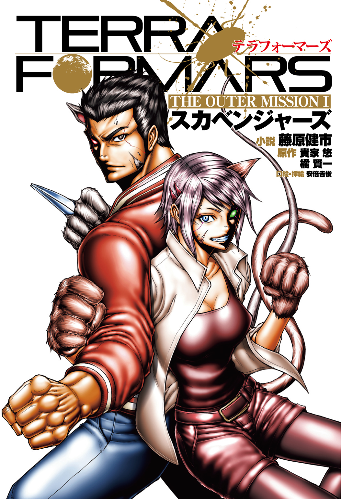
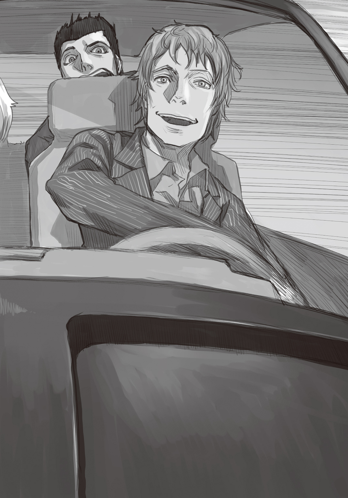

| テラフォーマーズ THE OUTER MISSION Ⅰ スカベンジャーズ | |
| 藤原健市 | |
この本は縦書きでレイアウトされています。
また、ご覧になる機種により、表示の差が認められることがあります。

 ダッシュエックス文庫DIGITAL
ダッシュエックス文庫DIGITAL
テラフォーマーズ THE OUTER MISSION
スカベンジャーズ
藤原健市
原作／貴家 悠・橘 賢一
口絵・挿絵／安倍俊
Ⅰ できそこない
壁も天井も床も、全てが灰色のコンクリート製の部屋の中で、独り。
分厚い耐衝撃透明アクリルの隔壁越しに、真っ黒いそれと対峙する。
部屋から出られる条件は、一つ。それを無力化すること。
部屋の広さは、二〇メートル四方程度だ。
決して広いとはいえず、身を隠せるような場所もない。
それと、闘うしかないのだ。
トーヘイ・タチバナは、それの感情を感じさせない黒い眼球を見据えつつ、思う。
――僕は、宇宙飛行士になって、火星に行きたかっただけなのに。
――何でこんな化け物と、闘うことになっているんだろう？
それは、アクリルの隔壁に興味あるのか、ぺたぺたと手で触っている。
身長はおよそ二メートル、体重は約一一〇キログラム。
打撃系格闘家のような筋骨隆々とした身体は、全身がくまなく、ぬらりと黒光りしている。
その強固な黒い肌は、虫の外骨格と成分と構造が似たものだ。
尻には、尾葉と呼ばれる二本の感覚器が生え、苔のような髪がへばりついた頭には、一対の触角がある。それらは、地球上では有名なあの害虫の王――
ゴキブリの特徴である。
それは、四〇年ほど前に火星で発見された、人類の敵だ。
テラフォーマー。
約五〇〇年前。資源の尽きかけた地球に増えすぎた人類は、新天地を得るべく火星の地球環境下化を試みた。
当時の科学者たちの計画は、シンプルだが確実なものだ。
大気のほとんどが二酸化炭素で極寒冷状態の火星でも繁茂できる特殊な黒い苔と、その苔をエサに繁殖できる、生命力の強い昆虫、ゴキブリを火星に送り込む。
火星の初期の過酷な環境にも耐えうるよう改良されたゴキブリは、充分な食料があり天敵のいない環境で、爆発的に増加する。死んだゴキブリを養分に苔がさらに増え、苔が光合成する酸素と苔そのものをエサに、さらにゴキブリが増える。
そうして火星の地表を苔とゴキブリで黒く染め上げることで気温を上げ、人間が生息可能になるまで大気の酸素濃度を上げる。
この試みは、五〇〇年という歳月を経て成功した。今の火星は、地球の山岳地帯に近い環境になり、かろうじて人が生存できるようになっている。
テラフォーミングは成功したが、想定外の問題も発生していた。
それは、火星に送り込んだゴキブリが、生物の歴史においては刹那とも言えるわずか五〇〇年の間に、原人レベルにまで進化してしまっていたことだ。
二五七七年。有人宇宙船バグズ一号は、調査のために火星に向かい、テラフォーマーと人類は初めて、遭遇した。結果はバグズ一号乗務員全員死亡という惨憺たるもので、人類が得たものは、殺害したテラフォーマーの頭部ただ一つだった。
トーヘイの前、隔壁の向こうにいるテラフォーマーは、その頭部の細胞からクローンで増やされたものの一体である。
テラフォーマーは、人間がゴキブリを発見すると条件反射のように退治するのと同様に、人間に対して本能的な敵意と害意を持っている。
人類の天敵と呼ぶべき存在。それが、テラフォーマーなのだ。
『トーヘイ』と、天井の隅から女の声が聞こえてきた。
天井の四隅。室内の様子を記録するカメラと、万一に備えた高出力レーザー銃座と一緒に、集音マイクとスピーカーが設置されている。女の声は、そのスピーカーからだ。
『もう一度、説明しておくわよ。そのテラフォーマーは、訓練用に戦闘力を総合的に三〇パーセントほど落として培養されている。それでも、普通の人間を簡単に殺せるのに変わりはないわ。そう、普通の人間ならね』
「わかってます、ジャニスさん。僕は、コイツに殺されない力を持っている、ですよね」
声の主の名は、ジャニス・リー。Ｕ―ＮＡＳＡこと国連航空宇宙局の、哺乳類型Ｍ．Ｏ．手術担当チーム所属の女だ。
ここは、ワシントンＤ．Ｃ．にあるＵ―ＮＡＳＡの施設の一室である。
『そうよ。あなたに施されたＭ．Ｏ．手術は、哺乳類型。昆虫型ほどの戦闘力はないわ。でも、あなたが特性を得たあの生物なら、テラフォーマーと一対一なら充分以上に戦える――何せ、相手はゴキブリなのだから』
テラフォーマーがたった五〇〇年でゴキブリから人に似た姿にまで進化できた要因の一つに、テラフォーマーが有する免疫寛容臓の存在がある。
その免疫寛容臓を人間に移植し、別生物の遺伝子を無理矢理に人体に組み込む技術。
それが、Ｍ．Ｏ．手術である。
Ｍ．Ｏ．手術の成功率は、現在、三八パーセント。失敗した場合、たいていの被験者は死ぬ。
だが、ごく稀に失敗しても死なない人間もいる。トーヘイは、その失敗作の一人だ。
『残念なことに、トーヘイ。あなたの免疫寛容臓の適合率は低かった。手術は一応成功したけれど、生涯、大量の免疫抑制剤を服用し続けなければならない。そんな欠陥品を、火星に送り込むわけにはいかないわ』
Ｕ―ＮＡＳＡは近く、アネックス一号という大型宇宙船を調査と研究のために、火星に送り込む。
Ｍ．Ｏ．手術は、アネックス一号搭乗員が、火星という過酷な環境に耐え、そして想定されるテラフォーマーとの戦闘に対応するために、施されるものだ。
手術が完全な成功と言えない以上、トーヘイが、火星に行くことはない。
「わかってます。地上での万一に備えたバックアップ要員。それが、僕の今後の役割なんですよね。Ｕ―ＮＡＳＡに居さえすれば、火星は無理だとしても、いつか、宇宙に行けるかもしれない。そのためには、まず......コイツを倒してみせろ、ということですよね」
『そういうこと。役に立たない人材を飼うほど、ここは優しい組織ではないわ。たとえそれが、ペットに適した特性を持つ人間だとしてもね』
ジャニスの口調は、嘲りを感じさせた。トーヘイは、むすっとして呟く。
「――僕のＭ．Ｏ．手術のベース生物をペットにする奴なんか、いるものか」
その呟きが、ジャニスに聞こえたのか、聞こえなかったのか。ジャニスが話を進める。
『まず変身してみせなさい。変身できてようやく、Ｍ．Ｏ．手術が本当に意味で失敗しなかったと評価できるわ。今のあなたは、手術が成功とは言えず、ただ死ななかっただけなのよ』
わかっているわね、実験動物。
そうジャニスは口にしなかったが、言葉の裏にそんな意味があるようにトーヘイは感じた。
いらっとしたが、ここで文句を付けても意味はない。トーヘイは淡々と告げる。
「わかってます。とにかく僕は変身して、コイツを倒さなければ宇宙を目指す資格がない、ということですよね」
『そういうこと。このテラフォーマーを倒せれば、君はアネックスクルーの戦闘メンバー準拠の待遇で、Ｕ―ＮＡＳＡの正式な職員になれる』
「......」トーヘイは無言で、ジャニスの次の言葉を待った。
『大丈夫、心配はいらないわ、誰にでも初めてはあるものよ。生まれ変わった気分を味わえるわ、ちょっと苦しいかもしれないけれど。それじゃ、始めなさい』
――本当に、他人事のように言うよね、この人。まあ、他人事なんだろうけど。
ここで自分がゴキブリに殺されようが、ジャニスは何も思わず、ただ、死体の処分を係の人間に命じるだけだろう。死体はおそらくＭ．Ｏ．手術研究の一環として検死をした後にバラバラにされ、防腐処理を施してサンプルになるだけだ。
いつか宇宙に行けるかもしれないという可能性と引き替えに、トーヘイは、自分をＵ―ＮＡＳＡに売った。元より孤児の施設出身だから、死体の返却を望むものもいない。
「三八パーセントという生存確率には勝ったんだ。こんなところで死ねるか」
ぶつぶつとこぼし、トーヘイは、やってやるさと口の中だけで呟くと、手にしていたシールタイプの変身薬を無造作に首筋に貼り付けた。
「!?」途端、首から全身に感電したような衝撃が走った。
全ての細胞が粟立つような感覚。ありとあらゆる神経が引っこ抜かれ、瞬時にして新しい神経が全身に張り巡らされるような、痛み。
みしみしと全身の骨が軋み、一瞬、視界がブラックアウトする。頭が中から爆砕したんじゃないか、とトーヘイは思った。
「......」視界はすぐに戻った。
トーヘイは、ちらりと自分の手に視線を落とした。訓練用コスチュームで肌が出ているのは、両手両足の先と、首から上だけだ。
手の肌の質感が、人のそれとは異なっていた。厚くはないが、多糖類アミロースの甲殻に覆われている。この肌の変化が、Ｍ．Ｏ．手術の特徴の一つだ。
両手の甲に、ナックルガードに近い形状の白く鋭い刃が備わっている。
手足の指も元より長くなり、全てに鋭い爪が備わっていた。
それらを見て、トーヘイは納得する。
「なるほどね。説明された通りだ」
鼻の両側から生えたヒゲが、わずかな空気の動きを敏感に捉える。ズボンにあらかじめ用意された穴から伸びた、己の背ほども長さがある尾に、違和感はない。
学名、Rattus norvegicus――ドブネズミ。
それが、トーヘイに施されたＭ．Ｏ．手術のベース生物である。
ドブネズミは、ゴキブリを狩り、捕食する数少ない種類の哺乳類だ。
隔壁の向こうで、テラフォーマーがぎくりと身を固くした。
テラフォーマーは、ゴキブリから進化した生物だ。本能的にネズミが天敵だとわかるらしい。
これまで隔壁にしか興味がなさそうだったテラフォーマーが、明らかにトーヘイを意識している。
『変身は成功したようね。隔壁を開けるわ。さあ、頑張って』
ジャニスの声が途絶えると同時に、ずずっと隔壁が上にスライドし始めた。
隔壁が開ききる前に、テラフォーマーが、ばっと身を低くした。あらゆる隙間を自在に移動するゴキブリさながらの動きで、隔壁の下をくぐる。
「ちょ」トーヘイが焦ったその時にはもう、目の前に、テラフォーマーの無機質な黒い眼球があった。
トーヘイは、一八歳の男子の平均的な体格だ。対してテラフォーマーは、巨軀である。体重差は倍近いだろう。打撃戦闘において、体重の差は、そのまま攻撃力の差になる。
殺られる。そんな考えが頭をよぎる。
テラフォーマーが腕を振るう。
ヒゲに風を感じたトーヘイの身体が、思考とは無関係に、反射的に動く。
一瞬でテラフォーマーの眼球が遠ざかった。トーヘイは意識することなく長い尾を振ってバランスを取り、壁に、四つん這いで横向きに着地する。
手足の爪が、コンクリート壁のわずかな凹凸に食い込み、身体を支えた。わずかにでも爪が引っかかる壁ならば、垂直にさえ走ることができるネズミならではの動作だ。
「驚いた......いきなり来るなよ、もう。まだ試合開始の合図は――あったか。隔壁、開いたしね......って。壁に貼り付けるのか、僕は。うん、ネズミも悪くないね」
Ｍ．Ｏ．手術でＤＮＡを移植する生物には、適正が存在する。手術の被験者が好きな生物の特性を選べるわけではないのだ。トーヘイが唯一適合したのが、ドブネズミだった。
ネズミのヒゲは、ただの毛ではない。血の通った、洞毛と呼ばれる感覚器官である。
視力が良いとは言えないネズミが暗闇で平然と活動できるのも、無数の神経で脳と直結した、このヒゲのおかげだ。
よりによってネズミとのハイブリッドになるなんて、とトーヘイは落胆したが、そのネズミの能力のおかげで、テラフォーマーの初撃を避けることができた。
このテラフォーマーは、戦闘訓練用に弱体化されている。だが、今の一撃をまともに受けたら、哺乳類ベースで身体強度が高いとは言えないトーヘイの頭など、スイカ同然に爆ぜていた。
「......じ」
テラフォーマーが、空振りした拳とトーヘイを不思議そうに見比べ、声を漏らした。
「じ、じ」
ふっとテラフォーマーの姿が消える。考えるよりも早くトーヘイは壁の上を走った。
どんっと足の裏に衝撃を感じ、トーヘイは少しバランスを崩した。壁から床に降り、視線を先ほどいた場所に投じる。
テラフォーマーの拳が、コンクリート壁面を丸く陥没させていた。ぱらぱらと破片がこぼれ落ちる。弱体化してあるというのが信じられなくなる威力のパンチだった。
「うわ。喰らったら本気でおしまいだな、僕なんか」
焦りでトーヘイの心拍数が速くなる。テラフォーマーが無表情のままで床を蹴った。数メートルの距離を、一瞬で移動し、再び殴りかかる。
トーヘイにはその動作が、今度は、はっきりと見えた。
のみならず、ヒゲが感じる空気の動きで、テラフォーマーの動きが読める。予測できる。
テラフォーマーが繰り出す拳をやすやすと、トーヘイはかわした。
次々とテラフォーマーが拳を放つが、その全てを、余裕を持って回避する。
――ああ、なるほど。これが、ネズミの生きている世界の、時間の流れか。
ドブネズミのＭ．Ｏ．手術を受ける際、得られるかもしれない特性の一つとして、トーヘイは『意識の加速』についての説明を受けた。
心拍数が速く寿命の短い生物と、心拍数が遅く寿命の長い生物では、時間の感じ方が違うという説がある。意識する時間の速さが異なるのだ。
ネズミから見たら、人間などスローモーションで動く、でかいだけののろまな生き物らしい。
その意識加速の特性を、トーヘイはＭ．Ｏ．手術で得られたようだ。スローモーションとまではいかなくても、テラフォーマーの攻撃は、決して対処できない速さではなかった。
「ぎ」とどこか苛立ったようにテラフォーマーが鳴いた。
テラフォーマーの大ぶりなフックをくぐり、トーヘイは拳を固めた。
狙うは、テラフォーマーの胸の中心。胸筋を思わせる形の、甲皮の境目。
その部分の奥に、食道下神経節、という部位がある。
昆虫から進化したテラフォーマーの、身体の動作を司っている場所だ。
テラフォーマーは頭を潰しても即死せず、少しの間は行動可能だが、それは、脳ではなく食道下神経節で身体を動かしているからである。
逆に言えば、頭が無事でも食道下神経節を破壊すれば、テラフォーマーは動けなくなり、放っておけば死ぬ。テラフォーマーとて弱点を持つ生物なのだ。完全無欠の存在ではない。
トーヘイは、拳から生えている歯に似た質感の刃を、テラフォーマーの胸の中央に打ち込んだ。この刃は、歯と同じくエナメル質で出来ている。
エナメル質の硬度は、およそ七。生体の中ではトップクラスの硬さを誇り、ガラスや金属にでも傷を付けることが可能だ。
ぴしっとわずかに、黒い甲皮に亀裂が走る。
殴った感触は、これまでに経験したことがないものだった。テラフォーマーの甲皮は、金属のような単純な硬さではなく、硬さの中に柔軟さがあった。
相手は、生物。そうトーヘイは実感した。生物ならば、殺せないことはない。
――いける。効果がある。
もう一発、と左の拳を放とうとしたトーヘイのヒゲが、空気の動きで危機を察した。
トーヘイはその場に、落下するようにしゃがみ込む。頭をテラフォーマーの拳がかすめた。
姿勢が崩れたトーヘイの頭に、ぬっとテラフォーマーが巨大な手を伸ばす。
わしづかみにされたら、おしまいだ。だが、しゃがんでしまっているせいで右にも左にも、後ろにも即座には動けない。
ぶんっと音を立て、トーヘイの腰から伸びたものがテラフォーマーの足首に絡みつく。
トーヘイの背と同じほどの長さの、ドブネズミの尻尾だ。
太さが腕ほどもあるその尻尾で、トーヘイは自分の身体を引っ張った。
トーヘイはテラフォーマーの足下を転がり、距離を取る。即座に立ち上がり、構え直した。
「あ、危なかった。一瞬の油断がほんとうに命取りになるよ、これは......それにしても。今までついてなかったのに、咄嗟に動くものだね、この尻尾。これが本能――かっ？」
呟く途中でテラフォーマーが襲いかかってくる。驚き、トーヘイは真っ直ぐ後ろに下がってしまった。どん、と背中が壁に付いて、はっとする。
横に逃げようとしたトーヘイの行く手を、テラフォーマーが長い腕を伸ばし遮った。
く、と歯がみして逆にステップしても、結果は同じ。壁際から逃げられない。
一瞬、トーヘイは先ほどと同様に尻尾を使うことを考えた。だが、すぐに諦める。
テラフォーマーは、驚異的に学習力が高い。
トーヘイが尻尾を足に絡めようとした瞬間、テラフォーマーは尻尾を摑んで捕えるだろう。
捕まったら最後、手足を引きちぎられる未来しかない。
「ここで、やるしかない！」
トーヘイは、テラフォーマーと打ち合う覚悟を決めた。
左右に逃げられないなら、とにかく攻撃を避けるのみ。
避けて避けて、回避の間に胸中央奥の食道下神経節の破壊を達成する。
できなければ、結果はシンプルだ。おそらくは死ぬ。
この実験室の天井四隅にあるレーザー銃座は、トーヘイを助けるためのものではない。トーヘイが仕留め損なった際に、テラフォーマーを確実に殺すためだけのものだ。
トーヘイは、空手の有段者である。二段で、中学生の時に日本の学生の大会で、上位に進出した。
高校からは飛び級で一気に四年制大学まで卒業してしまったため、中学生以降の実績はないが、宇宙飛行士を目指すトレーニングの一環で、常に修練を積んできた。
――相手を、人間だと思えばいい。ただ、当たれば死ぬ拳と脚を持っているだけの。
「じじ」
優位を疑わないのか、平坦なテラフォーマーの鳴き声に、トーヘイはわずかな優越感がこもっているような気がした。
「調子に乗るなよ、この害虫が。殺れるものなら、殺ってみろよ」
トーヘイはわざと挑発するように告げた。途端、一撃必殺の拳が顔をめがけて飛んでくる。
目で拳を追うまでもなく、空気の流れで拳の軌道が容易くわかった。
視覚に頼らずに済むので、回避行動に集中できる。集中力が意識加速の効果をあげ、テラフォーマーの動きがいっそう、トーヘイには遅く感じられた。
トーヘイは、ぎりぎりで頭を横に振って拳を避けた。
風圧が髪を派手に揺らすのを感じつつ、視界の隅でテラフォーマーが空振りした拳を捕えたまま、右の拳を黒い胸板に突き込む。
がつっと拳から生えた歯ならぬ刃が甲皮を削り、亀裂が、ほんの少しだけ広がる。
テラフォーマーには痛覚がない。だからトーヘイの攻撃など意にも介さず、再び拳を放つ。
その拳をトーヘイはまたぎりぎりのタイミングで避け、前のめりになるテラフォーマーの勢いまで利用して、数ミリも違わないポイントに左の拳を打ち込んだ。
ぴき、と亀裂の数が増える。だがまだ、拳の刃で貫けるほどではない。
――焦るな、僕。ただ正確に、作業をこなせ。
一度でも避け損なったら致命傷になるテラフォーマーのパンチを紙一重でかわしつつ、トーヘイは繰り返し、胸の甲皮の継ぎ目に打撃を入れ続けた。
三発、四発、五発、六発。七発目で、ぱらっと甲皮が破片となって剝がれ落ちる。
その隙間、ほんの五センチほど。トーヘイの拳の刃が、かろうじてすり抜けられる広さだ。
そこに刃を突き立てれば、亀裂の奥にあるテラフォーマーの弱点、食道下神経節を貫ける。
――ここだ！
待ちに待ったチャンスに、トーヘイの気は急いた。
利き腕の右拳に力がこもり、突きを放つ動作が、わずかに大きくなる。
その隙をテラフォーマーが見逃さなかった。
パンチとは異なる空気の動きにトーヘイが気付いた瞬間、テラフォーマーが蹴りのモーションに入った。
胴を狙った回し蹴りだ。まともに喰らえば、Ｍ．Ｏ．手術で強化されているとはいえ、人間の身体など真っ二つにされる。
下がって回避は、背後が壁だから不可能だ。横に跳んで逃げるのは間に合わない。
腕でガードしようが、そんなものは意味をなさない。腕などへし折られるだけだ。
トーヘイは咄嗟に、蹴りから逃げるように横に跳びながら片足を上げた。
裸足の足の裏で、テラフォーマーの蹴り脚に乗る。
蹴りの勢いを無理に吸収しようとせず、トーヘイは蹴りの威力に身を任せた。
一瞬でテラフォーマーの姿が遠ざかる。相手の力を利用しての回避に成功したが、安心する暇はない。このままだと壁に叩きつけられる。そのタイミングを狙われたら、それこそ今度は避けられない。
「冗談じゃない！」
トーヘイはくるっと宙で身を翻し、両手両足、さらに尻尾を使って壁に着地した。
どんっとテラフォーマーが床を蹴り、壁ごとトーヘイを粉砕しそうな勢いで拳を振り上げて迫る。
壁から降りて体勢を整える暇はない。トーヘイは、このまま迎撃する覚悟を決めた。
両手両足で壁を突き飛ばし、跳ぶ。
トーヘイを叩き落とすつもりか、テラフォーマーが構えを変えた。両手を組み合わせ、振り上げる。
「そうはいかない！」
トーヘイは、ぶんっと尻尾を振り下ろし、尻尾で床を叩いた。反動で、身体が跳ね上がる。
鼻先、ほんの数センチをハンマーのような勢いでテラフォーマーの拳がかすめた。
がっとテラフォーマーの拳がコンクリートを砕く。
そのすぐ前にトーヘイは着地し、右拳の刃をテラフォーマーの胸の亀裂に突き立てた。
トーヘイの拳の刃は短い。テラフォーマーの分厚い身体の奥にある、食道下神経節までは届かない――
「伸びろおッ!!」
気合いに応じて、拳の刃が伸びた。生涯伸び続けるネズミの門歯の特性の応用だ。
トーヘイは、拳の先でぶつっと何かが千切れる感触を覚えた。
途端、がくりとテラフォーマーの全身から力が抜け、その場に崩れ落ちる。
「じ、じじじ、ぎ、じ」
何が起きたかわからない、というようにテラフォーマーが鳴いた。出せるのは声だけで、床に伏したまま身動きできないらしい。
「か、勝てた......はぁぁぁ......」
トーヘイは大きく息を吐き、脱力した。
闘うという意識が消えたため、変身薬の効果が失われる。多糖類アミロースの甲皮がぱらぱらと剝がれ、元の肌に戻る。顔のヒゲも抜け落ち、尻尾は見る間に縮んで消えた。
『よくやったわ、おめでとう。合格よ、トーヘイ。少し後ろに下がりなさい』
天井の隅から、ジャニスの声が聞こえた。
「あ、はい」戦闘を監視されていることをたった今まで忘れていたトーヘイは、言われるままにテラフォーマーから離れた。
直後。天井の四隅から、赤いレーザー光がテラフォーマーに照射された。
超高熱のレーザーが、テラフォーマーの身体を焼き切っていく。タンパク質の焦げる芳ばしい臭いが立ち上る。
「ぎぃッ！ ぎ、ぎ、ぎぎぎッ！」
痛覚がなくてもレーザーの熱は感じるのか、テラフォーマーが悲鳴を漏らした。
その間もレーザーが、テラフォーマーの身体をバラバラに焼き切り続ける。
「ぎ」テラフォーマーの頭部が、左右に真っ二つになった。
標本のような脳の断面を目にし、思わずトーヘイは顔を背けた。
残酷さなら、人間もこのゴキブリも変わらないよな。そんなことをふと思う。
『トーヘイ。さっそくだけれど仕事があるわ。私のオフィスまですぐに来ること』
いいわね、と念を押すと、トーヘイの返事も待たずにジャニスの声は途絶えた。
「......仕事？ 僕に？ いきなり？」
テラフォーマーを倒せたことで、トーヘイはＵ―ＮＡＳＡを追い出されずに済んだばかりだ。まだ配属先さえ決まっていない。
とはいえ、ここで仕事を断れば、Ｕ―ＮＡＳＡでの居場所を失うことは想像できた。
きょとんとした顔でトーヘイは首を傾げた。同時に、がこんと重い音を立て、壁の一角が開いた。そこからさっそく白衣姿の男たちが部屋に入ってきた。Ｕ―ＮＡＳＡの科学者たちだ。
トーヘイには目もくれず、科学者たちはテラフォーマーの死骸に群がる。
「おお、見事にばらばらだ」「免疫寛容臓以外に用はないんだけどな」「他は標本にするだけだ」「うむ、この頭蓋の断面はいいな。脳幹で綺麗に切れている」
科学者たちは、持ってきた容器に慣れた手つきでテラフォーマーの組織を回収し始めた。
その中の一人が、トーヘイを横目で見た。
「君。用がないなら、出て行ってくれないかね。作業の邪魔だよ」
「あ、すみません。失礼しました」
トーヘイは深くお辞儀をすると、早足で外に向かった。入り口で靴を履き、廊下に出る。
「......何だかすごいな、科学者って人種は。完全に、テラフォーマーをモノとしか見てない感じだ」
そんな感想を呟くと、トーヘイはジャニスのオフィスに向かった。
「......あれ。どっちだっけ」
右を見ても左を見ても似た廊下と壁が続いている場所で、トーヘイは立ち止まった。
「......また、迷った。Ｍ．Ｏ．手術で方向音痴も治ればよかったのに」
トーヘイは自他共に認める方向音痴で、外だろうが建物の中だろうが、すぐに迷う。
迷い慣れているから、誰かに助けを求めることにも慣れている。
誰かいないかと困惑顔できょろきょろしていると、背後のドアが開いた。
ちょうどいい、道を聞こうとトーヘイは振り返った。
灰色の髪に蒼い瞳、長い睫に白い肌。すっと通った鼻筋に、細めの顎。
歳はトーヘイと同じくらいだろうか、まるで人形のように顔立ちが整った美少女だ。
トーヘイと同じ訓練用コスチューム姿で、髪はショートカット。腰は女性らしく細く、胸と尻は均整が取れつつボリュームがある。
もう少し背があればモデルでもできるんじゃないか、とトーヘイが思ってしまうようなその美少女が、不快そうに、眉間にくっきりと皺を寄せた。
「あ？ 何だ、テメェ。いきなりメンチなんぞ切りやがって。喧嘩でも売ってんのか？」
「え。あ。いや。そんな気は、ぜんっぜんないんだけど」
「じゃあとっととそこどけよ。あたしは急いでんだ」
「あ、ごめん」
トーヘイは頭を下げて少女に道を譲った。ふん、と少女が嘲るように鼻で笑う。
「テメェ、日本人か？」
「そうだけど。それが何か？」
「すぐにへこへこ謝るってのはほんとなんだな、あの島国の猿っ」
ぷ、と笑いをつけたして、少女はくるっとトーヘイに背を向けた。その言葉と態度が、トーヘイはかちんと来た。
「おい、ちょっと待てよ」
少女の肩を背後から摑む。瞬間、少女が素早く身を翻した。
直後、トーヘイは天井を見た。顎から頭に衝撃が突き抜け、アッパーを食らったと気付く。
少女の肩から手を放すと、しびれる顎を片手で押さえ、トーヘイは顔を前に戻した。
「いきなり殴るだなんて、酷いじゃないか！」
「テメェこそいきなり肩なんか摑むんじゃねーよ。レディに対して失礼だろ」
「誰がレディだよ、誰......ぶっ？」
ぱんっとこぎみよい音がして、トーヘイの顔が、弾けるように横を向く。テラフォーマーのパンチよりも数倍速いとしか思えない左ジャブを、少女が無造作に放ったのだ。
「島国の猿は礼儀も知らないみたいだな。ま、猿だし仕方ねーか。じゃ、あたしの邪魔をするなよ？ 次は手加減してやんねーぞ」
とんっとトーヘイの肩を片手で突き飛ばし、少女が身を翻す。また殴られてはかなわないと、今度は肩を摑まず、その背にトーヘイは声をかけた。
「待てってば。日本人を馬鹿にした上に二発も殴っておいて、謝罪の一つもないのかい」
少女が、いっそう不機嫌な顔で振り返る。
「ああ？ 謝るよーなことしてねーっての。あたしはジャニスに呼ばれて急いでんだからよ。これ以上邪魔するってんなら、そこの中のゴキブリみたいにしてやるぜ？」
少女が親指で、出てきた部屋を指さした。そのタイミングで、廊下の先から白衣の科学者たちが複数、やってきた。
科学者たちはトーヘイと少女に目もくれず、室内に入っていく。
「いやあ、見事に頭がぐちゃぐちゃだ」「ふむ、目に付く傷は他にも多いな」「ダメージの受け方の調べがいはありそうだねぇ」
そんな科学者たちの声が廊下にまで聞こえてきた。
ここでトーヘイは、少女の首筋に自分と同じ変身薬のシール剤が貼ってあることに気がついた。シール剤タイプの変身薬は、哺乳類型Ｍ．Ｏ．手術被験者専用である。
少女がトーヘイと同じくＭ．Ｏ．手術を受けていて、テラフォーマーを相手に戦闘訓練をしてきたことは、間違いなさそうだ。
「その。さっき、ジャニスさんの名前を口にしたよね」
「したけど。それが何だってんだよ」
「僕も、Ｍ．Ｏ．手術後の管理担当が、ジャニスさんなんだ。それで、ジャニスさんに呼ばれてるんだけど......その。迷っちゃって......はは」
ふう、と少女が呆れたように息をつく。
「......オーケイ、わかった。おまえがトンマでトンチキでノロマな間抜けだってことは了解したよ。あたしにジャニスのところまで連れてけってんだな、この迷子野郎？」
酷い言われようだと思うも、トーヘイは反論しなかった。
文句を付けたら、絶対にジャニスのところに連れて行ってもらえない気がしたからだ。
「......お世話になるよ。僕は、トーヘイ・タチバナ。アネックス一号のクルーになり損なった仮契約職員だよ」
少女が回れ右をしながら返す。
「あたしはエリザベス・ルーニー。死に損ない......いや、同じくクルーのなり損ないさ。リジーでいい。んじゃ行くぞ」
死に損ない、という言葉が気になったが、背を向ける際にちらっと見た少女――リジーの眼が、ぞくりとするほど冷たかったため、トーヘイは疑問を口に出せなかった。
無言で先を行くリジーを追って、廊下を進む。
幾度か階段を登り降りし、さらに幾度か廊下の角を曲がったところで、リジーが立ち止まる。
「どうかした？」とトーヘイはリジーの背に問うた。
「ああもうどうしてこの建物、どこもかしこも同じような造りなんだよ」
トーヘイの問いには答えず、リジーが頭をかきながらぶつぶつとこぼした。
「......もしかして。迷った？」
振り向きざまに、リジーが早口でまくしたてる。
「ち、ちげーよ、バッカ。誰が迷うもんか。ちょっとどこにジャニスの部屋があるのか、ど忘れしただけだっての」
「......いや。それを迷ったって言うんじゃ」
「ああ？ 文句あるなら一人で行けよっ」
リジーがトーヘイの胸元を摑む。華奢な見た目に反して、けっこうな力でトーヘイは引っ張られた。
「お、落ち着こう。さっき殴られたことは、もう忘れたから」
「忘れたって言ってるのは、忘れてねえ証拠だろ。しつこい野郎だな、おい。今度こそ忘れるまで頭をぶん殴ってやろうか？」
先ほどのリジーの動きをトーヘイは思い出す。
最初に受けたアッパー、次のジャブ。間違いなくボクシングの技だ。
リジーの名に、今さら聞き覚えがあるような気がして、トーヘイは胸元を摑まれたまま、首を傾げた。
「......あれ。リジー......エリザベス・ルーニー......どこかで......」
「んだよ、あたしの名前がどーかしたのかよ」
「ああ、そうだ！ 思い出した、エリザベス・ルーニーって、あのエリザベス・ルーニーなのか、ハイスクール女子ボクシング、バンタム級チャンプの!? 次のオリンピックの、ゴールドメダリスト候補って言われてた!?」
数年前。トーヘイが飛び級で高校のカリキュラムを終えて大学に進んだ頃、同じ歳のアマチュア女子ボクシング選手が話題になった。
高校一年生で州大会から全国大会まで全試合ＫＯの無敗で勝ち進み、一度も負けることなく、バンタム級を制した、美少女ボクサー。
一時期、かなりマスコミが騒いだのでトーヘイの記憶にも名前と顔が残っていた。
数年前よりは成長している上に、ものすごく不機嫌そうな顔をしているが、リジーは間違いなく、トーヘイの記憶にあるエリザベス・ルーニーだった。
ち、と舌打ちしてリジーがトーヘイを放した。トーヘイは新たな疑問に首を捻る。
「――って、オリンピックって来年だったよな？ 強化選手のはずの君が、何で、こんなところにいるんだ？」
今年は二六一九年。来年が、オリンピックイヤーである。本来ならば、オリンピック参加の選手が、こんなところでＭ．Ｏ．手術を受けているはずがない。
「ボクシングなんざとっくに辞めたっての。あんた、知識が古いな。二年前に行って脳みそ洗ってきやがれ、このファッ〇ンイエローモンキーが」
「二年前......何かあったのか？ その頃僕、大学の論文作成で忙しくて、ニュースとか、ほとんどチェックしなかったから」
ちっ、と先ほどより大きくリジーが舌打ちする。
「知らないならそのまま知らないでいやがれ。てめえ、マジ不愉快だ」
ぎろりと大きな目でリジーがトーヘイを睨む。トーヘイは何が何だか、わからない。
「......僕に何か落ち度があったなら、謝るけど。何を謝っていいかわからないと、謝りようがない」
「そんなら死んで詫びとけよ。それであたしは、すっきりするさ」
無責任すぎるリジーの言葉に、トーヘイはさすがに苛立った。
「死ねって。初対面の人間によくも言えるな。さすがに聞き捨てならない」
「あん？ 聞き捨てならねえってんならどうするんだ、童貞野郎」
「ちぇ、童貞っ？」
予想もしていなかった言葉に、トーヘイは面食らった。返す言葉もなく、焦る。
何をどう言えばいいのかわからずあたふたしていると、後ろから声をかけられた。
「なんだなんだ、こんなところで痴話喧嘩か？ 仲いいな」
男の声だ。リジーの視線がトーヘイの顔よりも上を向く。後ろから来た男は大柄らしい。
トーヘイは振り返った。見覚えのある顔だ。思わず、相手の名前をフルネームで口にする。
「小町小吉――ア、アネックス一号艦長のっ？」
二五九九年、バグズ計画で火星に行ったバグズ二号クルーの数少ない生存者で、来年二六二〇年に火星に赴く宇宙艦アネックス一号の艦長にして、火星探索チームの総隊長である。
小町小吉は、二〇年前、バグズ手術というＭ．Ｏ．手術の技術ベースとなった昆虫のＤＮＡを後天的に組み込む手術を受けており、オオスズメバチの特性を持っている。
このＵ―ＮＡＳＡにいる人間で、小吉を知らないものはいない。
小吉が、無骨な顔に人の好さを感じさせる笑みを浮かべた。
「おいおい、そんな人を有名人みたいに言うなよな」
「有名人ですよ！ だって、世界で唯一、人類で二度火星の土を踏むことになる宇宙飛行士じゃないですか、小町艦長は！」
宇宙飛行士にあこがれのあるトーヘイは、興奮して声を張った。
小吉が照れくさそうに苦笑する。
「そりゃまあ艦長だけどよ。操船は俺がするわけじゃねえし、宇宙飛行士っつーのとは、ちょっと違うからな。でもまあ、そうキラキラした目で見られるのは、悪い気しねえな――って。おまえの首のシール、変身薬だよな？ おまえもアネックスクルーになるんじゃないのか？」
トーヘイの顔から喜びの色が消え、苦笑が浮かぶ。
「僕は火星には、その。行けないんです」
「何でだ？」
「Ｍ．Ｏ．手術、一応は成功したんですが、適合率が低くて。常に免疫抑制剤を大量に服用する必要があって、アネックス一号クルーの採用基準を満たせなかったんです」
あー、と小吉が思い出したような顔で声を漏らした。
「手術の不完全適合者って奴か。そか、それは残念だったな......おまえの分まで、火星で頑張ってきてやるよ。帰ってきたら、土産話でもしてやるさ」
小吉の言葉はただの社交辞令かもしれないが、トーヘイには嬉しかった。
「ありがとうございます。同じ日本人として、応援してますから」
お、と小吉の表情が明るくなる。
「なんだおまえ、日系人じゃなくて日本人なのかっ。そっか、そんじゃ仲良くしないとな！ 出身どこだよ？」
小吉がトーヘイの肩を片手でバンバンと叩いた。結構痛いが、トーヘイは笑顔になる。
「僕は静岡です。ハイスクールからは飛び級でアメリカに来ましたけど、中学までは、空手もやってました！」
「おお、マジか！ 空手なら俺、六段だぜ！ そっかそっか、俺は――」
「あのさ。あんたら、盛り上がってるとこ悪いんだけどよ」
むすっとした顔でリジーが口を挟む。
「あたしら、ジャニスって奴のオフィスに急がないといけねーんだよ。オッサン、ジャニスのオフィスがどこか、知らねえか？」
横柄なリジーの口調に、トーヘイは振り返った。
「リジー、小町艦長に乱暴な口の利き方は」
「知るかよ、別にあたしの上司でもなんでもねえし。オッサン、どうなんだ？ ジャニス・リーっつーＭ．Ｏ．手術哺乳類研究チームの女のオフィス、知ってるのか、知らねえのか」
ふむ、と小吉が思案顔になる。
「ジャニス・リーのオフィスか。確か、こっちだ。案内してやるから、ついてきな」
小吉が踵を返す。その大きな背に、トーヘイは訴える。
「そんな、小町艦長に道案内させるなんてできませんよっ」
「いいって、いいって。俺のほうは急ぎの用じゃねえしな」
「ですが」と言い募ろうとしたトーヘイの脚を、後ろからリジーが蹴る。
「いいからとっとと歩けよ。案内してくれるってんだ、さっさと行ったほうがオッサンにも迷惑にならねえだろ」
もっともなリジーの言葉にトーヘイは反論できず、納得がいかないまま、リジーと肩を並べて小吉の後ろを歩き始めた。
しばし後。幾度か階段を登り降りし、角を数回曲がったところで、小吉が立ち止まる。
「ついたんですか？」とトーヘイ。
「......迷った」と小吉が苦笑して振り返った。
「頼りにならねえ艦長さんだな、おい」とリジー。
あたふたと小吉が、ウエアのポケットから掌サイズの携帯端末を取り出した。
「ちょ、ちょっと待ってろ。端末使えばすぐに現在位置とルートぐらいわかるって」
「ったく、端末持ってるならさっさと使えっての。こっちは戦闘訓練直後で、ソイツはロッカーの中なんだよ」
支給されている情報端末を、トーヘイもリジーも今は所持していない。持っていればそもそも、道に迷うことはなかった。
持っていても使わないで迷う人がいるのか、とトーヘイには小吉の姿が新鮮に見えた。
小吉が太い指で、小さい端末の画面をタッチ操作する。
「アイコンがやたら小さくて使いにくいんだよな、コイツ。ええと、確かここをこう」
小吉の手つきは、あまり使い慣れていなさそうだ。
ダメだこりゃ、とリジーが肩をすくめる。
「こんなところで何をしてるんだ、艦長？」
女の声が聞こえ、トーヘイもリジーも、小吉も同時に声がしたほうを向いた。
理知的な顔立ちに眼鏡をかけた、金髪碧眼の女が立っていた。
その顔も、トーヘイは知っていた。
ミッシェル・Ｋ・デイヴス。アネックス一号の幹部クルーで、副長を任されている。
トーヘイは、ミッシェルとは面識がまったくない。彼女の話はジャニスから少し聞いただけだが、ミッシェルは、バグズ二号の艦長だった父親からの遺伝で生まれつき免疫寛容臓と弾丸アリの特性を有しているらしい。
噓か真か知らないが、怒ると強烈に怖いという噂も聞いている。
ミッシェルを見て、小吉の表情がぱっと明るくなった。
「お、ミッシェル。いいところで会った！ おまえ。ジャニス・リーって職員のオフィスの場所、知らねえか？」
「は？ 何を言ってるんだ？」
ミッシェルが、きょとんとした。小吉が再び困り顔になる。
「だからさ。ジャニスって奴のオフィスの場所だよ。この端末、使いにくくてさ」
「......何の冗談なのか知らないが。そこだろ」
ん、とミッシェルがトーヘイたちの横を指さした。
そこにドアが有り、ネームプレートには確かにジャニスの名があった。
小吉がぽかんと口を開ける。はあ、とミッシェルがため息をつく。
「しっかりしてくれ、艦長。あっちでも迷子になられたら、かなわないぞ」
「あは。あははは。い、嫌だな、副長。迷子なわけがあるか、慣れた施設なんだから。冗談だ、冗談！」
照れ隠しか、バンバンと小吉がトーヘイの背中を平手で叩いた。
「じゃ、またな――って、そうだった。名前、聞いてなかったな。なんて名だ？」
小吉が、トーヘイに握手を求めるよう手を差し出す。その手をトーヘイは握り返して答える。
「トーヘイ・タチバナ――いえ、立花東平です」
「そっか。じゃ、こっちの流儀でトーヘイって呼ばせてもらうかな、一応。お前の端末に、俺のほうから連絡先を送っておくよ。何かあったら気楽に連絡してくれ、同じ日本人だしな」
気さくに小吉が言った。トーヘイは握手をした手を放すと、深く頭を下げる。
「きょ、恐縮です、小町艦長！ 今日はお世話になりました！」
「いいってことよ。俺も迷っただけだしな」
「......やっぱり迷ってたのか」とミッシェル。
「ったく大丈夫か、この艦長」とリジー。
リジーとミッシェルは、ちらっとだけ視線を合わせると、互いに興味がなさそうに目を逸らした。それをトーヘイは、頭を上げる際に横目で見て、思う。
――どことなく似てる気がしなくもないな、この二人。何となく怖そうだし。
リジーの前で、思ったことをそのまま口に出さない程度には、この短時間の付き合いで、トーヘイは学んでいた。
じゃあな、と片手を挙げた小吉が、ミッシェルと並んで立ち去っていく。
「ミッシェルは、何でこんなところにいたんだ？」
「部下のＭ．Ｏ．手術について、ちょっとな」
そんな会話をしながら、小吉とミッシェルは廊下の角を曲がって見えなくなった。
二人を見送ったトーヘイの背中を、どんっとリジーが拳で強く叩く。
「ぼけっとしてんじゃねーよ。とっとと入るぞ、ここの部屋」
「......ああ、わかった。でもさ、背中を殴ることはないんじゃないか？」
「オッサンにバンバン叩かれて嬉しそうな顔してたからな、そういう趣味があるんじゃねーかと思ったんだよ」
「ないって、そんな趣味」
トーヘイは、ぼそっと一言だけ反論して意識を仕事に戻すとジャニスのオフィスのドアに向かった。
これから何が自分を待っているのか、まったく考えずに。
Ⅱ 卵泥棒
「あなたたち二人には、これからコンビを組んでもらうわ」
ジャニスのオフィス。窓際のデスク横に立っている、胸元が大きく開いたワンピースの上に白衣を羽織った長い赤毛が印象的な女――
ジャニス・リーが、トーヘイとリジーがオフィスに入るなり、来室が遅くなったことを咎めもせずに、そう言った。
唐突な辞令だ。トーヘイより先にリジーが口を開く。
「あ？ コイツと組むのかよ？ おいおい、冗談はよしてくれ、ジャニスさん。何をさせたいか知らねえけど、コイツと組むくらいなら、あたし一人のほうがよっぽど働けると思うぜ？」
は、と馬鹿にしたようにリジーが短く笑う。トーヘイはむっとした顔をした。
「僕だって、こんな人と組みたいとは思いません。だいたい――」
「あ？ あたしの何が不満だってんだ、この野郎」
リジーがトーヘイを横目で睨んだ。その目をまっすぐとトーヘイは見据え返す。
「そういう横柄な態度だよ。初対面の相手に、よくもそんな偉そうに振る舞えるものだね」
「ああ？ 何だか知らねえが妙に旨そうな匂いをぷんぷんとさせてる奴が、よく言うな」
旨そう。トーヘイには、一瞬、リジーの瞳孔が大きく丸く開いたように見えた。
その眼を見た瞬間、えも言われぬ悪寒が背筋を駆け抜け、ぶるっとトーヘイは身震いした。
喰われる。
そんなことを何故か考えてしまい、一歩、後に下がった。
「へ、びびってやんの。ほらよ、ジャニスさん。この通りだ、こんな奴と組んだって――」
リジーの言葉の途中で、ジャニスが告げる。
「決定事項だから拒否権なんてないわよ、あなたたちに。組む相手が役に立つかどうかは関係ないの。これから変身薬を所持して施設の外に出るあなたたちには、万一そのまま逃走したりしないよう、互いに互いを監視させる必要がある。だから二人で組ませる。それだけよ」
言いつつ、ジャニスが胸の下で腕を組んだ。白衣のせいでわかりづらかった豊かな胸が強調されるが、トーヘイはそんなことに興味を持てなかった。
トーヘイは真顔に戻ってジャニスに問う。
「変身薬を所持して、ですか？ まさか、テラフォーマーが施設の外に逃げ出したんじゃ」
「違うわ。最悪の場合、そうなるかもしれないけれど」
と、ジャニス。リジーが訝しむように眉を寄せる。
「回りくどい言い方するなよな。何がどうしたってんだよ」
そうね、とジャニスが仕切り直すように小さく呟いた。数秒の沈黙の後、苛立ったような表情になって告げる。
「盗み出した人間がいるのよ。あの、ゴキブリの――卵を」
トーヘイは絶句した。事件は重大どころの話ではない。
知識としてしか知らないが、テラフォーマーの生態は、祖先であるゴキブリに似通ったところが多く、繁殖は卵生だ。
テラフォーマーは、複数の卵が入った卵鞘というものを産む。一つの卵鞘から孵化するテラフォーマーは、最低でも二匹。多ければ五匹を超えることもあるらしい。
卵鞘が外で孵化すれば、複数のテラフォーマーが、街に放たれる。
一般人に、あのゴキブリ人間に抗う術などあるはずもなく、どれほどの被害者が出るか、想像したくもないほどだ。
リジーは事の重大さをわかっていないのか、平然としている。
「オーケイ、わかった。その卵とやらを取り返してくればいいんだな？」
トーヘイは軽くうろたえながら、リジーに訊ねる。
「リ、リジー。簡単に言うけど、それがどれくらい重大か、わかってるのかい？」
「は。ほんとおまえ、チキンだな。重大だとか考える前によ、そんなもん取り返さないとヤバいに決まってるじゃねーか。変身薬を持って外に行けってんだから、孵化する可能性もあるし、その場合はゴキブリを狩るしかねえし？ ベストは孵化する前に、盗んだ奴をとっ捕まえて卵を取り返すことに決まってるだろ？」
すらすらと淀みなくリジーが言った。トーヘイはぱちくりと瞬きをする。
「......バカじゃなかったのか――ぶっ？」
ぱんっと鋭いジャブをトーヘイは鼻に受けた。
手首のスナップが利いた、いい一発だ。トーヘイには、動作がほとんど見えなかった。
「てめえこそ、初対面の女をバカだと思うんじゃねーよ、失礼にもほどがあるぜ」
「す、すみまへん」
トーヘイは鼻を押さえて謝った。リジーは手加減してくれたようで、鼻はじんじんしびれるだけで、鼻血は出なかった。トーヘイは改めてジャニスに目を向ける。
「盗まれた卵鞘ですが。すぐに孵化する危険性があるものなんですか？」
「そこは未知数ね。持ち出されたのは、液体窒素で冷凍保存されていたものなの。この施設の設備を使えば確実に孵化させられるけれど、自然解凍で孵化するかどうかは、わからないわ。仮に孵化すると想定した場合、十二時間経てば、孵化の可能性が高くなる」
「......十二時間。それまでに卵鞘を取り戻さないと、最悪の場合――」
「そう。奴らが街に解き放たれることになる。それは、絶対に避けなきゃいけないの」
ジャニスの表情は、深刻そのものだった。一方で、リジーは平然としている。
「でもよ。十二時間は安全だってことだろ？ 余裕だろ、余裕」
トーヘイは血相を変えて声を荒らげる。
「余裕なものか！ こうしている間にも、盗んだ犯人はどこまで逃走しているかわかったもんじゃないんだ！」
「ワシントンからは出てねえんじゃねえのか？ なあ、ジャニスさん。卵が盗まれたってわかった時点で、警察には連絡してあるんだろ？」
リジーの問いに、ジャニスが頷く。
「もちろんよ。テラフォーマーの存在は、警察だと上層部しか知らないけれど、バイオテロに使用できる危険物質が盗難されたという形で、警察には動いてもらっているわ。すでに、主要な道路や駅、空港、全てで警戒態勢が敷かれている。街頭の監視カメラ網をすり抜けてこの都市から脱出するのは、困難なはずよ」
十二時間。時間に余裕があるとは言えない。だがトーヘイには、警察の協力さえあれば犯人を見つけ出すことはできそうに思えた。オフィスの壁にある時計を、ちらりと見る。
今、ちょうど昼の零時だ。日付が変わる頃まで、時間には猶予がある。
トーヘイは気を取り直して、ジャニスに訊ねる。
「監視カメラで見つけられるってことは。盗んだ人が誰かは、わかっているんですよね？」
「コイツよ」
ジャニスが、デスク上の薄型モニタの向きをトーヘイたちに見えるように回すと、画面をタッチ操作した。ぱっと男の顔写真が表示される。
褐色の髪の白人男性だ。顔写真の横に体格等の身体データも表示されている。白人男性としては平均的な体格だ。顔立ちも、それほど特徴がない。
「デール・ギブソン、二六歳。アネックス計画の志願者だけれど、Ｍ．Ｏ．手術はまだ受けてないわ。技術系職員の誰かが手引きして、この男に、卵鞘を一つ盗ませたみたいなの」
「みたい、ってのは何だよ？」とリジー。
「誰が卵鞘をコイツに盗ませたのか、まだわからない。ただ、卵鞘がなくなり、この男が忽然とこの施設から姿を消した、という事実があるだけよ」
と、ジャニス。憂鬱そうに髪を片手でかき上げてから、続ける。
「これから施設に警察を入れて捜査させるけれど、テラフォーマーについて、捜査官に知られるわけにはいかない。だから施設内の捜査は限定的なものになるし、施設内の捜査ですぐに事実が明らかになる可能性は低いわね」
トーヘイとリジーは、同時にまったく異なる意見を口にする。
「それじゃあ、この人が盗んだとは限らないじゃないですか」
「決まりだな。そんなの、コイツが盗んだにきまってるだろ」
意見が対立し、トーヘイとリジーは視線を交えた。
「決めつけるのはよくないと思うけど」
「おめでたい奴だな、性善説なんか信じてやがんのか？」
む、とトーヘイは黙り込んだ。リジーも口を閉ざす。
「意見は聞いてない。あなたたちがすべきなのは、万一に備えて変身薬を所持し、警察と協力して、デール・ギブソンを追うこと。事実は、デールを確保すれば自動的に明らかになるわ」
とジャニス。デールの有罪無罪をここで論議するよりも、ジャニスの言う通りにしたほうが事実を知るには早いはずだ。
「デールの発見は、それほど難しくないはずよ。持ち出された卵鞘は比較的小型のものだけど、それでも、大きめのスーツケースなどで持ち歩く必要があるから、目立つわ」
テラフォーマーの卵鞘はラグビーボールのような楕円形で、平均的に、大人の股下近くまでの大きさがある。それだけの大きさのものを持ち運ぶのだ。目立たないわけがない。
顔が割れていて、大きな荷物を持っている。確かにデールの発見は容易そうだ。
「わかりました、任務にあたります」
と、トーヘイ。リジーが頷きもせずに告げる。
「どうせ拒否権はねえんだろ。いいさ、やってやる」
「話が早くて助かるわ。これが変身薬と、念のための装備よ」
ジャニスがデスクの抽斗を開けると、タブレットケースを二つ取り出し、デスクに置いた。変身薬のようだ。
「変身薬は、二回分。使わないことを祈っているわ。それから、これが武器」
さらに、ごとっと重い音を立てさせて、オートマチックタイプの拳銃を二丁と携帯用ホルスター、さらに予備の弾倉を二つ、デスクの上に置く。
古くさい、油の臭いがしそうな拳銃だ。トーヘイは、その拳銃を見て問う。
「......その拳銃は？」
「二〇世紀にファブリックナショナル社が開発した、ファイブセブンと呼ばれる拳銃の、そのレプリカよ。マガジン一つ当たりの弾数は二〇発。予備弾倉は、一人一つずつ。見た目は古くさいけれど、最新の素材でできているわ」
「いえ、そういうことじゃなくて。その拳銃を、僕たちに持って行け、ということですか？ 射撃訓練は一応受けましたけど、拳銃程度じゃ、万一、卵鞘からテラフォーマーが孵化した場合、あまり役に立ちませんよね」
テラフォーマーの頑丈さを、トーヘイは今日、身を以て学んだ。
哺乳類型Ｍ．Ｏ．手術を受けたトーヘイは、昆虫型などと違い、戦闘力はそれほど高くない。だが、それでも当たり前の人間よりははるかに筋力があり、並の拳銃よりも、トーヘイのパンチのほうが、ずっと威力がある。
エナメル質の刃を備えた拳を何発も打ち込んでようやく、テラフォーマーの胸部の殻に、トーヘイは穴を開けることができた。
拳銃の弾丸など、あの殻にはやすやすと弾かれるとしか思えない。
「変身しないあたしのパンチのほうが、そんな拳銃の弾より強いぜ？」
と、リジー。ジャニスは表情を変えることなく、淡々と返す。
「上から試せと言われているのよ。別に私が選んだわけじゃないわ。一応までにスペックを説明すると、ファイブセブンレプリカは、弾丸の貫通力に優れた拳銃で、軍用ライフルに似た小口径の専用高速弾を使うの。この弾丸は、至近距離ならテラフォーマーの甲皮も撃ち抜くわ。的確に奴らの急所――食道下神経節を狙えれば、一発で無力化できる」
「それがほんとうなら、使える武器だと思いますが。実証試験はされているんですか？」
「さあ？ そこまでは知らないわ」
無責任にジャニスは言い切った。ふんとリジーが鼻を鳴らす。
「持ってきゃ上も文句言わねえだろ。だいたい、卵はゴキブリが孵る前に取り戻すのがベターなんだろ？ なら、そんな銃だって使うかどうか、ここで考えても意味ねえよな」
リジーが冷静に正論を口にした。つい、トーヘイは素直な感想を言ってしまう。
「......やっぱりバカじゃなかったのか......んがッ？」
パパン、と肉を打つ音が響く。リジーのジャブが、トーヘイの左右の頰を連発で打ったのだ。
「ほんっと失礼な奴だな。テメェ、そんなにあたしがバカに見えるってか？ テメェがどれだけ賢いか知らねえけどよ」
ジャニスが、ふぅとため息をつく。
「リジー、その言葉遣いじゃ頭が悪く思われても仕方がないわよ。それに、彼。頭がいいかどうかはともかく、勉強はとてもできるほうだから。あなたと歳は同じだけど、もう大学のカリキュラムも終えているわ」
「ふーん。勉強が好きなのか。変わった奴だな」
リジーが妙なものを見るような目を、トーヘイに向けた。
トーヘイは打たれた左右の頰をさすりながら、軽く口を尖らせる。
「別に、勉強が好きだったわけじゃない。ただ、早く宇宙飛行士になるには、航空宇宙工学の学士課程くらい、履修するべきだっただけで」
「宇宙飛行士？ そんなものになりたかったのか、テメェ？」
「......君には関係ない話だよ。そんなことより」
改めて、トーヘイはジャニスに視線を向けた。
「事態は一刻を争うんですよね、ジャニスさん。僕たちはこれからどうすればいいんです？」
「もうすぐ正門の前に、ハロルドというワシントン首都警察の刑事が、あなたたちを迎えに来るわ。もう警察は捜査を始めているから、ハロルドに同行して。外に出る時には、その変身薬と拳銃を忘れずに。服装は、私服でお願い」
「了解しました」とトーヘイ。「オーケイ」とリジー。
ジャニスが、唇の端をわずかに釣り上げて、笑みを見せた。
「無事に任務を遂行すること、祈ってるわ」
私服に着替えたトーヘイとリジーは、Ｕ―ＮＡＳＡの正門から外に出た。
トーヘイの格好は、ジーンズにスニーカー、Ｔシャツに薄手のブルゾンという地味なものだ。
リジーは、ショートパンツにタンクトップ、薄手の長袖シャツを羽織っている。
タンクトップは胸元が広いタイプで、豊かな胸の形がはっきりと見てわかり、トーヘイは眼のやり場に困った。
「刑事さん、もう来てるのかな」
トーヘイはやや不自然な態度で、きょろきょろと辺りを見回した。
正門のすぐ近くの路上に、セダンタイプの車が一台、停車している。
その車のそばに立っているスーツ姿の男が、トーヘイたちを見るなり、つかつかと広い歩幅で足早に近づいてきた。
くすんだ金髪が印象的な、整った顔の男だ。年齢は三〇には届いていないだろう。背は一八〇くらいはありそうで、体格は引き締まっている。
「あの。あなたが、ハロルド――」
トーヘイは挨拶しようとしたが、男はトーヘイを無視してリジーに近づいた。
男がいきなり、リジーの両肩に手を置こうとする。
すっとリジーがすばやく下がり、男の手は空振りした。
あれ、と男は不思議そうに呟くと、行き場をなくした両手を腰に当て、胸を張る。
「やあ、ジャニスに聞いてたよりずっとキュートだね、君は！ 俺がワシントン首都警察の刑事、ハロルド・パーカーだ！ よろしくっ」
リジーは不審者を見るような目つきで、ハロルドを見上げた。
「......エリザベス・ルーニーだ。短い付き合いになることを祈ってるよ」
「そうだね、事件は早く解決したほうがいいに決まってる。さっさと危険物質泥棒を捕まえて、カフェにでも行こうか。甘い物でもおごらせてもらうよ？」
「いらねえよ。カフェなんかに行く趣味はねえし」
「そうかい、それは残念だ。それならどこかでサンドイッチでも......」
ナンパをしているようなハロルドの言動に、トーヘイは軽く腹が立った。やや乱暴な口調で、強引に話を変える。
「ハロルドさん、そんな話、事件が片付いてからにしてください。そもそもあなたは、ほんとうに刑事なんですか？」
「失敬だな、君は。俺のどこをどう見たら、刑事に見えないというんだ？」
「初対面の女性をいきなりくどいているようにしか見えない、その行動がですよ」
はっきりとトーヘイは言った。ひゅうと短く口笛を吹き、ハロルドが驚き顔になる。
「言うものだねえ、案外。いいね、そういうのは嫌いじゃないよ。多少、真面目過ぎるような気もするがね」
ハロルドは、言いつつスーツの内ポケットから身分証を取り出し、トーヘイたちに見せた。
間違いなく刑事だった。ハロルドが身分証をしまいながら、再び口を開く。
「ジャニスから、二人とも一〇代だと聞いていてね。これが初任務みたいだし、緊張してはいないかと思って、わざと軽薄に振る舞ってみたんだが、いらなかったかな？」
ばちんとわざとらしく、ハロルドがリジーにウィンクをした。
リジーが、露骨に嫌そうな顔をする。
「そのにやけた顔を腫れ上がらせたくなかったら、あたしに絡むんじゃねえ」
「おお怖い。はいはい、元全米ハイスクール女子チャンプに逆らう気はないよ。にしても残念だったねぇ、オリンピック。あの試合は、不幸な事故......」
「その口を閉じろ。何だったら、あたしが縫い合わせてやろうか？」
ぎろっとリジーがハロルドを睨みつけた。ハロルドが、ぎくっと身を震わせる。
「すまんすまん、誰にでも触れられたくない過去はあるものだよな......おっと」
苦笑して謝るハロルドのスーツの内ポケットから、携帯端末のヴァイブレーション音が聞こえた。ハロルドがすぐに携帯端末を取り出し、通話に応じる。
「連絡だ、失礼するよ――ハロルドだ。どうした？ ――何？ それはほんとうか？ それならすぐに行く、見失わないようにしろよ？ いいな？」
通話を終えてハロルドは携帯端末をしまった。表情から、先ほどの軽薄さが消えている。
「容疑者デール・ギブソンらしき男を、ユニオンステーション付近で発見したという連絡があった。車に乗ってくれ、すぐに行く！」
ユニオンステーション。ワシントンＤ．Ｃ．市街中心部にある、大規模な駅だ。
容疑者が列車でワシントンＤ．Ｃ．から脱出しようというのなら、現れても不思議ではない場所である。だがトーヘイは首を捻った。
「いくらなんでも、見つかりやすいユニオンステーションに現れますか、容疑者？」
「あの辺りは常に混雑している。人混みに紛れるつもりだったのかもしれない。とにかく急ごう。捕まえてみればわかる」
リジーが先に、車の後部座席に向かった。
「だな。考えるのは車の中でもできる。ユニオンステーションで卵泥棒をとっ捕まえて、ジ・エンド。それでみんな、ハッピーだ」
「卵泥棒？」とハロルド。その反応で、トーヘイは警察が盗まれたものの詳細を知らないと思い出した。ジャニスは、警察でテラフォーマーの存在を知っているのは上層部だけだと言った。
「卵というのは、比喩表現ですよ。盗まれたものの外観が、それっぽく見えるので」
そうトーヘイはごまかした。まさか、人型ゴキブリが存在し、その卵鞘を盗み出されたとは、事情を知らない人間には言えない。
それにリジーも気付いたようだ。一瞬、あ、と反省したような顔になる。
「細けえことはいいんだよ。おい運転手、さっさと車だせ」
リジーが、そそくさと車の後部座席に乗り込んだ。
ハロルドが、車の運転席に向かいながらトーヘイに告げる。
「盗まれたものについて、俺たちは詳しいことは聞かされていない。Ｕ―ＮＡＳＡがどれだけヤバいものを盗まれたか知らないが、盗品は、画像でしか俺は見ていない。卵には、似ても似つかないと思うんだが......とにかく。実物は、奪還したら君たちに見せて本物か確認してもらうように言われている。それでいいんだな？」
「はい、それでお願いします。僕たちなら、見ればすぐにわかりますから」
答えて、トーヘイも車に乗ってドアを閉めた。
最後にハロルドが運転席に着き、すぐさま車を発進させる。
ストリートを行き交う車は、少なくない。急ぐには、交通法規を無視する必要があるだろう。
「急行する！」とハロルドがダッシュボードのスイッチを操作しつつ、車を加速させた。
ビルに挟まれたストリートに、サイレンの音が響き渡る。
車内にもうるさいくらいにサイレンの音が聞こえ、リジーが、あたふたと天井を見た。
「な、何だ？ これパトカーだったのか？」
「別に珍しくもないだろう、覆面パトカーなんて」
と、トーヘイ。リジーが顔を赤らめて、怒鳴る。
「う、うるせーな！ 覆面パトカーくれえ知ってるってーの！ 乗ったことないから驚いただけだよ！」
「はっはっは、そりゃそうだ！ 善良な市民が覆面パトカーなんかに乗ることはないよな！」
ハロルドが愉快げに笑いながら、いきなり、車を反対車線へと進路変更させた。
けたたましくクラクションを鳴らす対向車が、勢いよく迫ってくる。
「ぶ、ぶつかるっ」
今度はトーヘイが慌てた。覆面パトカーと対向車は、すんでのところで互いに回避した。
は、とリジーが小馬鹿にしたように笑う。
「今時の車は衝突回避装置くらいついてるからな、ぶつかりはしないって。それとも日本の車にゃ、そんなものはないってか？」
無謀に見える運転だったが、慌てる必要はなかったらしい。
「免許持ってないし、車に興味もないから知らないって、そんなこと」
「ああ、衝突回避装置ね。今、スイッチ切ってるよ。急ぐのに邪魔だからさ」
「はあッ？」とリジーが声を裏返らせた。
「装置切ってるって、バカかテメェ!? ゲームじゃねえんだぞ、これはッ！」
「大丈夫大丈夫、対向車のほうは装置がちゃんと動いてるって。おっと」
ハロルドが軽い口調で言った途端、真正面にトラックが迫った。
ぶんっとハロルドが乱暴にハンドルを切る。
がりっと金属がこすれる音がして盛大に車体が揺れ、助手席側のドアミラーが吹っ飛ぶ。
トラックとすれ違う際、思いっきり車体をこすり合ったのだ。
「あ。今のトラックは、装置使ってなかったっぽいね。いやあ、危ない危ない」
ははは、と笑うハロルド。トーヘイは、胃が持ち上がるような感じを覚えた。乱暴な運転のせいで、さっそく車に酔ってしまって声もでない。
心なしか顔を青ざめさせているリジーが、ぶつぶつとこぼす。
「ファッ〇ンジーザスクライスト......死ぬのは怖くねえが、こんなふざけたことで死にたくはねえっての」
右に左にと揺れる車に翻弄されながら、トーヘイは、リジーに問う。
「死ぬのが、怖くないのか？」
ぷいっとリジーが顔を逸らす。
「まあな。別にＭ．Ｏ．手術だって成功しなくてもよかったくらいだからな。志願して手術を受けて、それで必要な金はもらえたし」
「......いったい、何に金が必要だったんだ？」
じろっとリジーが、一瞬だけトーヘイを横目で見た。
「テメェには関係ないことだよ。ってか、うっかり余計なことを言っちまった。忘れろ。忘れられないってんなら、忘れるまで手伝ってやろうか？ その頭、何発殴ればいい？」
「遠慮しておくよ。今殴られたら、盛大にリバースしそうだから」
うっぷとトーヘイは両手で口元を押さえた。車酔いがいっそう酷くなっている。
「おいおい、吐くのはよしてくれよ、ボーイ。エチケット袋なんか、この車にはないよ？ 死体袋なら積んでるけどね、はっはっはっ」
つまんねー冗談だ、とリジーが吐き捨てる。
「ここで吐いたらマジ殺すからな？ ゲロ塗れになりたくねえし」
トーヘイは、口を押さえたままで頷くのが精一杯だ。一秒でも早く、容疑者の現れたというユニオンステーションに車が無事に着くことを、本気で神に祈った。
「......神さまっているみたいだ」
覆面パトカーがユニオンステーション正面に停車してすぐ、トーヘイは車から降りた。足が地面についている、その事実がありがたい。
「ああ、こればっかりは同意だぜ。ファッ〇ンなジーザスもいい仕事してくれたみてえだ......マジ何度、正面衝突すると思ったか......コイツの車には二度と乗りたくねえ」
トーヘイに続いて車から降りたリジーが、しみじみと言った。
最後に運転席から降りたハロルドが、楽しそうに笑う。
「はっはっはっ、こういう運転、ジャニスは喜んでくれるんだけどねぇ。ボーイアンドガールには、ちょっと刺激が強すぎたかな？」
ハロルドは、個人的にジャニスと関係がありそうだ。それをリジーが指摘する。
「何だ、オッサン。あの年増女といい仲だったりするのかよ？」
「まあ、ね。詳しく聞きたいかい？」
ハロルドが、ばっちんとわざとらしいウィンクをリジーに送った。
「やめてくれ、気持ち悪い」
ぶるっとリジーが身震いした。ハロルドが笑顔のままで、先に立って駅舎に向かう。
「せっかくここまで事故に遭わずに急いできたんだ、先を急ごう。容疑者はトイレに入ったまま、まだ出てこないという連絡があったからね。トイレの前で張れば、ゲームオーバーだ」
「それだと楽でいいんだがな」
リジーがハロルドを追う。トーヘイも二人に続いた。
駅舎に入るとすぐに、制服姿の若い警官が、ハロルドを見つけて駆け寄ってきた。
「お疲れさまです！」
「挨拶はいい、容疑者はどこだい？ 専門家も連れてきた、すぐに案内してくれ」
「専門家？ この子供たちがですか？」
警官が、訝しげにトーヘイたちを見やった。ああ？ とリジーが睨みつける。
「こっちは帰ってやってもいいんだぜ？ 現場の奴に不要だって言われたから戻ったと、Ｕ―ＮＡＳＡには報告するだけさ。その後、Ｕ―ＮＡＳＡが警察にどう文句をつけようが、その結果、あんたがどう処分されようが、あたしは知ったことじゃない」
警官の顔に、露骨に不快の色が浮かんだ。険悪な雰囲気にトーヘイは軽く焦った。
「リ、リジー。そこまで言うことないんじゃ」
「あたしは、こういう人を見た目で判断する奴が、大っ嫌いなんだよ」
リジーが噛みつきそうな眼を警官に向ける。
あ、と警官が何かを思い出したような顔になった。
「......君、そうか。見覚えあると思ったら、あの女子高生ボクサーか......」
警官の表情に、不快を通り越した軽蔑の色が浮かぶ。
「............人殺しが、偉そうに」
びくっとリジーが身を固くしたのがトーヘイにはわかった。リジーの瞳から光が消える。
「......あたし、帰る」
身を翻そうとしたリジーの手首を、トーヘイはとっさに摑んだ。
「ま、待ってって。事情はさっぱりわからないが、任務を放棄するのはよくないよ」
「知るか。そんな不愉快な奴と同じ場所で空気を吸っていられるかってんだ、肺が腐るぜ」
トーヘイの手を振りほどき、ぼそぼそとリジーが言った。その眼の冷たさに、トーヘイは寒気を覚えた。こんな眼をした少女を、今、一人にしちゃ駄目だと思う。
「いいから」とトーヘイは再びリジーの手首を摑んだ。振り払われる前に、警官に向き直る。
「事情はわからないが、彼女に謝れ！」
「あ、謝れ？ 何をいきなり」
警官が気後れしたように、上半身を反らす。焦り顔を警官がハロルドに向けた。
「俺からも言わせて貰おう。謝罪するんだ、彼女に。あれは事故で、故意じゃない。無関係な人間が咎めていいことではないぞ」
事故。故意。その言葉がトーヘイは気になった。ハロルドの口ぶりは、リジーが過去に人を殺したことがあるのを、事実と言っているのと同じだ。
「あの、どういう――」
トーヘイがハロルドに問いかける途中で、リジーがトーヘイの手を振り払った。
「おまえには関係ないことだよ。オーケイ、そこのポリス。謝ってなんてくれなくていい。オッサン、とっとと犯人がいるトイレに行こうぜ。で、ソイツをとっ捕まえれば全部解決だ。そうだろ？」
「ああ、そうだ。すまんが、もう少し付き合ってくれ」
ハロルドがリジーにそう返し、すぐに警官に命令する。
「急いで現場に案内しろ」
「は、はい！ こちらです！」
警官が身を翻し、小走りで駆け出した。トーヘイたちも警官を追って駆け出す。
「聞いておきたいんだが」とハロルド。「その危険物質というものは、十二時間以内なら、専門的な知識を持たない人間が扱っても危険性はないと聞いている。見ての通り、ステーションには大勢の市民がいるが、市民の避難は必要ないんだね？」
テラフォーマーの卵鞘は、孵化さえしなければ危険はない。トーヘイは頷いた。
「はい、大丈夫なはずです。午前零時までに回収できれば問題ないと聞いてますので」
「では、さっさと片付けるとしよう。ランチがまだなら、この後、おごろう」
「助かります、昼食抜きで任務についたので」
トーヘイは、ちらりと横を走るリジーを見た。無言で無表情なのが、余計に怖い。
「あの、リジー。犯人かどうかわからないんだから、デールさんを見つけてもいきなり殴ったりしないでくれよ？」
「......ああ。もし殴るにしても、殺さないよう気をつけるさ」
低い声で、リジー。言葉には、冗談には思えない重さがあった。
トーヘイは「た、頼むよ」と返すのが精一杯だった。
そんなやりとりをしている間に、目的地に着いたようだ。先導の警官が立ち止まる。
一〇メートルほど先に、トイレの入り口があった。警官が二人、入り口の左右に立って見張りをしていて、周囲には野次馬が集まっている。
「どいてくれ」とハロルドが野次馬を搔き分けて進む。トーヘイとリジーはハロルドに続いた。
ハロルドが、見張りの警官に声をかける。
「容疑者は、まだ中なんだな？」
「はい。大型のスーツケースを持って、入っていきました。トイレ内通路の監視カメラで個室に入ったことも確認しています」
警官の返答に、ハロルドが頷いた。
「よし。じゃあさっそく踏み込もう。危険があるといけないから、君たちはここで待機していてくれ。君もここに残れ」
ハロルドが、トーヘイとリジー、案内の警官に言い置き、見張りをしていた二人の警官とトイレに入って行った。トイレの中で起こるだろう騒動に期待し、野次馬がざわめく。
だが、トイレの入り口から騒ぎは漏れ聞こえてこなかった。
しばらくして、ハロルドと警官たちが出てきた。皆、浮かない顔をしている。トイレに入る前との違いは、ハロルドが、大きなスーツケースを提げているだけだ。
トイレから出てくるなり、ハロルドは警官二人に問う。
「ほんとうに、容疑者はこのトイレに入ったまま、出てきていなかったんだな？」
「はい、それは間違いなく」「絶対に見落としてはいません」
警官たちは即答した。リジーが呆れたようにため息をつく。
「は。おおかた、そこらを通るギャルにでも見とれているうちに、犯人にこっそり逃げられただけじゃねーのかよ？」
「そ、そんなことあるか！」「よそ見はちょっとしかしてねえよ！」
警官たちが慌てたように声を上げた。野次馬に笑いが起こる。
「ほらみろ、よそ見してるんじゃねーか」
得意げな顔のリジーを、トーヘイがたしなめる。
「よしなよ、リジー。あおるようなことを言うものじゃないよ。それより、ハロルドさん。そのスーツケースは？」
テラフォーマーの卵鞘を入れるのに充分そうな、かなり大型のトランクだ。それをハロルドが、軽々と掲げてみせた。
「ああ、これか。空だよ、空。君たちが探しているものは、これに収まりそうなものか？」
「ええ、はい。ちょうどいいと思います」
「......となると。容疑者は、盗品と変装用の衣装などをスーツケースに収めてトイレの個室に入り、中で変装して盗品を別のバッグに入れ替え、トイレを出たということか」
むぅとハロルドが唸る。トーヘイは、警官たちに視線を向けた。
「入り口を見張っていた時間は、どれくらいですか？」
「一〇分もなかったと思うが、それがどうかしたか？」
片方の警官が答えた。予想外に短時間だった。
それだと難しいかとトーヘイは思いつつ、質問を重ねる。
「その間に、入った見覚えのない人間が、このトイレから出てきませんでした？」
「......そう言われてもなあ。容疑者が出てこないか気にしていたから、そっちは覚えてない」
別の警官が答え、もう一人と頷き合う。この警官たちはあてにならないと、トーヘイはハロルドに視線を戻した。
「ハロルドさん、このトイレの中の通路と、そこの入り口用の監視カメラ映像、警察で急いで分析してもらってください。入っていないのに出てきた人間が、容疑者の変装だと考えて間違いないと思います」
「確かにそうだ！ おい、さっさとステーションの警備会社と本部に連絡して、彼が言った通りの作業を依頼しろ。もうここにいる必要はない」
「了解です」と警官三名が声を揃えてどこかに走り去る。野次馬がざわめきながら散らばった。
トーヘイは思案顔で警官を見送ると、再び口を開く。
「ハロルドさん。今の監視カメラ映像の分析ですけど、ここだけではなく、近隣の駅のトイレ全てでやってもらうこと、できますか？」
「できるだろうが、それだと大事だな。何でだ？」
「僕が、犯人だった場合。トイレでの変装をしたことが警察にバレるだろうと想像して、変装した姿のままで、この街から脱出をしないからです。必ず早いタイミングで変装を何度も繰り返して、それから逃走します」
「......なるほど。変装がバレる可能性を考えれば、それが自然だな。わかった、すぐさまそれも追加で依頼しよう」
「お願いします」
トーヘイが言い終える前に、ハロルドが携帯端末を取り出してどこかに連絡をし始めた。
つんつんと上着の背中の裾を引っ張られ、トーヘイは振り返った。感心したような眼のリジーと視線が合う。
「おまえ、こんな短い間に色々考えて、頭いいんだな。悪い、バカって言われて、パンパン殴っちまって。確かにおまえから見たら、あたしなんてバカに見えるだろーな」
褒められると予想もしていなかったトーヘイは、思わず照れた。その顔が赤くなる。
「い、いや。そんな大したことじゃないよ。これくらい、言わなくてもハロルドさんならすぐ気付いたと思うし」
「でもまあ、さっきの警官たちじゃ、考えもしねえことだろ。ったく見張りもできねえとは。あんなのに市民の安全は任せられないっての」
トーヘイとリジーの会話の間に、ハロルドの連絡が終わった。
「さて、と。足で探すのが刑事の基本だが、今は、ここのトイレの監視カメラ映像の分析だけでも待つべきだ。多少時間があるが、さっき話したランチはどうだい？」
「警察とメシなんか喰ったら、旨いものもまずくなるっての」
ぷいっとリジーがそっぽを向いたが、すぐさま、ぐぅぅと腹が鳴った。
リジーの頰に、ぱあっと赤みがさす。
ぷ、とトーヘイはうっかり噴き出した。ぱんっと頰にリジーの軽いジャブを受け、はは、とハロルドが笑った。
「レディの空腹を笑えば、そりゃ叩かれても文句は言えないな。じゃあ、誰と喰っても味が変わらないものでランチにしようか。ほら、そっちに見えるアーケードに、ちょうど店がある」
ハロルドが指さしたほうに、Ｂ．Ｅ．のロゴが目を引く看板が見えた。全世界にチェーン店を持つハンバーガーショップ、バーガーエンペラーの看板だ。
「バーガーエンペラーですか。七〇〇年変わらぬおいしさ、でしたっけ」
と、トーヘイ。リジーがうさんくさいものを見る眼になる。
「噓くせーけどな、二〇世紀から同じメニュー出してるなんてよ。ハンバーガーが、そんな大昔からあるとは思えねえ」
「僕たちの生活様式は、二〇世紀から二一世紀でおおよそ完成して、それからは大きな変化がないって言われているけど？」
「進歩がねえから地球を食い潰して、よその惑星に新天地を求めるはめになったってか。人間はクソだな」
リジーが辟易とした顔で肩をすくめ、ハロルドが苦笑する。
「まあ、そう言わないでランチにしよう。ハンバーガーを食べ終わる頃には、容疑者の動きも何かわかるだろう」
ハロルドに促され、トーヘイとリジーはハンバーガーショップに向かった。
数分後。ハンバーガーとフライドポテト、コーラという昔ながらのセットをトーヘイたちは平らげた。ずずっとリジーが、ストローで残ったコーラを啜る。
「20世紀セットってたいそうな名前だけどよ、ふつーのバーガーとポテトだよな」
言いながら、リジーが上着のポケットからタブレットケースを取り出した。シール剤タイプの変身薬が入っているほうではなく、通常の錠剤が入っているケースだ。
ざらざらと錠剤を掌に出し、ナッツでもかじるように、ぼりぼりとリジーが錠剤を口にする。
「その頃から同じレシピだってうたい文句だし、そういうものなんだろうね、昔から」
リジーの隣のトーヘイも、同じように錠剤を取り出し、幾つもまとめて服用する。
向かいの席にいるハロルドが、頰を引きつらせる。
「......何の薬か知らないが、そういう飲み方をしていいものなのか？」
トーヘイとリジーが飲んでいるのは、免疫抑制剤である。
テラフォーマー由来の免疫寛容臓を用いた、Ｍ．Ｏ．手術による後遺症のため、常軌を逸した量の免疫抑制剤を服用し続けないと、トーヘイもリジーも、命に危険が及ぶのだ。
「こういうふうに飲まねえと死んじまうんだよ、あたしたちは」
「すみません。気味が悪いかもしれませんが、気にしないでください」
ぺこりと小さくトーヘイはハロルドに頭を下げた。
「まーた、そうやってすぐに日本人は謝りやがる。別に悪いことなんざしてねえだろ」
はは、とトーヘイは苦笑した。
「ごめん、謝るのは癖みたいなものだから」
「って、ほら。また謝りやがった。ったく、この国じゃ謝った奴から裁判に負けるってのに、何百年も――それこそ、このコーラと同じくらいの歴史があるってのによ」
タブレットケースを乱暴に上着のポケットに戻し、リジーがぼそりと言う。
「......謝ったくらいで許してもらえるなら、それほど楽なことはねえしな」
リジーの暗い眼に、トーヘイは先ほどの警官とのやりとりを思い出した。
人殺し。その言葉が頭に浮かぶが、何があったんだとトーヘイには問えなかった。
リジーは、言ってしまえば今日会ったばかりの、職場の同僚だ。今はそれだけの関係である。
過去のことを訊く資格など自分にはないと思う。
言葉もなくトーヘイが黙っていると、ハロルドの上着で、携帯端末がヴァイブレーション音を立て始めた。すぐにハロルドが携帯端末を取り出し、通話に応じる。
「ハロルドだ。――ああ、それで？ ふむ。少年の推測通りに、俺たちがステーションに着く数分前に、該当者が一人......追跡調査の結果、同様にトイレで変装して移動している？ ふむ。行き先は？ ――空港、か。了解だ、すぐに向かう！」
ハロルドが携帯端末を上着にしまい、席を立つ。トーヘイとリジーもすぐに腰を上げた。
「容疑者の足取り、追えたんですか？」とトーヘイ。
「ああ。君の言ったトイレを使っての変装を繰り返していた人間がさっそく一人、見つかったよ。今、ナショナル空港に向かっているようだ」
ナショナル空港――正式名称、ロナルド・レーガン・ワシントン・ナショナル空港。
トーヘイたちのいるユニオンステーションから地下鉄で直結している空港だ。
「悪いが、もう少しだけ付き合ってくれ。今度こそ容疑者の身柄を押さえられるはずだから」
「わかりました」「ま、任務だしな」
トーヘイは自分の分だけではなく、ハロルドとリジーのトレイまで、手早く近くのダストボックスへ片付けた。
その間に、ハロルドとリジーはハンバーガーショップの外に向かっている。
トーヘイは二人に走って追いついた。空港に通じる地下鉄に向かうと思いきや、ハロルドは駅舎の外へと足を向ける。
「地下鉄だと、もし容疑者が空港から別に移動しようとした時、対処が遅れる。車で行こう」
「え」「マジか」トーヘイとリジーが、またあの車に乗るのか、と同時に困惑顔になる。
二人の気持ちを知ってか知らずか、ハロルドが爽やかに笑う。
「今度こそ楽しませてあげよう、スリル満点のドライブをね」

Ⅲ 容疑者の可能性
空港ビルのエントランスの正面に、ハロルドの車がタイヤを鳴らして停車する。後部座席から、ユニオンステーションに着いた時よりも顔色がかなり悪いトーヘイとリジーが降りた。
トーヘイが、吐き気のために口を押さえた両手の隙間から、声を漏らす。
「何でハロルドさんが運転免許を持っているのか、僕にはわからないよ」
完全に眼が死んでいるリジーが、こくりと大きく頷く。
「こればっかりは、あたしも同意だ。コイツに免許やった奴、死んだほうがいい」
運転席から降りてきたハロルドだけが、晴れやかな笑顔をしている。
「おいおい、酷い言われようだねえ。これでも免許を取って以来、無事故無違反なんだぜ？」
ぐるっとトーヘイとリジーが同時にハロルドを見た。
「......何かの間違いに違いない」
「神は天にいまし、地上のことなんざ何も見てねえ」
ハロルドの笑みに苦みが混ざる。
「......ほんとうなんだけどなあ。まあ、いいよ。それより急ごう。容疑者は飛行機の搭乗待ちで、出発ロビーのベンチに座ったままだと、見張りから連絡が来ている」
トーヘイは気を取り直して口から手を放した。
「わかりました。容疑者の確保をお願いします」
「言われなくても。さあ、急ごうか」
ハロルドを先頭に、トーヘイたちは空港エントランスに入った。
空港特有のアナウンスが聞こえてくる。エントランスのロビーはそれほど混雑しておらず、トーヘイたちは走って出発ロビーに急ぐ。
出発ロビーは二階だ。エスカレーターの利用者に「すまん、通してくれ！」とハロルドが声をかけてエスカレーターを駆け上った。
エスカレーターを降りると、そこに一人、警官が待機していた。かなり若い警官だ。歳はトーヘイたちとそれほど変わらないだろう。
「こっちです」と警官が緊張した顔でハロルドを案内し、トーヘイたちは、さらに二階を奥に進む。
搭乗手続きゲートの近く。通常の警戒任務をしているような素振りで立っている中年の警官が、ハロルドに気付いて視線を向け、小さく頷いた。容疑者を見張っていたようだ。
ハロルドの視線が、警官からロビーのベンチの男に向く。
「職務質問に行ってくる。容疑者が開き直って暴れないとも限らないから、念のため、君たちはここで、この警官と待機していてくれ」
「わかりました」「オーケイ」と、トーヘイとリジーは、頷いた。
遠目に見る限り、ロビーのベンチに座っている男は、デールと同じくらいの体格に見えた。
デールの髪は褐色だが、男は金髪だった。髪などウィッグでごまかせるため、それで別人だという決め手にはならない。
男の膝の横に、大きなトランクが置いてある。テラフォーマーの卵鞘が入りそうなサイズだ。
男にハロルドが声をかけた。空港内のざわめきと距離のせいで、ハロルドが何を言っているのか、トーヘイには聞こえない。
ハロルドと男が、二言三言会話を交わす。いきなり男が立って駆け出した。
ハロルドと見張りの警官は虚を衝かれたのか、追うのに一瞬、遅れる。
男はかなり足が速いようだ。ハロルドたちを振り切って、トーヘイたちに向かってくる。
トーヘイと一緒にいる警官が、焦りの声を上げる。
「わ、こっちに来る!?」
頼りなさそうだと一瞬で判断したトーヘイは、自分で男を捕まえようと、その場で身構えた。
「ったく、この警官あてになんねえぜ」
ちっと舌打ちしたリジーの姿が、トーヘイの横からかき消える。
「え？」
トーヘイが気付いた時には、リジーはもう走ってくる男と正面衝突する場所にいた。
「どきやがれえ!!」と男が怒声を上げた。
「どいてやるよ」とリジーが横にステップする。その右手が、ふっと霞む。
次の瞬間。ぐらっと男の身体が泳ぎ、走る勢いそのままで、素っ転んだ。フロアに顔面から激突し、動かなくなる。
そこに、ハロルドと警官が駆けてきた。中年の警官は、男のものと思しき大型トランクを重たそうに提げている。
「大丈夫か、君たち！」
リジーが得意げな顔で、手首をほぐすようにぷらぷらと右手を振った。
「ノープロブレムだよ。顎にいいのをいれてやったから、蹴っ飛ばしてもすぐには目を覚まさないぜ？」
「助かったよ、盗品を放置して逃げ出すとは思っていなかったから、反応が遅れてしまった」
ハロルドはそうリジーに言うと、トランクを提げた中年の警官を振り返る。
「さっそく中身をチェックしよう。鍵はかかっているのか？」
中年の警官がトランクを横にして床に置き、若い警官がトランクの前にしゃがみ込み、ロック金具に手をかけてガチャガチャと触る。
「鍵、かかっています。暗証番号入力タイプの電子ロックですね、その男から暗証番号を聞き出さないと、鍵は開けられないようです」
若い警官がトランクを持ち上げ、中年の警官に返す。
「それは参ったな」「困りましたね」
ハロルドとトーヘイが、揃ってリジーを見た。
「な、何だよ。逃げたソイツが悪いんだ、あたしが悪いわけじゃねえぞっ」
リジーが焦り顔で、ごまかすように早口で言う。
「とっととソイツの変装、剝いちまおうぜ！ ついでに目を覚ますまで殴ってやるかっ」
リジーがうつぶせの男の髪を摑み、強引に顔を持ち上げた。
あれ、とトーヘイは疑問を覚える。トーヘイが疑問を口にする前に、リジーが男の顔をいじり始めた。
顔立ちを変えるほど変装しているのなら、シリコン製のマスクか何かを顔に貼り、境目をメイクでごまかしているはずだ。だが、男の顔から何かが剝がれるような様子はない。
「んだよ、がっちりマスクを顔にくっつけてんのかよ！ おりゃっ！」
男が気を失っているのをいいことに、リジーがネコのように、男の肌に爪を立てた。
バリッと派手に音がして「ぎゃあッ!?」と男が悲鳴を上げて目を覚ました。顔には、盛大にひっかき傷ができている。
「あっれー？」とリジーが首を捻りながら、摑んでいた男の髪を放し、立ち上がった。
入れ替わりでハロルドがうつぶせのままの男の背中にまたがり、素早く片腕を摑んで背中側に曲げ、関節を極めた。
「抵抗をするな。おまえには弁護士を呼ぶ権利も黙秘をする権利もあるが、黙秘はおすすめしない。もし、そこの善良な市民の少女がおまえをぼこぼこに殴っても、俺はうっかり、見て見ぬ振りをするからな」
男がハロルドの下で身を捩り、抗議する。
「な、何なんだよ一体！ 俺、警察に連行されるような覚えねえよ！」
「一緒に来て話を、と言われただけで逃げる奴が、か？」
ハロルドが、おい、と若い警官に目配せする。
「この男の身体検査をしろ。トランク以外にも、どうせよからぬものを持っているだろ」
「了解です！」
若い警官が意気込んで男の服のポケットというポケットをまさぐり、すぐに小さなチャック付きのビニール袋を取り出した。
ビニール袋には、塩の結晶に似たものがごく少量、入っている。
「ありました！」と若い警官がビニール袋をハロルドに見せた。
「クラシカルな覚醒剤の類だな。なるほど、逃げるわけだ」
「し、知らねえよ、そんなもの！ いつの間にか、誰かが俺のポケットに入れたんだろっ？」
「覚醒剤の類なら、毛髪検査ですぐにわかるさ。さあ、立て」
ハロルドが、男の腕を背中に絞り上げたままで身を起こし、男を無理矢理に立たせる。
「あの」とトーヘイはハロルドに声をかけた。
「何だい？」
一仕事終えた顔のハロルドが、捕まえた男の腕を後ろ手にして手錠をかけた。
「......その人。窃盗犯の容疑者、デール・ギブソンの変装じゃ、ないみたいですけど」
「ん？ ああ、らしいな――」
ハロルドの表情が曇る。重大な問題に気付いたような雰囲気だ。
「おい。おまえ、そのトランクの解錠ナンバーを教えろ」
「知らねえよ、そんなもん。俺はただ金をやるから、そのトランクを持ってこの時間にベンチにいろって、頼まれただけだ」
むすっとした顔で男が言った。ハロルドが携帯端末を取り出し、画面にデール・ギブソンの顔写真を表示させて男に見せる。
「おまえに金を渡したのは、この男か？」
男は携帯端末を横目でちらっと見て、すぐさま告げる。
「違う、男じゃない。女にしては大柄な、妊婦だった」
「妊婦だ？ それはほんとうなのか？」
「噓なんかつかねえって。あの女をかばう理由なんか、俺にはねえし。ったく一ヶ月は遊べる金もらっても、これじゃ全然割に合わねえぜ、クソが」
不満たっぷりに男が愚痴った。この言葉が真実かどうか、わからない。
だが、トランクの中身を確かめないことには、話が進まないのは事実だ。
リジーが、トランクを提げた中年の警官に歩み寄る。
「そのトランクよこせよ、ぶっ壊して開けてやる。中に盗まれたもんが入ってねえとは、限らねえしな」
「あ」と返事に困る警官からトランクを奪い取ると、リジーがトランクを両手で振り上げた。床に叩きつけて壊すつもりらしい。
「ス、ストープッ！」
トーヘイはリジーの前に回り込み、振り下ろされるトランクを受け止めようとした。
トランクを両手で左右から挟んだが勢いは収まらず、がんっとトランクが頭にぶつかる。
酷い痛みに耐えながらも、トーヘイは余計な衝撃がトランクに行かないよう膝を使って力を逃がした。
「何で邪魔しやがるんだよ」と文句を付けて、リジーがトランクを手放す。
トーヘイは涙目でトランクを胸に抱え、ほっと息をついた。
「あのさ。もし中身が爆発物とかにすり替えられていたら、どうなると思うんだ？」
「このサイズだと、そうだな。爆薬に鋼球入りなら、辺り一帯、みんな仲良くミンチじゃねーか？」
しれっとリジーが言った。ぶるっとトーヘイは身震いした。
「ハ、ハロルドさん。そういう可能性もゼロじゃないと思いますので、このトランクの扱いは、慎重にお願いします」
「あ、ああ。おい、受け取ってすぐに署に運べ。専門家を呼んで精査してから、開けるようにしろ。いいな」
「了解しました」
ハロルドの指示で、中年の警官がトーヘイから慎重にトランクを受け取る。
さらにハロルドが、若い警官に命じる。
「コイツの署への連行も頼む。俺は捜査本部に連絡して、この後の捜査方針を検討しなくちゃならないからな」
ハロルドが、手錠をかけた男を若い警官のほうに突き飛ばした。若い警官が慌ててロープを腰後ろから取り出し、手錠の男の腰に結わえて端を自分の手に絡めて、しっかりと握る。
「了解しました！」
「君の手錠、貸してもらえるかい。また使わないとも限らないからね」
「はい、どうぞ！」と若い警官が自分の手錠をハロルドに差し出す。
「ありがとう、借りておく」
手錠を受け取り、ハロルドはスーツの腰の後ろに収めた。
「それでは、失礼します」「お疲れさまでした！」
中年の警官と若い警官が、ハロルドに一礼して現場を立ち去る。
残ったハロルドが、苦い表情になった。
「......さて、どうするか。犯人の足取りは、先ほどの男の事情聴取が終わらなければ、追えないだろうが......」
ちらりとハロルドが腕時計を見やる。時刻はまだ午後一時を過ぎたばかりだ。
ジャニスに言われた、卵鞘が孵化する可能性が出てくる午前零時までは十一時間ある。
「タイムリミットは午前零時か。時間があるとは言えないな」
とハロルド。リジーが苛立ったような表情になる。
「ねえだろ、時間。事情聴取なんざ、さっきの野郎が弁護士が決まるまで話さねえって駄々こねりゃあ、今日中に始まるかどうかも怪しいもんだぜ。来る弁護士来る弁護士、ソイツじゃ嫌だって言い続ければいいだけだからな、警察がいい加減にしろってぶち切れるまでよ」
リジーの言葉に、トーヘイは苦笑した。
「そこまで面倒なこと、しないんじゃないのかな。さっきだって、依頼主の女をかばう理由なんてないって言ってたし」
「ったく。とことん、めでてえ頭してんな、テメェ。あの男の言葉が全部噓って可能性もあるだろ。ってか、そっちのほうが全然可能性としては高いだろ。アイツが、真犯人の逃走時間を稼ぐ役割、真犯人にやらされてるって考えねえのか？」
呆れ顔でリジーがそう言った。トーヘイは、釈然としないものを覚える。
「......言われてみれば、確かにその通りだろうけど。でも、はじめから人を疑いの目で見るのは、好きじゃない」
「テメェの好き嫌いで、ワシントンの善良な市民様とやら何一〇万人がピンチになってもいいってか。さすが平和主義で鳴らした日本人だな、頭の中まで平和すぎじゃねえのかよ」
明らかに軽蔑しているリジーの口調に、トーヘイはさすがに腹が立った。
「日本人日本人って。何回も言われてるけど、そんなに嫌いかい、日本人が」
「ああ、大っ嫌いだね。大っ嫌いだからあたしは――」
言いかけて、リジーは口を閉ざした。再び口を開いたが、言いにくそうに声を潜める。
「............いや。何でもねえ。テメェには関係ない話だった」
リジーが、すっとトーヘイから視線を逸らす。
その横顔が、訊いたら殴る、と言っているような気がして、トーヘイは何も質問できなかった。深呼吸して、息と一緒に苛立ちを胸の奥からはき出す。
「そうだね。多くの人の命がかかってるんだ、何に対しても疑いすぎってことはない」
トーヘイは気を取り直して、ハロルドに許可を求める。
「ハロルドさん、これからのことですが。僕からも意見を言わせてもらって、いいですか？」
「ああ、大歓迎だよ。ジャニスから、君は優秀だと聞いている。その歳でもう四年制大学の過程まで終えたそうじゃないか。専攻は何だったんだい」
「航空宇宙工学と情報処理です。情報処理は主にプログラム言語を研究していました。コンピューター黎明期のマシン語から、最新の量子コンピュータ用の各種言語まで、おおむね、現存するプログラム言語は全て習得してます。たいていのソースコードは書けますよ、クラッキング技術も、対策側の必須スキルとして、一通り修めてます」
ハロルドが一瞬、きょとんした。
「クッキング？ 料理と、情報処理が何か関係あるのかい」
「クッキングじゃなくて、クラッキングです。簡単に言えば、コンピューターへの不正アクセスの技術です。不正アクセスを防止する技術を学んだんですが、その際、不正アクセスする方法も一緒に学びました......その。わかってます？」
ぽかんとした顔のままのハロルドに、トーヘイは恐る恐る訊いた。
「はっはっはっ、いやあ、さっぱりだ。俺は法律専攻の文系だから、理系の話にはさっぱりついていけないよ。とにかく、君のことはあてにさせてもらうよ。結果的には空振りになったが、ユニオンステーションでの君の意見のおかげで、短時間でさっきの男にはたどり着けたからね。それで、何かさっそく意見があるのかい？」
明るい口調でハロルドが訊ねた。一方で、リジーは暗い顔をしたままだ。
トーヘイはリジーが気になったが、先にハロルドと話を進めることにした。
「容疑者が変装を繰り返して逃亡しているのは、間違いないと思います。そして、変装する相手は、わざと実在の人間を選んでいると思います」
「実在の人物を？ どうしてだい」
「今回のように、囮にするためですよ。容疑者はトイレで変装して出る際、監視カメラに映されていることを想定しています」
「ふむふむ。それで？」
「容疑者は、容疑者本人か、それとも代役かはわかりませんが、変装した元の人物と接触している可能性があります」
「容疑者が変装相手に接触......その動機は？」
「先ほどの男と同じですよ。囮にするためです。他の変装相手にも、先ほどの男同様、もしかしたらこの時間に、どこかで盗品の入るサイズのトランクを持たせて、わざと人目に付くよう振る舞わせているかもしれません」
おお、とハロルドが表情を明るくして声を上げた。
「なるほど！ となると、変装に使われた人物を見つけ出せれば、容疑者の情報を聞き出せる可能性があるということか！」
「そうです。トイレで変装を繰り返していたということは、わかっているんですよね？ それなら、変装のモデルにされた人物の顔も明らかのはず。実在だとわかっていれば、顔と身体的特徴から、素性を探しだすのは、難しくはないですよね？」
「ああ。コンピューターに市民情報を検索させるだけだからな。変装一人につき、類似の可能性で何人かは候補が出るだろうが、それから後は、捜査でどうにでもなるだろう。よし、さっそく本部に伝えよう」
ハロルドが携帯端末を取り出し、トーヘイたちに背を向けて、どこかと通話を始めた。
トーヘイは、改めてリジーを見やった。
憂いを帯びたその横顔が奇妙に綺麗で、思わず息を吞み、しばし見とれてしまった。
視線に気付いたのか、リジーがちらりと横目でトーヘイを見る。
「......んだよ。あたしの顔に何かついてでもいるのか？」
「あ、いや。綺麗な顔だなって思って」
うっかり、トーヘイは素直な感想を口にしてしまった。
かーっとリジーの顔が、耳まで一気に赤くなる。
「ばばば、バッカじゃねえのっ？ おまえいきなり何言ってんだよ!?」
リジーの過剰な反応に、トーヘイは慌てた。
「いや、あの、そのっ。でも、綺麗なのはほんとうのことだしっ」
「また言いやがった、そういうふうに虚を衝くのが、日本人の口説き方なのかっ？」
「べ、別に口説いているつもりはないって」
「口説いてねーのに綺麗だなんて言うなよなっ、照れ臭えだろうが！」
ぼっと空気を鳴らしてリジーのジャブが飛んできた。焦っているせいか、技に切れがない。
トーヘイはかろうじて、リジーの拳を避けた。
「あ、テメェ！ 何で避けやがる!!」
「そりゃ避けるよ、痛いから！」
「黙って殴られろ、この、このっ」
赤い顔をしたまま、リジーが数発、ジャブを放った。これもどうにかトーヘイは避けきった。
す、とリジーの顔から赤みが引く。すいっとその目が細くなる。
「マジで頭、来たぜ。こうなったら意地でもその顔にワンツーをぶち込んで顎をショートアッパーで引っこ抜き、止めに打ち下ろしの右を鼻に叩き込んでやる」
「......えーと。素手でそのコンボを喰らったら、僕、死んじゃうような気が」
「だったら黙って死んでおけえッ!!」
モーションに入ったリジーの前に、ばっとハロルドが割って入った。
すんでのところでリジーが止まる。
リジーが何か言いたげに唇を動かそうとしたが、それより早く、ハロルドが口を開いた。
「ちょっと連絡している間に、何を始めているんだい、君たちは。仲が良いのもたいがいにしないと、ほら。皆、見ているぞ？」
言われて、トーヘイとリジーは周囲を見た。遠巻きに野次馬の輪ができている。
「面白そうなところだったのに」「止めるんじゃねえよオッサン」「何だ、終わりか」
そんな無責任な声が野次馬から聞こえてきた。
「そう言えば、ここは空港だった」とトーヘイ。
「見せモンじゃねえよ、散れっ、散りやがれ！」とリジー。
ハロルドが周囲を見ながら、トーヘイとリジーに促す。
「俺たちが移動したほうがいいな。とりあえず車に戻ろう」
「そうですね」と返したトーヘイの足を、リジーが蹴飛ばした。
「ったくテメェが変なこと言うからだ」
「痛ッ......もう、それでいいよ。ここにいても仕方がない、行こう」
「指図するんじゃねえっての」
ぶつぶつこぼすリジー。トーヘイたちは野次馬たちを押しのけて、出発ロビーを後にした。
トーヘイたちは、空港ビルのエントランス前に横付けした覆面パトカーに乗り込むと、すぐに空港を離れた。
後部座席にトーヘイとリジー、運転席にハロルドなのは来た時と同じだが、サイレンは鳴らさず、普通に走行している。
トーヘイは、運転席のハロルドに問いかける。
「どこに行くんですか？」
「とりあえず、目的地はないよ」
ハロルドの返事に、リジーが呆れ顔になる。
「はあ？ ドライブでもするってか？ 吞気なもんだな」
「吞気ってわけではないが、ひとまず、どこかのカフェにでも入ろうか。それとも、署まで来るかい？ デリバリーのピザくらいなら、ごちそうするよ」
緊張感のない口調で、ハロルド。トーヘイは思わず苦笑する。
「変装に使われた人たちの調査、本部に依頼したんですよね。予想外に時間かかりそうだったんですか？」
ハロルドの口調が、一転して重くなる。
「コンピューターで該当者候補を探すことは、さっきも話した通りに早く終わりそうなんだが......裏付け捜査には、警官や刑事の足が頼りだ。やはり時間はかかる」
フロントガラスの上側にあるバックミラー越しに、ハロルドが笑みを見せた。わざとだろうか、口調が明るくなる。
「なに、タイムリミットの午前零時までには片が付く！ 卵鞘だってきっと見つかるさ！」
そのハロルドの言葉に、トーヘイは引っかかった。
妙だと思いながらも、あえて話題にせずに話を進める。
「その、裏付け捜査ですが。僕たちも結果を待っているだけじゃなく、やりましょう。本部から、変装該当者候補の情報をもらえれば、捜査はできますよね」
「ああ。ただ待っているよりは、そのほうがいいだろう。本部に、変装該当者候補の捜査を割り振ってもらうよう、要請する」
ハロルドがハンドル横のスイッチを操作した。すぐに、ダッシュボードのどこからか、
『覆面パトカー一〇四号。どういたしました？』
と、女のオペレーターの声が聞こえた。
「Ｕ―ＮＡＳＡから盗まれた危険物質捜査の担当、ハロルド・パーカーだ。盗難事件の容疑者が逃走の際に変装した人間の調査を、こちらでも行いたい。変装該当者候補の情報を、順次、こちらにも送って欲しい」
と、ハロルド。ハンドルの付近にマイクがあるようだ。
『了解しました。情報は携帯端末に送ります』
「よろしく頼むよ」
通話はそれで終わったようだ。オペレーターの声が途絶えた。
「さてと。これで後は待つだけ......おおっと。さっそく来たか」
ハロルドが車を路肩に寄せて駐めると、スーツの内ポケットから携帯端末を取り出し、操作した。携帯端末の画面は、トーヘイからは見えない。
「そのフロントガラスにも、ヘッドアップディスプレイの機能はありますよね。僕たちにも見せてもらえませんか？」
今時の車のフロントガラスが、ただの透明なガラスだということはない。ナビゲーションの表示はもちろんのこと、携帯端末の画面も、フロントガラスに透過画像で表示できる。
「はっはっはっ、それは勘弁してもらえるかな。携帯端末の表示は機密だからね、一応。捜査を手伝って貰っているとはいえ、一般市民の君たちには、規則で見せられない。すまないね」
トーヘイは、バックミラー越しにハロルドと視線を交えた。
ん？ とハロルドが目で笑いかける。トーヘイは愛想笑いを浮かべて返した。
「......んだよ、何だか気持ち悪いな」
隣の席でリジーが妙なものを見たような顔をした。
「いや、気にしなくていいよ。ハロルドさん、さっそく変装該当者候補に、話を聞きにいくんですよね？」
「ああ。ちょっと距離があるが、なに、車だ。三〇分もかからずに着くさ」
「......わかりました」
トーヘイの返事を受けてハロルドが携帯端末をしまい、車を再び発進させた。ごく普通の運転だ。サイレンを鳴らして急行するような様子はない。
「今度はジェットコースターみてえな運転、しねえのか。ほっとしたぜ」
乱暴な運転がよほど堪えたのか、リジーが安堵したように言った。はは、とハロルドが笑う。
「急ぎたいなら、急ごうか？ 容疑者確保という緊急の目的がないから、サイレン鳴らしてぶっ飛ばすのは、あまり褒められたことじゃないんだが」
「そんなの普通に職権濫用だろ！ よしてくれ、そんなことで事故死なんかしたくねえ」
リジーのその言葉の後、わずかに車の中が静まった。
静寂が一〇秒ほど続いた後、ハロルドが口を開き直す。
「死にたくないと思えるようになったのなら、いいんじゃないか？」
まるで、リジーが過去に死にたがったかのように、トーヘイには聞こえた。ちらりと横を見やる。リジーの横顔に、暗い影が降りていた。
「運転手だったら、余計なことなんざ言わねえで、黙って運転してやがれ」
別に、と挟んでリジーが続ける。
「今でも、死にたくねえわけじゃねえよ」
トーヘイは、車内の気温が数度、一気に下がったような気がした。
リジーの過去に何があったのか、興味が湧く。
だがトーヘイには、興味本位で訊いていいことのようには思えず、その興味をいったん頭の隅に押しやり、思考する。
――さっき。ハロルドさんは、卵鞘、という単語を確かに口にした。
――記憶違いじゃなければ。僕もリジーも、一度も彼の前で、卵鞘とは言っていないはず。
――どうして。卵鞘なんて普通じゃ使わない単語を、この人は知っているんだ？
ルームミラーに映っているハロルドを、トーヘイは見やった。
運転に集中しているようで、ハロルドはトーヘイと視線を合わせない。
――なるほど。確かに今回の事件は、誰を疑っても、疑い過ぎということはなさそうだ。
そう自分の中で結論をつけ、トーヘイは、携帯端末を取り出して時間を確認した。
まだ、午後二時にもなっていない。
タイムリミットは、午前零時。残り、十時間あまり。
――時間は、案外ないのかもしれない。
Ⅳ 墓地と襲撃者
ワシントンＤ．Ｃ．を南北に流れるポトマック川の水面を、夕日が照らしている。
時刻は、すでに午後の六時をとっくに過ぎている。
今の季節は秋だ。もうすぐ日没である。
空港を出て、およそ四時間。
卵鞘は見つからず、容疑者に直接つながるような有力な情報もなく、時が過ぎた。
先ほど、一六人目の変装該当者候補の家を訪ねて、話を聞いてきたところだ。
ハロルドが携帯端末を見せて確認を取ったところ、その中年の男は、確かに自分の姿に見えるが、今日は一日ずっと家にいて、監視カメラのある駅になど行っていないとのことだった。
その家では昼からホームパーティが行われていて、男にはきちんとしたアリバイがあった。
トーヘイたちがハロルドと共に素性を確認した変装該当者候補のうち、実際に変装に使われたのは、この中年男を含めて三人のみ。
その全員にアリバイがあり、卵鞘が入るような大きなトランクを隠し持ってもいなかった。
他の捜査チームも、有力な情報は得られていないらしい。
当然、デール・ギブソンも盗まれた卵鞘も、未だに発見されていない。
ハロルドは、対岸にロナルド・レーガン・ワシントン・ナショナル空港が見える位置に車を駐め、携帯端末を操作している。
「冷えてきたね。車内の設定温度、上げるかい？」
「いえ、僕は大丈夫です。リジーは？」
「イライラして暑いくらいだ、クソが。警察はアレか？ 無能か？ 四時間も経ってるっつーのに、顔も名前も割れてる容疑者の足取りを摑めねえなんて、善良な市民としては呆れるだけだってーの」
捜査が進展しないことに、リジーはかなり苛立っているようだ。目の前の、運転席の背もたれを乱暴に蹴っ飛ばす。
「ちまちま携帯端末なんざいじってばかりでさ。オッサンは電脳化とかしねえのか？ 脳に端末埋め込んで専用の義眼入れれば、どこでもいつでもネットジャンキーになれるっつー、アレ。情報閲覧に便利だから、ＦＢＩの捜査官とかだと使ってる奴いるって聞いたことがあるぜ？」
二六〇〇年代において、人体を機械で置き換える技術はかなり発達している。
脳と神経系統、生命維持に必要な内分泌系を除けば、機械化できる部位は多い。
ハロルドが、携帯端末を操作しながら答える。
「人体の機械化か......機械化でも、臓器移植を受けたような拒絶反応が出て、免疫抑制剤を生涯飲み続けることになるって話を、聞いたことがある。機械化によって得られる便利さと、薬に頼らなければならない不便さを天秤にかけたら、病気でも怪我でもないのに、仕事のためだからと身体を改造したくはないな――一部でも人間辞めるのは、ちょっとね」
人間を辞める。その言葉が、トーヘイの胸に刺さった。
アネックス一号クルー志願者が受けた、Ｍ．Ｏ．手術は、言ってしまえば『生物学的にホモ・サピエンスを辞める手術』である。
テラフォーマーの免疫寛容臓を用いて、別の生物のＤＮＡを後天的に人体に組み込み、変身薬によって、一時的に『人間に別の生物の特徴を加えた、新たな人類』になる。
変身薬による人為変態は、全身の細胞に影響が及ぶ。瞬間的に生まれ変わるようなものだ。
それには常軌を逸した新陳代謝を必要とするため、変身するたびに寿命が削られる。
――そうなんだよな。僕は人間を、辞めたんだっけ。
トーヘイは今日初めて変身薬を用いて、ドブネズミの特性を発現させ、テラフォーマーと闘い、倒した。
あの、身体が作り替えられていく感覚を思い出す。
死んで、無理矢理生き返らされた気分だった。
トーヘイは、自分の手を見た。今は、人の形をしている。
だが目にははっきりと、人のものとは違う鋭い爪を宿した異形の手が見えた。
「何だよ。自分の手なんか、じーっと見やがって」
と、リジー。トーヘイは意識していなかったが、リジーもまた、人間を辞めた一人だ。
どんなＭ．Ｏ．手術を受けたのかは、知らない。
だがリジーもトーヘイと同様に、おそらくは今日初めて変身をして、テラフォーマーと闘い、倒している。
「なあ、リジー。変なこと訊いていいかな」
「生理周期とかじゃねえんなら、答えるぜ？」
からかうようにリジーが言った。
冗談だとわかるが、トーヘイは、それに付き合う気分じゃない。ハロルドにはわからないように、しかしリジーにならわかるだろうと言葉を選び、口にする。
「今日の午前中の、あの時。どんな気分だった？」
「あの時？」と一瞬、リジーが思案顔になる。すぐに理解したようで、苦い顔をして視線をトーヘイから外した。
「あれにエクスタシー覚える性癖じゃなくて、心底良かったと思ったさ。あの感覚は、好きになれねえな。クソにでも塗れたほうが、よっぽどマシじゃねえのか」
トーヘイとリジーの会話を聞きつけたか、ハロルドが首を回して後部座席を振り返る。
「なんだい、性癖の話をしてるのかい。おじさんも混ぜて欲しいなあ、その話。君たち二人とも、まだ一〇代なんだろ？ 最近の若い子のそっちの趣味、知りたいねえ」
がんっとリジーが、かなり強烈に座席の背を蹴っ飛ばした。
「うっせえ、自分のケツの穴でもほじってろ！ そんなことより、次はどうするんだよ!? こーしている間にも、時間だけは誰にもクソ平等に過ぎていくんだぜ、ああ？」
ハロルドの顔に苦笑が浮かぶ。
「わ、わかってるよ。次の目的地は決まった、今からさっそく付き合ってもらうよ」
「今度は、どこにです？」とトーヘイ。
ハロルドは顔を前に戻して、車を発進させつつ返す。
「アーリントン国立墓地だよ」
「......アーリントン国立墓地ですか？ 一八〇〇年代の、南北戦争の戦没者のために作られたのが歴史の始まりという？」
トーヘイは首を傾げた。墓地。黄昏時に人と会うには、不適切なように思う。
「墓地と言っても、今じゃ記念公園みたいなものだけどね。何百年も前から、新たに埋葬される人は、ごく一部の特権階級だけらしいし」
ふん、とリジーが鼻を鳴らす。
「その目撃者とやら、何かやましいことがあるだけじゃねえのか？ 目撃情報を教える代わりに、普段からやってる違法行為を見逃せとか、そんな奴だろ」
「はっはっはっ、鋭いねぇ。だいたいその通りだよ。ソイツ、情報屋なんてやっていてね。日常的に、色んなネットワークに不正アクセスしているらしいんだ。警察はとっくにマークしているんだが、なかなか、尻尾を出さない。今回も不正アクセスでこの事件を知ったようなんだ。それで、目撃情報と引き替えに、自分の違法行為は見逃せ、と。まあ、そんな話だよ」
すらすらとハロルドが、軽い口調で言った。
けっとリジーが嘲るように吐き捨てる。
「警察と犯罪者が、なあなあの関係ってのは、何百年経っても変わらねえんだろうな、きっと。ろくでもねえったらありゃしねえ」
「小さな犯罪を見逃すことで大犯罪を防げるのなら、それに越したことはないだろう？」
と、ハロルド。リジーはふてくされたような顔で、黙っている。
二人のやりとりの間、トーヘイは考えていた。
――ハロルドさん。午前零時までの残り時間を考えたら、普通は焦るはずなんだけど。
――妙に気楽そうに見えるのは、どうしてだ？
トーヘイは内心、焦っていた。
時間の猶予は、残り五時間ちょっとだ。
その間に卵鞘を奪還しないと、いつ、テラフォーマーが世に解き放たれるか、わからない。
テラフォーマーは、本能的に人間を狩る。
もし今夜中に数体のテラフォーマーが孵化したら、朝までに、数百人の市民の犠牲が出ても不思議はない。
最悪の場合、Ｕ―ＮＡＳＡから対テラフォーマーのスペシャリストであるアネックス一号幹部クルーが派遣され、テラフォーマーを狩ることになるだろう。
時間をかければ、殲滅は可能かも知れない。だが、そのせいで、数ヶ月後に火星への出発が決まっているアネックス計画の実行に、問題が発生する可能性もある。
今、地球ではＡ・Ｅウィルスという、火星由来ではないかと推測されている、治療方法がわからないウィルス性の病気が、静かに広まりつつある。だが、特効薬もワクチンもない状態だ。
アネックス計画は、Ｍ．Ｏ．手術を受けた戦闘員と研究員を、ワクチン研究施設を兼ねた大型宇宙船アネックス一号で火星に送り込み、現地でＡ・Ｅウィルスのワクチンを作ることだが、最大の目的だ。すなわち、人類の未来がかかっている。
――アネックス計画に影響が出ないよう、僕たちのような不適合者が、この捜査に投入されているんだ。
――よほどのことがない限り、正規クルーに頼るわけにはいかない。
トーヘイの脳裏に、今日出会った、小町小吉の顔が浮かんだ。
同じ日本人で、Ｍ．Ｏ．手術のベース技術となったバグズ手術を二〇年前に受け、スズメバチの特性を得た、火星を経験した貴重な宇宙飛行士の一人にして、アネックス一号の艦長。
『何かあったら気楽に連絡してくれ、同じ日本人だしな』
そう小町は、言ってくれた。
――でも。最悪の場合。ほんとうに、頼ることになるかもしれない。
覆面パトカーが、夕日で赤く染まったポトマック川の橋を渡る。
橋を過ぎれば、目的のアーリントン国立墓地は、もうすぐだ。
トーヘイは、気を引き締めた。
――何かが起こるとしたら、そろそろ頃合い......なのか？
ちらりとトーヘイは、横目でリジーを見た。
何かあったら、彼女だけでも僕は守れるだろうか。そんなことを考えながらも、空手二段の自分より、ひょっとしたら凄腕ボクサーだったリジーのほうが強いんじゃないのか、と思ってしまい、つい、苦笑する。
その苦笑に、リジーが気付いた。
「んだよ、おかしなふうにへらへら笑いやがって。緊張感がねえぞ、テメェ」
「ごめん。もっと気を引き締めることにするよ」
「そうしてくれ」
言いつつ、トーヘイはルームミラーを盗み見る。ミラー越しにハロルドと目が合った。
ハロルドが、焦ったようにすぐ視線を外す。
やはり態度が妙だとトーヘイは感じた。軽く、かまをかけてみる。
「ハロルドさん。アーリントン国立墓地ですが、僕とリジーは車の中で待っていていいですか？ 目撃者に話を聞くだけなら、ハロルドさんだけで大丈夫だと思うんですけど」
「え？ あ、ああ......」
ルームミラー越しにハロルドがトーヘイと視線を合わせた。目が、右に左にとわずかに泳ぐ。何か考えているらしい。
「......それは、そうかもしれないが。目撃者の証言、念のために君たちにも聞いておいて欲しいから、悪いが一緒に目撃者に会ってくれないか？」
むっつりとした顔でリジーが返す。
「テメェだけで用が済むなら、そーしてもらいたいところだがな。盗品の確認の必要ねえんだし、あたしらが証言聞いても――」
「わかりました。じきに着きますよね、その前にちょっと薬飲んでおきます」
トーヘイはリジーの言葉を遮ってそう告げると、上着のポケットからタブレットケースを二つ取り出した。
一つは、常用している免疫抑制剤。もう一つは、シールタイプの変身薬のものだ。
リジーがトーヘイの手元を見て、ぱちくりと目を瞬かせた。
「そっちは用がねえんじゃねえのか？」
トーヘイはハロルドの様子をうかがいつつ、リジーに目配せする。
「まあ、ちょっとね。ほら、リジーも錠剤飲んでおかないと。水がないと飲めないとか、子供みたいなことは言わないだろ？」
トーヘイは、免疫抑制剤の錠剤ではなく、変身薬のタブレットケースを開けた。
入っているのは、親指の爪より少し大きいシールタイプの変身薬が、二枚。
その一枚をタブレットケースから出し、取り出しやすい上着のポケットにしまい直す。
そしてもう一度、リジーに目配せした。
――何か起こるかもしれない。用心のため、変身薬を用意しておこう。
と、声に出さずに、伝われと念じて、じーっとリジーの眼を見つめる。
パチッとリジーがウインクした。に、と口元に笑みが浮かぶ。
トーヘイと同じように変身薬を用意しつつ、リジーがわざとらしく錠剤の入ったタブレットケースを振ってじゃらじゃらと鳴らした。
「は、誰にモノを言ってやがる。こんな薬なんざ、甘くねえガリガリと硬いジェリービーンズだと思えば、水なんかいらねーだろ」
リジーが変身薬を上着のポケットに入れ、免疫抑制剤を数錠、まとめて口に放り込むと音を立ててかみ砕いた。
トーヘイもリジーを真似て、わざとらしく錠剤をかみ砕いて服用する。
「大変だねぇ、何の薬か知らないが、そんなに飲んでほんとうに大丈夫かい？」
トーヘイたちの様子をルームミラーでちらちらうかがっていたハロルドの眼が、安心したように笑った。変身薬をこっそり準備したのは、ばれなかったようだ。
「ご心配、どうもです。でも大丈夫ですから、気にしないでください」
トーヘイは作り笑いを浮かべて、曖昧に答えた。
しばらくして、車はアーリントン国立墓地の駐車場についた。
時刻は午後七時前。日はかなり傾き空は暗く、駐車場の外灯がついている。
アーリントン国立墓地は、観光地としても有名だが、今は駐車場も閑散としていて、人の姿はほとんど見当たらない。
駐まっている車もまばらで、観光バスもすでになく、大型のワンボックスカーが目に付いた。
「いちおう、ここは午後七時に閉まるんだ。もう相手は来ているはずだから、急ごう」
ハロルドが先に車から降りた。トーヘイとリジーも車外に出て、駐車場から墓地への通路に向かうハロルドを追う。
墓地の中は、綺麗に整えられている。歩きやすい歩道、手入れの施された並木。
外灯はまばらで、辺りはあまり明るくはない。
芝生に並ぶ無数の白い墓石が、宵闇の中にぼんやりと浮かんで見える様には、思わず足がすくむような異様さがあったが、ハロルドの歩調に迷いのようなものは感じられない。
「結構、墓地の奥なんですね。待ち合わせ場所」
トーヘイはハロルドの背に訊ねた。ハロルドが振り返らずに答える。
「ああ。でも、そろそろだよ......」
並ぶ外灯の光が途絶えた場所で、不意にハロルドが足を止めた。
途端、トーヘイは悪い予感がして真横に大きく跳んだ。
頭があった場所を、ぼっと空気を裂いて何かが行き過ぎる。
トーヘイが振り向くよりも早く、リジーが怒声を上げた。
「何だテメェ、いきなり！」
トーヘイは身を翻した。通路の中央、リジーと対峙している影がある。
日がほとんど暮れているため、容姿の細かいところはよく見えないが、かなり大柄だ。
頭一つ以上、リジーよりも背が高い。平均的なテラフォーマーに近い巨体である。
全身が、黒い。一瞬トーヘイはテラフォーマーかと疑ったが、相手のシルエットには、テラフォーマーの特徴である頭部の触角と、尻の尾葉と呼ばれる感覚器がなかった。
おそらく、相手は人間だ。全身を装甲タイプのパワードスーツで包んでいるらしい。
腕が人間本来のバランスよりも長く、生身の腕があるのは肘関節より少し先くらいまでで、拳や手首の操作を、腕の内部で行うタイプだ。
頭を覆ったヘルメットには、昆虫を思わせる複眼と単眼が、一対ずつ備わっている。
そんなものが、襲ってきたのだ。
敵。
そう認識して間違いない。
リジーが両手を拳に固め、ボクシングのファイティングポーズを取った。
「何かあると思ったら、こういうことかよ！」
素手で立ち向かおうとしたリジーを、トーヘイが大声で止める。
「そんなの殴ったら、拳を壊すだけだ！ リジー、ここは！」
「ったく、二枚しかもらってないのに使うのかよ、もう！」
トーヘイとリジーは同時に、己の首筋にシールタイプの変身薬を貼った。
首から全身に迸る衝撃、どくんと大きく強く、破裂したように拍動する心臓。
全ての細胞が作り替えられるような痛みで、視界が暗くなる――
時間にすれば、一秒足らず。その間に、トーヘイは人間として死んで別の生物として生き返ったと自覚した。
トーヘイと同じタイミングで、リジーも変身を終えていたようだ。
頭の上のほう、髪が二ヶ所、三角形に盛り上がっていた。実際に機能を備えているかはわからないが、肉食動物の耳の形だ。
宵闇の中。わずかな光を反射して、ライトグリーンにリジーの双眸が光っている。
その眼を見た瞬間、ぎくっとトーヘイは硬直した。
あれは、僕の天敵だと、直感的に理解する。
ドブネズミのＤＮＡを植え付けられていても、本能として天敵がわかるはずはない。
だが、単純な生物の優位の差として、トーヘイは感覚でリジーの脅威を察していた。
「じろじろ見るんじゃねえよ、別に珍しいもんじゃねえだろ。ヒゲが見たいなら自分の面でも見やがれ」
不機嫌な口調でリジーが言った。
トーヘイからは、リジーの姿はシルエット程度にしかわからないが、リジーには、トーヘイの頰に生えた洞毛まで、はっきりと見えているようだ。
その事実で、トーヘイは確信した。
暗がりで眼が見える、ネズミの天敵。
リジーのＭ．Ｏ．手術のベースとなった生物が、ネコ科の哺乳類なのは間違いない。
「な、何なんだ、その眼は......君たちのその姿は......」
ハロルドの声で、トーヘイは振り返った。
いつの間にか小型のライトを手にしていたハロルドが、トーヘイを照らしている。
事ここに至っては、ハロルドへの疑いは確信に変わった。
間違いなく、この刑事はテラフォーマー卵鞘盗難事件に関わっている。
「話は後です」とだけ、トーヘイは言った。
「見ての通りの改造人間だよ、あたしたちは。金で我が身を売ったんだ、Ｕ―ＮＡＳＡっつー正義だか悪だかわからねえ組織にな......すっこんでろ。巻き添え食って死にたくなきゃな」
さてと、と呟き、リジーが靴を脱ぐ。
「動物が靴を履かねえっての、わかるよな。テメェもだろ？」
「まあ、ね」とトーヘイも靴を脱いだ。変形していた足の指が解放され、すっきりとする。さらに、ジーンズの腰の後ろをずらして尻尾を服の外に出す。
「動物が服を着ない理由も、よくわかる」
「まったくだ」
リジーが笑いを含んだ声で返し、外灯の光が届く場所に歩み出た。
やはり、頭部にはネコのそれに似た耳がついている。
眉の部分と頰から、数本ずつ洞毛が生え、手と足は一回り大きくなっていた。
指の形は人間のままだが、トーヘイのネズミの爪よりもさらに鋭い爪が生えている。
ショートパンツの後ろには、灰色の毛に覆われた太く長い尻尾。
やはりリジーは、ネコだった。
人為変態したその姿にトーヘイは見覚えがあった。
大昔のミュージカル映画で、女優がネコに扮装した姿にそっくりだ。
「リジー、そのままブロードウェイのミュージカル女優になれるんじゃないか？」
「ああ、あのクラシカルなミュージカルなら、あたしも好きだぜ？」
リジーは女優を意識してなのか、尻尾と腰を必要以上に左右に動かしながら敵に歩み寄る。
「変身するのを律儀に待っていてくれて、ありがとよ。ま、おおかた。Ｕ―ＮＡＳＡの改造人間――Ｍ．Ｏ．手術被験者の戦闘力でもチェックしてこいってクライアントに言われてるんだろうけどな、ただ殺すだけじゃなくてよ？」
「......そこまで考えが回るんだ。やっぱりバカじゃ――」
「ボクシングは知的スポーツでもあるんだよ！ テメェにも後できっちり言い聞かせてやる、この拳でな!!」
ふっと音もなくリジーの姿がかき消える。
足音を立てずに、いきなりリジーがトップスピードで移動したようだ。
次の瞬間。どどんと打撃の音が重なり、敵の身体が大きく揺れた。
ふっと再び、リジーが元いた場所に現れる。刹那の間に数発のパンチを敵に打ち込み、反撃を受ける前に移動した。
それが、トーヘイには見えなかった。だが、その一連の動きは、変身で得たヒゲ――洞毛によって、空気の流れから把握できた。
「ひいっ？」と裏返った声を上げてハロルドがどこかに逃げる。
「奴が逃げるぜ!?」とリジー。
「いいよ、放っておいて。たぶん問題ない。問題は、今の打撃があんまり効いてなさそうなほうだよ」
と、トーヘイ。言葉通り、パワードスーツを着た敵は平然と立っていた。生半可な打撃ではダメージを与えられないらしい。
わずかに敵が、頭を動かす。
トーヘイは、敵がヘルメットの複眼を通して自分を見たような気がした。
次の刹那。どんっと衝撃音を放ち、敵が地を蹴った。
拳を振り上げて迫るその姿に、テラフォーマーが重なって見える。
パワードスーツにどれほどの性能があるのか判断できないが、まともに攻撃を受けたら悲惨な結果になるのは目に見えている。
「今度はこっちか！」
トーヘイは、とんっと大きく後ろに跳躍した。人間では不可能な距離を跳ぶ。人間サイズになったドブネズミの筋力が、それを容易に実現させる。
通路から墓石の並んだ芝生に一回の跳躍で移動し、誰のものかもわからない墓の上に着地した。思わずトーヘイは、墓石に「あ、すみません」と謝る。
そこに敵が突っ込み、拳を振り下ろす。
「！」トーヘイは即座に墓石から跳んだ。
敵の拳が、墓石を易々と打ち砕く。
その威力は、訓練用に弱体化されたテラフォーマーの一撃を上回っていた。
トーヘイは他の墓石に着地した。わざと墓石を選んだのではなく、降りた地点にたまたま墓石があっただけだが、敵にそんな都合は関係ない。
再び、敵の拳を避けたトーヘイの眼下で、墓石が木っ端微塵になる。
「ああもう、ほんとうにすみませんっ」
トーヘイは空中で手を合わせた。くるっと宙返りをして、四つん這いになって芝生に降りる。
ぴくんとヒゲが反応した。眼が捉えるよりも速く、四つん這いの姿勢から真後ろに跳ねる。
サッカーボールでも蹴るかのように、敵が足を振り切った。
トーヘイの頭を狙った蹴りは空振りし、敵の姿勢が崩れる。
そこをリジーが横から襲撃する。
「これならどうだ！」
しなやかな動きでリジーが全身を捻り、フックを敵の鳩尾に叩き込む。
ずどんと打撃音が響く。敵の身体が後ろに吹っ飛び、近くの樹の幹に背中からぶつかった。
敵が体勢を整え直す前に、リジーが距離を詰める。
「効かないなら、効くまで殴るだけだ！」
頭一つ以上背が高い敵の顔めがけ、リジーが左右の拳を連続で放つ。パンチの速度が尋常ではなく、打撃音が削岩機のように連なった。
がくんと敵の膝が折れる。打撃が効いているらしい。
「これでフィニッシュだッ！」
リジーが右アッパーの姿勢に入る。一瞬、トーヘイは嫌な予感がした。
「ダメだ、リジー！」
トーヘイは、ネズミの瞬発力でリジーの後ろに迫り、襟首を引っつかんで後ろに跳ねる。
そのタイミングで敵が前蹴りを放った。
リジーの鼻の数ミリ先を装甲に覆われたつま先が過ぎ、前髪が数本、千切れ飛ぶ。
直撃したら、リジーの首から上がなくなっていた。そんな威力の蹴りだった。
跳んだ勢い余って、トーヘイはリジーを背後から抱えたままで後ろに転んだ。
がんっと後頭部を墓石で打ち、視界に星が飛ぶ。
リジーが慌ててトーヘイから離れ、立ち上がった。
「おい、大丈夫かよ」
「ど、どうにか。変身してるからね、身体の強度は上がってる。生身のままなら、今ので死んでたかも」
リジーの手を借り、トーヘイは身を起こした。
樹の前にいる敵が、振り上げた足を下ろす。その様子を油断なくリジーが見ながら問う。
「よくまあ蹴りを狙ってるって気がついたな、おまえ」
「腰を落としてためを作る動作が、空手のそれと同じだったからね。アイツ、たぶん空手の経験者だ」
「おまえも空手の経験者だっけ？」
「中学校までだけどね。一応、黒帯だよ」
ひゅう、とリジーが口笛を鳴らした。
「ソイツはクールだ。日本人は好きじゃねえが、ジュードーでもカラテでも、あの胴着とブラックベルトは格好いいからな」
そりゃそうと、と挟んでリジーが続ける。
「どうする？ しこたまネコパンチをぶち込んでやったが、けろっとしてやがるっぽいぜ？」
「ダメージがないわけじゃないよ。殴られ続けるのが嫌だから、前蹴りを放ったんだ。ほんとうに打撃が効かないのなら、好きに殴らせておいて、疲れて動きが止まったところを殺しにくるさ。確実だからね」
「コイツを使ってみるか？」
敵に聞かれないためか、声を潜めてリジーが言い、ぽんぽんと脇の辺りを叩いて見せた。
そこには、対テラフォーマー用の武器として、ファイブセブンレプリカという自動拳銃の収まったホルスターがある。トーヘイも同じものを左の脇の下に提げている。
ファイブセブンレプリカの弾丸は、貫通力に極めて優れた小口径高速弾だ。
あのパワードスーツの素材が何であれ、関節部を狙えば貫ける可能性は高い。
少し考えて、トーヘイは首を横に振り、小声で返す。
「――それは、ほんとうに最後の手段にしておこう。あの中身は、人間だ。ゴキブリじゃない。ゴキブリを撃つための銃で、人を撃ちたくはないよ」
「......オーケイ。甘っちょろい考えだと思うが、もうしばらく殴り合いに付き合ってやるとするよ。殴り合いは、あたしのフィールドだしな。でもよ、あっちが飛び道具を持ってたらどうする？」
「たぶん、それはない。持っていれば、もう使ってると思う。二人同時に相手をするのは面倒だろうからね。僕たちの戦闘力を知りたいのなら、片方を飛び道具で仕留めてから、もう片方と格闘戦をするほうが、効率的だ」
敵は樹の前から動かない。品定めをされている、そんな雰囲気が伝わってくる。
「......僕に、考えがある。リジー、悪いけどできるだけアイツに大ぶりのパンチを撃たせるよう、囮になってもらえないかい？」
一瞬の沈黙の後。リジーが大きな声を上げた。
「あたしに、囮だあ？ ずいぶんと偉そうなことを言うじゃねーかよっ」
わずかな光を反射して光る大きな眼を、リジーがトーヘイに向けた。口角が吊り上がった唇から覗く長い犬歯に、否応もなくネコをイメージし、思わずすくみ上がる。
「す、すみません、すみません！ でも僕が前に出ても、たぶん足を引っ張るだけだから！」
今さらのように、トーヘイは気がついた。ドブネズミのＤＮＡが組み込まれていると自覚しているせいか、ネコが苦手になっている。ネコのＤＮＡを持つリジーを、妙に怖く感じるのだ。
「あはは、オーケイだ！ いいぜ、乗ってやるよ！」
ばんばんと乱暴に、リジーがトーヘイの背中を叩く。掌に妙な弾力を覚えた。
これってやっぱりネコの肉球なんだろうか、と思うも確かめる心のゆとりなど、トーヘイにはない。
リジーの機嫌がいきなりよくなった理由もトーヘイにはわからず、ただ頷くだけだ。
「は、はい。お、お願いします」
「ああ、任せろ。何を狙ってるかは知らねえが、一ラウンドくらいなら奴との殴り合いをやってやるぜ。ま、あたしが倒しちまうかもしれねえけどな」
ぽむぽむと妙な音を鳴らしてリジーが拳を合わせる。
「そんじゃ、始めるぜ？ ゴング鳴らすぜ！」
カーン！ と高い声でリジーは告げると、敵に向けてダッシュした。
敵も、その気になったようだ。スーツの性能に絶対の自信があるのか、その場で迎え撃とうと拳を構える。
リジーが軽快に左右にステップを踏みつつ、敵へと攻撃をしかけた。敵との距離を測るように、素早い左ジャブを繰り出す。
ぶんっと敵がパンチを繰り出した。リジーは、すっと頭を少し後ろに振っただけでパンチを完全にかわした。
相手がパンチを引き戻す動作に合わせて距離を詰め、からかうように軽いジャブをヘルメットに数発、当てる。
敵が苛立ったように、乱暴な中段回し蹴りを放った。
その時にはもう、そこにリジーの姿はない。バックステップで距離を開き、四つん這いになってネコのように尻尾まで振ってみせる。
「何だ、最初は結構強いじゃねーかと思ったが、とんだ見かけ倒しだったな。そのスーツの性能は悪くねえんだろうが、中身は雑魚キャラってか？」
すっとリジーは立ち上がると、掌を上に向けて開いた手を突きだした。
ネコが爪を出し入れするように、その鋭い爪が自在に伸縮する。
爪を伸ばした指を、リジーはくいくいと曲げて見せた。
「来いよ、でくの坊。この子ネコちゃんが、遊んでやるぜ？」
挑発に腹を立てたのか、敵がリジーに突進する。
敵が放つ、突きや蹴り。トーヘイの眼にはやはり空手の心得があるように見えた。それも、自分と同じか、それ以上の段位を持っていそうだ。
だが敵は、パワードスーツの性能を信じている上に、リジーに煽られて平静さを失い、実力通りの動きをできないでいる。
――つけいる隙は、充分にある。
トーヘイは一度深呼吸し、気持ちを落ち着かせた。それから改めて、自分に言い聞かせる。
――あの感覚を、思い出せ。
テラフォーマーとの、初の戦闘訓練の時。焦りから心拍数が上がり、結果的にトーヘイは、ネズミを代表とする小型哺乳類特有の特性を、発揮できた。
心拍数増大による、意識加速だ。
トーヘイは眼を閉じた。鼓動を速くするために、あえて最悪の想像をする。
リジーが、敵に捕まって殺される姿を脳裏に描く。
黒く巨大な手が、リジーの細い手首を摑み、強烈な握力で手首を握り潰す。
折れた手首を持ったまま、その黒く強大な敵が、リジーを振り回し、地面に叩きつける。
ごきりとリジーの首が音を立て、頭が有り得ない方向に曲がった。
どくんとトーヘイの心臓が、大きく拍動した。
リジーを嬲るパワードスーツ姿の男に、あの黒い異形の姿が重なって見える。
『じ』
それが、そう鳴いた。
その瞬間、トーヘイの心拍数は一気に速くなった。ドブネズミの心臓と同じ速さで、心臓が激しく速く脈を打つ。
一般的なネズミの心拍数は、毎分、六〇〇回。人間のおよそ一〇倍の速度だ。
心拍数の速さは、体感速度の差になる。トーヘイの意識が心拍数に合わせて加速する。
途端。パワードスーツの敵とリジーの動きが、ゆっくりに見えた。
芝生の上から通路へと移動しながら殴り合う二人の動きは、トーヘイには緩慢にさえ思える。
外灯の光の下に、敵とリジーが出た。トーヘイは敵を観察しながら、二人を追って歩き出す。
敵の纏っているパワードスーツに、トーヘイは見覚えがあった。
大学で専攻した情報処理の中で、クラッキング対策として習得したクラッキングの技術を、興味本位でトーヘイは試したことがある。
不法アクセスをしたのは、Ｕ―ＮＡＳＡのドイツ支部の開発局のデータサーバーだ。
ただの興味本位で、データを盗み出してどうこうしようというつもりはなかった。
ドイツ支部を選んだ理由も特にはない。不正アクセスが難しいだろうと想像できる組織の一つがＵ―ＮＡＳＡであり、あえてアクセスを試みるなら、国内のワシントンＤ．Ｃ．の本部ではなく、遠隔地であるドイツがいいかな、と考えただけだ。
不正アクセスは、トーヘイの予想を裏切ってあっさりと成功してしまった。
そこでトーヘイは、奇妙なものを知った。
Ｍ．Ｏ．ハイブリッド。
Ｍ．Ｏ．手術で得られた技術を元に、人工筋肉や生体装甲を培養し、機械と組み合わせてパワードスーツとする技術である。
アネックス計画の一端で、ドイツでは、Ｍ．Ｏ．手術を受けた人間を計画に加えるべきか、それともＭ．Ｏ．ハイブリッドのパワードスーツ着用者を採用するかのコンペが行われた。
コンペの結果、Ｍ．Ｏ．手術が採用になり、Ｍ．Ｏ．ハイブリッドは計画が頓挫した。
その頓挫したはずの技術の産物が、目の前にある。
――どうしてＭ．Ｏ．ハイブリッドのスーツがあるのか、知らないけど。
――運が、悪かったね。僕はそれを知っている。
トーヘイは無造作に、敵に近づいた。リジーが驚いた顔をトーヘイに向けつつ、ジャブを打つ。敵は捕まえられないリジーへと思いっきり腕を伸ばした。
トーヘイの位置から、敵の脇腹が丸見えになる。
――もう少し、僕が速く動ければいいんだけど。
――意識ほどにはこの身体、速く動けないんだよな。
そう冷静に考えながら、目一杯速くトーヘイは敵に近づき拳を固めた。
手の甲には、歯と同じエナメル質の硬く短い刃が生えている。意識すれば伸ばすこともできるが、それでは最悪、相手に致命傷を与えることになる。
――僕は甘いのかな、考えが。
相手がトーヘイにようやく気付き、頭をわずかに動かすが、もう遅い。
伸びきった腕の付け根。腋の下に、トーヘイは下から刃の生えた拳を思いっきり叩き込んだ。
Ｍ．Ｏ．ハイブリッドのパワードスーツは、革新的な技術で作られている。
だが甲殻を持つあらゆる地上の生物がそうであるように、関節の内側だけは柔らかい。
そのことも、トーヘイはドイツ支部のデータサーバーを覗き見た時に知っていた。
トーヘイの拳の刃が、敵の腋の下に食い込む。装甲の隙間は防刃繊維に覆われているらしく刃は刺さらないが、ごりっとした手応えを、トーヘイは刃を通して感じ取った。
腋の下は、人体の急所の一つだ。
筋肉が少なく、薄い皮膚のすぐ下に、神経の束と動脈がある。
トーヘイの狙いは、神経の束だ。そこに強烈な打撃を打ち込むと、一時的に腕が麻痺する。
だらんと敵の腕が下がった。パワードスーツの腕を操作する生身の腕が麻痺したのだ、当然の結果である。
ヘルメットで表情は見えないが、狼狽したような雰囲気をトーヘイは感じ取った。
敵が慌てたように、もう片方の腕でトーヘイに殴りかかる。
――遅い。
極めて冷静にトーヘイは跳んできた拳をかわし、カウンターで腋の下を打った。そちらの腕も先ほどと同様に、ぶらりと下がる。
敵が大きくのけぞった。腕が麻痺するような腋の下への打撃だ。痛みも相当なものである。
そして痛みは、人を焦らせ、判断を誤らせる。
これ以上の戦闘は無理だと考えたのか、敵が身を翻し、トーヘイに背中を晒した。
――うん。このタイプはやっぱり、データサーバーで見た通りだ。
トーヘイは焦ることなく男を追い、首の後ろにある小さな蓋をネズミの爪が生えた指でこじ開け、中のボタンを押す。
途端。敵の動きが完全に止まった。
次の瞬間、ばしゅんと音を立ててパワードスーツのヘルメットの装甲が開いた。
さらに胸と背中の装甲も一部が解放され、脱着するための形状に変化する。
ボタンは、スーツの緊急解除用だった。首の後ろという通常の戦闘では敵に晒さない場所にあるそのボタンの操作を邪魔されないよう、トーヘイは敵の両腕を麻痺させる必要があった。
無理矢理にスーツを解除されたせいで、敵がバランスを崩して転倒した。
「な、何だ？ いきなりスーツが解除された!?」
ヘルメットが外れ、予想外に貧相な男の顔が露わになる。
スーツから上半身を放り出された格好で、男が頭からアスファルトに激突した。
痛そうな音がし、男が「がッ!?」とくぐもった悲鳴を上げた。スーツと複数のケーブルでつながったまま、動かなくなる。
リジーが構えていた拳を下ろし、ぱちくりと瞬きした。
「......あれ。もしかして、終わっちまったのか？」
「ああ。もしかしなくても、終わったよ......とと。気を抜いちゃダメだ、変身が解ける」
「何だ、おまえ。気を抜いた程度で変身が解けるのか？ あたしよりも適合率、低そうだな」
「変身薬の効果にも個人差があるって言われているからね」
「そんなもんか？」
言いつつリジーが空になったスーツに近づき、蹴っ飛ばす。
「ったく、何なんだ、このスーツ。中身がアレな割には結構強かったぜ」
トーヘイは、周囲に視線を向けながら告げる。
「ドイツ支部が開発した、Ｍ．Ｏ．ハイブリッドというパワードスーツだよ」
「何だ、そりゃ？」
リジーの問いを聞きながらも、耳に意識を集中した。
ネズミの聴力は、人よりずっと優れている。小さな音は当然のこと、さらに人が聞き取れない超高周波の音が聞き取れるため、それを応用したネズミ撃退装置が存在するくらいだ。
トーヘイの耳は、リジーでも倒した男でもない人間の息づかいを聞き取った。
彼かな、と思いつつ、先にリジーの問いに答える。
「Ｍ．Ｏ．手術技術の応用で作られた、生体型パワードスーツだよ。計画は中止になったはずなんだけど、どうしてこんなものが、ここにあるんだ？ 驚いたよ」
リジーが再びスーツを蹴っ飛ばす。
「テメェがそんなことを知ってるほうが、あたしは驚きだ。どこでそんなの知ったんだよ」
「ドイツのＵ―ＮＡＳＡ支局の研究機関のデータサーバーを、ちょっと覗いてみたことがあって。そこで、つい」
トーヘイはリジーに視線を戻し、苦笑した。リジーが呆れ顔になる。
「......犯罪じゃねーかよ、それ。だからスーツの解除ボタンなんて知ってたのか」
「だ、大丈夫。バレてないはずだから！ 情報を悪用する気もないし、自分のＰＣにデータを保存もしてないし、アクセスログも消したから、ぎりぎり犯罪じゃ――いや、犯罪には違いないけど、あんまり問題はないと思うっ」
言い訳をしながらトーヘイは、リジーに歩み寄った。そして声を潜めて伝える。
「そこの、樹の影。ハロルドさんがいるようだ。僕には息づかいが聞こえてる」
「マジか？ 何で逃げてねえんだよ」
リジーがトーヘイに顔を寄せ、ささやくように返した。
「簡単なことだよ。僕たちが死んだところを見届けないと困るからさ。僕たちが生きていれば、彼には不都合なことしかないからね」
「叩けば埃が出まくる身体ってか。じゃ、やることは一つだな――」
すっとリジーがトーヘイから身を離す。そして、ふっと姿が消えた。
直後。トーヘイが視線でリジーに教えた樹の向こうで、
「ぎゃあっ？」
とハロルドの悲鳴が上がった。
トーヘイが振り向くと、樹の向こうから、リジーに腕を背後に絞り上げられたハロルドが姿を見せた。
「な、何をするんだ、君たちはっ？ こんなことをして、許されると思っているのか!?」
狼狽したようにハロルドが裏返った声を上げた。
「そんなの、自分が一番よくわかってんじゃねーのか？」
と、リジー。トーヘイは苦笑しながら、ハロルドの前に行く。
「ハロルドさん。一つ、訊きますが、いいですか？」
「何を訊くっていうんだ。誤解されているみたいだが、その質問で誤解が解けるのか？」
不愉快そうにハロルドが聞き返した。トーヘイは、あえて苦笑したままで問う。
「あの。卵鞘って、何ですか？」
はあ？ とハロルドが不快と呆れを同時に顔に出す。
「今さら何を言っているんだ、君は。Ｕ―ＮＡＳＡから盗まれたものだろう？ 窃盗の容疑者と卵鞘を探しているんじゃないか、警察は」
はぁ、とトーヘイは小さくため息をついた。
「今日、ハロルドさんは最初に僕たちと会った時。Ｕ―ＮＡＳＡから盗難の届けがあったのは、危険物質としか聞いていないと言ったんですよ。お忘れですか？」
ハロルドが、はっとしたような顔をして、気まずそうに視線を逸らした。
「い、言ったかな。そんなこと」
「はい。僕たちが一緒に行動しているのは、その危険物質を確保した際、それがほんとうに盗まれたものかどうか、確認するためです。確か僕は、最初に会った時にこう言いました。盗まれたものが、卵だと。卵鞘なんて単語、僕もリジーも口には一度も出してません」
「そ、それだ！ 卵と聞いたから、卵鞘だってわかっただけだ、俺は！」
閃いたような表情で、ハロルドが声を張った。トーヘイはますます苦笑する。
「......普通。卵と聞いて思い浮かべるのは、鳥か、せいぜい魚やは虫類でしょう？ 百歩譲って虫の卵を連想したとしても――卵鞘という言葉は連想しませんよ。科学者でもない限り」
「科学者......そ、そうだ。ジャニスと付き合ってるって俺は言っただろ？ 彼女から、卵鞘という言葉を俺は教えてもらったんだよ。だから――」
ハロルドは、さらに言い訳をしようとした。トーヘイは真顔に戻って、告げる。
「それは、ありえません。何の卵鞘かは言えませんが――その卵鞘の存在は、Ｕ―ＮＡＳＡでは機密事項なんです。警察の上層部ですら詳しくは知らないはずなのに、一介の刑事に過ぎないハロルドさんに、ジャニスさんが教えるわけがありませんよ」
「き、機密だろうが、俺には関係ない。機密の漏洩なんて過去にいくらでもあっただろう！」
苦し紛れか、ハロルドが大声で主張した。
ぐいっと背後でリジーがハロルドの腕を絞り上げる。
「うがあっ、お、折れるっ」
リジーが呆れたようにぼそぼそと言う。
「ベッドでそんな話でもしたってか？ ピロートークにゴキブリの卵の話題たあ、色気のねえこったな」
「......ゴキブリの、卵？ 何を言っているんだ？ 卵鞘は一抱えもある大きさなんだろう、そんなゴキブリの卵があるものか」
ハロルドの顔に疑問の色が浮かぶ。盗まれたものが巨大な卵鞘だとは知っていても、それがテラフォーマーの卵鞘だとまでは、知らないようだ。
「あるんだよ、そういうもんが」
とリジー。ハロルドは納得していない顔のままだ。
ふむ、とトーヘイは少し考えて口を開き直す。
「ジャニスさんも、そこまでは話していなかったということか。いずれにしても、卵鞘盗難事件に、ハロルドさんは犯人側で関わっていますよね？ でなきゃ僕たちをこんなところに連れてきて、処分しようとはしないでしょう」
「し、知らん！ そんな男なんか！ 俺はただ、容疑者の目撃者に会いに来ただけだ！」
「その目撃者とやらは、どこにいるんです？ 襲撃を受ける直前、どこまで行くんですかと僕が訊いたら、そろそろだってハロルドさんは答えましたけど」
「わ、わかるか、そんなこと！ 君たちが起こした騒動のせいで、どこかに逃げてしまったんじゃないのか!?」
「......また適当なことを言いやがるな、テメェ」
リジーが腹を立てたか、押し殺した声でそう言った。
トーヘイは、ネズミの特性が出現したままの手を「まあ押さえて」と振る。
「じゃあ、目撃者はそれでいいですよ。ですが、ハロルドさん。これは、たぶんなんですが。もし、僕たちがあのパワードスーツの男に殺されていたら、ハロルドさんも一緒に殺されていた可能性、高いですよ？」
「......何、だって？」
ハロルドの顔色が、薄暗い外灯の光でもわかるくらいに青ざめた。
「............そんな、馬鹿な。どうしてジャニスが俺を殺そうとするんだ」
やっぱり、と思いながらトーヘイは苦笑した。
「すみません、ハロルドさんも殺されるかもしれないと言ったのは、噓です。そういう可能性も、あるかなとは思いますが――そうですか。卵鞘盗難事件をＵ―ＮＡＳＡで主導したのは、ジャニスさんでしたか」
ち、とリジーが舌打ちした。
「あの女。しれっとした顔で、裏でそんなことしてやがったか。帰ったらぶん殴ってやる」
リジーの、ネコの特性が現れた尻尾が、右に左にと地面を叩くように揺れる。ネコが不機嫌なときによくやる仕草だ。
「帰るのは、先になるよ。卵鞘を取り返さないといけないからね」
「取り返すったって、盗んだデールがどこ行ったかわかんねえし、それこそ卵鞘がどこにあるかなんて、手がかりゼロじゃねえか」
「そうでもないさ」
トーヘイは真顔で、ぬっとハロルドの顔に手を伸ばした。無造作に、鋭い爪を立ててハロルドの顔を軽く摑む。爪の先がわずかに皮膚に食い込んだ。
「な、何をする気だ」
ハロルドが怯えた声を漏らした。
「ハロルドさん、知ってますよね？ 今、どこに卵鞘があるのか」
「し、知るわけが......」
トーヘイは、わずかに手に力を込めた。爪がさらに皮膚に食い込み、ひ、とハロルドが小さく悲鳴をこぼした。
「知ってますよね？」とトーヘイは念を押すように言った。続けて、語る。
「これは、僕の推測なんですが。デール・ギブソンが変装を繰り返して、交通機関の監視カメラに姿をさらしたのは、わざとなんだと思います。あたかも、ワシントンＤ．Ｃ．から外に出るように見せかけて、実はまだ、市内に潜伏しているんじゃないかと」
ぎくりとハロルドが身を固くした。トーヘイは構わず話を続ける。
「これも、推測なんですが。盗み出した卵鞘を、市の外――場合によっては国外から、誰かが取りに来るんじゃないかと。デール・ギブソンの顔は割れてますが、取りに来る人間の顔も素性も、情報がなければ警察には調べようがないですからね」
「――そんなの。ただの君の憶測じゃないか」
ハロルドが絞り出すように小声で言った。そうですね、とトーヘイは相づちを打つ。
「はい、憶測です。ですから......」
ぐ、とトーヘイは手に力を込めた。ぶつと小さな音がし、爪が皮膚に浅く刺さる。
「いっ？」と悲鳴をこぼしたハロルドの顔に、幾筋か、細く血が流れた。
「憶測では、どこで取引が行われるかまでは、想像できないんです。だから、しゃべってください。デール・ギブソンがいったいどこで、誰に、卵鞘を渡すのか。その場所と、時間を。これもただの憶測なんですが、この時間、ここで僕たちを始末しようとしたのは、取引時間が近くなり、万一でも邪魔されたくないからなんじゃないかな......と、思ったんですが」
トーヘイはさらに手に力を込めた。ハロルドが焦り顔になって叫ぶ。
「わ、わかった！ 話す、話すから、その手を放してくれ！」
「助かります」
と、トーヘイは笑顔でハロルドの顔から手を放した。安堵したせいで、変身が解ける。
リジーが変身を解きながら、ぼそりと言う。
「おまえ。案外、いい性格してるな」
「褒め言葉として受け取っておくよ」
ハロルドから、卵鞘の取引場所を聞き出した後、トーヘイとリジーは、パワードスーツから、気絶したままの男を引っ張り出した。
その男とハロルドを、樹を中心にして背中合わせにし、ハロルドの持っていた手錠と、スーツから引きちぎったケーブルで、後ろ手に腕をつないだ。
これで、男が意識を取り戻そうが逃げ出すことは不可能だ。ハロルドはもう観念したようで、尋問を終えた後は、暗い表情でうなだれたまま口を閉ざしている。
「コイツも預かっておくからな」
リジーが、ハロルドのスーツの懐から、拳銃と覆面パトカー用のカードキーを取り出した。
「......どうでもいい。俺はもうおしまいだ......ジャニス、捜査が失敗するよう素人同然の人間を選んだと言っていたのに、とんだ逸材をよこしやがって......おかげで俺の人生がゴミ同然になりそうだ、クソッタレ」
ハロルドがぶつぶつと辛気くさい口調で呟いた。
「あたしは警察じゃねえけど、一応、言っておいてやる。テメェには黙秘をする権利も、弁護士を呼ぶ権利もあるんじゃねえのか？ 裁判で好きに無罪を訴えればいいさ」
リジーはそう告げると「ほらよ」とハロルドの拳銃を無造作にトーヘイに投げた。
「わ」とトーヘイは慌てて拳銃をキャッチする。
「あ、危ないな。暴発したらどうするんだ」
「セーフティを解除しないと絶対に暴発なんかしねーよ、何百年も前の銃じゃあるまいし」
「それもそうか」
トーヘイは、手にした拳銃をチェックした。ごく一般的な自動拳銃だった。セーフティはもちろんかかっている。
弾丸があるのかどうか、トーヘイは念のために確認しようと、グリップ下から弾倉を抜いた。
外灯の光の中で、弾倉を確認する。弾を見て、トーヘイは軽く首を傾げた。
一般的な拳銃弾とは違って見える。弾頭に眼をこらすと「SIGNAL MARKER」の文字が小さく印刷されていた。
「何か、変わった弾が入ってますね。ハロルドさん、よかったら教えてもらえますか？」
「......何で教えてやんなきゃいけないんだよ、俺が」
ふてくされたようにハロルドが言った。トーヘイは弾倉を拳銃に戻してから答える。
「教えてくれたら。もし今回の件が裁判になった際、ハロルドさんが僕たちの捜査に協力的だったと証言しますよ。多少は裁判が有利になると思いますけど」
「......まったく。計算高いガキだな、君は。まあ、いい。その手の証言は、ないよりはあったほうがずっといいからな」
ハロルドは小さく嘆息をすると、はっきりとした口調で説明を始める。
「その弾は、位置情報を発信するタイプだ。逃走する容疑者に打ち込んでおけば、探す手がかりになる。その拳銃のスライド上を見てみろ、小さなモニタがあるだろ？ そこに、信号の発信地点との距離と方角が表示される。
ただ、弾丸の信号は出力が小さいから、距離で五〇〇メートル以内しか、信号を拳銃がキャッチできない。相手が地下や屋内にいればその距離はさらに短くなるが、それでも、それなりに役には立つ」
「なるほど。逃げている容疑者なら、すぐに弾を摘出できないでしょうし、有効な手立てですね」
「簡単に摘出されないよう、体内に入ると放射状に針まで生えるからな、その弾丸。扱いには気を付けたほうがいい」
注意を促したハロルドに、トーヘイは頭を下げた。
「ありがとうございます。それじゃ、借りていきます」
ハロルドが不思議そうな顔でトーヘイを見る。
「礼を言うだなんて、日本人は変わってるな」
「まったくだ。こんな奴に頭なんか下げる意味ねーって。あたしたちを殺そうとしたんだし」
と、リジー。トーヘイは、腰後ろのズボンの隙間に銃身をねじ込みつつ、苦笑した。
「結果的に僕たちは死んでないし、卵鞘取引の現場と時間も教えてもらえたからね。損はしてないよ。ちょっとは感謝してもいいんじゃないかな、情報もらったんだしさ」
「そんなもんかね」
リジーがハロルドのそばを離れ、トーヘイの近くにくる。
「さて、と。どうするよ」
「取引場所は、地下鉄の旧クリスタルシティ駅。時間は、午後八時......」
ハロルドから聞き出した情報を声にして自ら再確認しつつ、トーヘイは携帯端末を取り出した。午後七時三〇分をすでに過ぎている。
「時間にゆとりはないね。取引場所は、ここからなら近い。僕たちで行くしかない」
「旧クリスタルシティ駅って、今のクリスタルシティ駅の近くか？」
「ああ。地下鉄は、この数百年の間に、何度も改装されてる。古い路線と使用中の路線が並行して走っている部分も多くて、旧駅は、たいてい新駅のすぐ隣にあるよ」
「オーケイ。クリスタルシティ駅なら、最初に行ったあの空港の近くだよな。車を使えば、ここからならすぐだ」
リジーが、ハロルドから奪ったカードキーをひらひらと振った。
「任せろ。運転の仕方なら、知ってるぜ」
「免許持ってるとは、言わないんだね」
「細けえことは、いいんだよ。ほら、行くぜ」
リジーが先に立って歩き出そうとした。「ちょっと待って」とトーヘイは呼び止める。
「んだよ？ 時間、ねえんだろ？」
「時間はないけど、このことをＵ―ＮＡＳＡに報告しておかないと。彼らと、あのパワードスーツをこのまま放置しておくわけにはいかないからね」
「報告って、誰にだよ。あたしらに任務を与えたジャニスが、窃盗犯の一味なんだぜ？」
「小町艦長だよ。何かあったら連絡していいと、連絡先を端末に送ってくれると言っていたじゃないか」
「ああ。そう言えば、そんなことも言ってたな、あのオッサン」
トーヘイは、携帯端末を操作し、連絡先の新着情報をチェックした。
すぐに、小町小吉の名が見つかった。少し緊張して、トーヘイは通話発信の操作をして携帯端末を耳に当てた。
『おう、トーヘイか！ どうした？』
すぐに小吉が、気さくな口調で通話に応じた。トーヘイは思わず、携帯端末を耳に当てたまま、ぴんと背筋を伸ばし、気を付けの姿勢を取った。
「こ、小町艦長っ。今、おお、お時間、よろしいでしょうかっ」
『おじきゃんって何だよ、おじきゃんって。はは、何だおまえ、緊張してんのか？』
「え、あ、すみませんっ。はい、緊張してますっ」
『緊張することもないだろ。時間だったら大丈夫だ。おまえ、あれだろ？ 卵鞘盗難事件の捜査に加わってるんだろ？ おう、ご苦労！』
トーヘイとリジーの任務を、小吉は知っているようだ。それならば話が早い。
「はい。その任務のことで、報告したいことが幾つかあります」
『俺にか？ 今おまえら、ジャニス・リーの管理下で動いているんだろ？ 何でジャニスに報告しないんだ』
「そのジャニスさんが、卵鞘盗難を手引きした可能性が高いからです」
『何だって!? それはほんとうなのか!?』
「はい。僕たちは今、アーリントン国立墓地にいるんですが、そこで、Ｍ．Ｏ．ハイブリッドのパワードスーツを着た男に、襲われました」
『Ｍ．Ｏ．ハイブリッド......噂程度にしか聞いたことがないが。そんなものが、何でおまえたちを襲う？』
「僕たちと一緒に捜査をしていた刑事が、ジャニスさんとグルだったからですよ。取引を邪魔されないよう、僕たちを消しにかかったんです。僕とリジーで、変身薬を使ってパワードスーツの男は倒しました。刑事も確保して、樹につないであります」
『何と。それが事実なら一大事だな！ わかった、こっちはジャニスの身柄を確保させる！ すぐに、刑事と暴漢もこちらで確保、回収するよう手配しよう。君たちはこれからどうするんだ？ 一度、Ｕ―ＮＡＳＡに戻るか？』
「いえ。刑事から、盗まれた卵鞘をデールが取引相手に渡す場所と時間を、聞き出しました。場所はこの近くです。取引時間まで余裕がないので、僕とリジーで現場に行きます」
『君たち二人で大丈夫か？』
「変身薬は、まだ一枚ずつ持ってます。卵鞘が孵化する可能性が出てくる午前零時までは余裕がありますし、容疑者のデールはただの人間のはずですから、敵がよほど重武装でなければ、何とかなるかと。最悪でも、卵鞘だけは取り返してみせます」
『......そうか。現場でヤバそうなものを感じたら、無理に取り返そうとしないで、犯人どもを尾行するに止めろ。いいな？』
「了解しました」
『その現場と時間は、どこだ？ こちらでも動けるよう準備をしたい』
「廃線となっている古い地下鉄の、旧クリスタルシティ駅です。時刻は、午後八時。もうすぐですので、俺たちは急ぎます」
『ああ、頼む！ くれぐれも無茶はするなよ、また後でな！』
小吉が通話を切った。トーヘイは、ほっと息をついて携帯端末をしまい、リジーに告げる。
「ハロルドさんとあのスーツは、小町艦長のほうですぐに回収を手配してくれるって」
「オーケイ。んじゃあたしたちは、あたしたちにできることをやるだけだな。行こうぜ！」
リジーが掌をトーヘイに向けて、手をかざした。
その手を、トーヘイはパンッと叩いて応える。
「ああ、行こう！」
トーヘイとリジーは、肩を並べて駆け出した。
墓地を離れる前に一瞬、ちらりとトーヘイはハロルドを振り返った。
――ジャニスさんに、利用されただけなんだろうな、あの刑事。
ちらりとハロルドを不憫に思ったが、今のトーヘイには、ハロルドにしてやれることはない。
もしハロルドが裁判にかけられて自分が証人に呼ばれたら、多少でも同情的な発言をしようかな、とトーヘイは考え、すぐに意識を切り替えた。
――できれば、取引現場で事件を片付けたいけど。
――まだ、不安要素が残ってる。
トーヘイの考える、不安要素。それは、デール・ギブソンのことだ。
ジャニスは任務についての説明をする際、デール・ギブソンはＭ．Ｏ．手術を受けていないと言った。だが、ジャニスが事件に絡んでいる以上、その言葉を信用する根拠は霧散している。
――あれは噓だな。デール・ギブソンはＭ．Ｏ．手術を済ませていると考えたほうがいい。
「能力次第では、やっかいなことになるかもしれない」
走りながら、トーヘイはそう呟いた。
「何か言ったか？」とリジー。
「車の中で説明するよ。急ごう」
Ⅴ クローズド・サブウェイ
廃線地下鉄駅、旧クリスタルシティ駅に通じるゲート近くの路上に、リジーは車を駐めた。
廃駅の近くだけあって、大都市の一角とは思えないほどに、辺りには人通りがない。遠くから表通りの喧噪が、わずかに聞こえてくるだけだ。
トーヘイは、ふらふらしながら助手席から外に出た。
「......リジー。免許、取らないことを僕は薦めるよ」
運転席から降りてきたリジーが、ふんっと鼻を鳴らす。
「何だよ、楽しいドライブだっただろ？ ほんの五、六回、歩道に突っ込みそうになって、一〇回くらい、対向車とぶつかりそうになったくらいでさ」
「生きてるからね、楽しかったことにしておくよ。急ごう、リジー」
「あいよ」
トーヘイとリジーは、旧クリスタルシティ駅のゲートに急いだ。
予想通り、ゲートは閉鎖され、金属製の頑丈そうなシャッターが下りていた。だが、何者かによって、人がくぐれるくらいにこじ開けられている。
トーヘイは、携帯端末のフラッシュライトの機能で、ゲートの様子を確かめた。シャッターの金属板はぐにゃりと曲がり、長年の風雨によってついたと思しき汚れが一部、剝げている。
「......誰かが、通ったばかりだ」
「何でそんなことがわかるんだ？」
「汚れだよ。こじあけて時間が経っているなら、こじあけた部分も汚れが溜まってるはずなんだ。でも、ほら。この辺りは綺麗になってるだろ？」
「なるほどな。細けえこと見てるんだな、おまえ」
「別に細かくはないと思うけど......卵鞘の取引は、構内だよね。僕たちも入ろう」
トーヘイはシャッターをくぐった。フラッシュライトの光の強さをぎりぎりまで弱くし、奥に進む。少し遅れてリジーがゲートに入ってきた。
リジーが早足でトーヘイに並ぶ。
ゲートに入ってすぐ階段があった。エスカレーターもあるが動いていない。
トーヘイは足音を立てないよう、慎重に階段を降りていく。
「なあ、車の中でも聞いた話だが。デールがＭ．Ｏ．手術を受けてるっての、マジか？」
リジーが声を潜めて、訊ねてきた。トーヘイも小声で返す。
「話した時は推測だったけどね、今は確信してるよ。さっきのシャッター。当たり前の人間が、素手でこじあけられると思うかい？」
「そりゃ無理だろ。生まれついてのスーパーマンでもねえ限りよ」
「そういうことだよ。ベースになった生物はわからないけど、デールは、最低でもあのシャッターをこじあけられる力を特性として持ってる。単純な筋力なら、たぶん僕よりも上だ」
「なあ。おまえのベースの生き物。やっぱり、ネズミか？」
先ほど人為変態した際に、リジーはトーヘイの姿からそう考えたようだ。
隠す意味はないので、トーヘイは素直に頷く。
「そうだよ。正確にはドブネズミ。それしかＤＮＡが適合しなかったんだ。こればかりは仕方がない」
Ｍ．Ｏ．手術で用いる遺伝情報ＤＮＡは、どんな生物のものでも使えるというわけではない。
個人個人によって適合する生物が異なる。数種類が適合することもあれば、たった一種しか適合しないこともあり、さらにはまったく適合する生物がいないケースもある。
トーヘイが適合したＤＮＡは、ドブネズミのものだった。ただ、それだけだ。
「そういうリジーは、ネコ科の哺乳類だよね。どんな種類なんだい？」
「ネコ」
一言、きっぱりとリジーが答えた。トーヘイは足を止めずに首を傾げる。
「いや、ネコ科だから、ネコはネコだろうけど。ヤマネコ？ ヤマネコなら、イリオモテヤマネコとかベンガルヤマネコとか、オオヤマネコとか色々あるよね。どんなヤマネコなんだ？」
「だから、ネコだって。よく知らんけど」
リジーのＭ．Ｏ．手術のベース生物は、トーヘイ以上にありふれているようだ。
「............ネコって。ほんとうに、あの普通の？ ペットとして飼われている、学名がFelis silvestris catus´いわゆるイエネコ？」
「おうおう、それそれ。イエネコってジャニスの奴が言ってたぜ、そういえば」
何故か得意げに、リジー。
「最初におまえと会った時。何かコイツ旨そうだなって思ったんだよな、あたし。ネコとネズミじゃ、そりゃ当然か」
「ＤＮＡの移植で、捕食関係までは組み込まれないはずなんだけど......ともかく、食べないように頼むよ。それから。ちょっと声が大きくなってるから、注意して」
「あ、悪ぃ悪ぃ。にしても、暗いな。そのライト、何で暗くしたんだ？」
「どこにデールと取引相手がいるか、わからないからね。できれば気付かれたくはないよ、彼らを発見するまでは」
「そりゃそうか。なら、変身しちまおうかな。ネコの眼なら、そのライトでもよく見えるし」
「いや、やめたほうがいい。人為変態は身体に負荷がかかるし、変身薬も、あと一枚ずつしかないんだ。万一に備えて、変身薬はすぐに取り出せるようにしておこう」
「オーケイ」
トーヘイとリジーは、それぞれ変身薬をタブレットケースから取り出し、上着のポケットに直接しまった。
「こりゃもう、いらねえな」
リジーが、空になったタブレットケースを、ぽいっと無造作に捨てる。
「あ、バカっ」
「バカだっ？ いきなりバカ呼ばわりとは......むぐっ」
トーヘイは、声を荒げそうになったリジーの口を慌てて塞いだ。
しん、と辺りが静まりかえる。その静寂に、こーんこーん、と樹脂のタブレットケースが階段を跳ねながら落ちていく音が響く。
潜めたトーヘイたちの声と違い、澄んだその音は、闇の中によく通った。
「誰かいるのか!?」
闇から、聞き覚えのない男の声がした。声は遠い。おそらく、階段を降りきった場所にある改札のさらに向こう、地下鉄のホームの辺りに、声の主がいる。
「気付かれたじゃないか！」
「じゃあ急げばいいだろ!!」
リジーが、闇の中へとためらいなく飛び込み、足音高く階段を駆け下りる。トーヘイは携帯端末のフラッシュライトの光を強くし、リジーの行く先を照らしながら、リジーを追った。
二人は一気に階段を降りて、途中の改札を飛び越え、地下鉄のホームに駆け込んだ。
ホームの奥側、光が見えた。フラッシュライトとは違う、バッテリー式の携帯ランタンと思しき光が、ぼんやりとホームを照らし出している。
光に近づくと、人間がいるのがわかった。人影が二つ。
一人は、研究者がよく着用するタイプの白衣を着た東洋系の男で、老人に近い風貌だった。
もう一人は、ゆったりとしたマタニティドレス姿の、女性にしては大柄な白人の妊婦だ。
「何だ、おまえら！」
妊婦が、太い男の声で怒鳴った。この瞬間、トーヘイはピンときた。
空港で、違法薬物を持っていた男を捕まえた時のことだ。男は確かに言っていた。
「妊婦から、トランクを持って空港にいろ」と依頼された、と。
トーヘイとリジーは揃って足を止めた。先にリジーが口を開く。
「何だテメェ、ほんとに女か？ ふっとい声、しやがってよ」
「こ、声は関係ないわよ。太い声の女だっているわよ」
今さらのように、妊婦が裏声で取り繕うように言った。
「そんな女がいるかよ！ ニューハーフだろ、どうせ」
けっとリジーが吐き捨てる。妊婦が、演技臭く諭すように言う。
「こんなところに来て、危ないわよ？ ボーイフレンドと遊ぶなら、別のところがあるでしょう」
「はあ？ テメェ、コイツとあたしがそんなふうに見えるのかよ？ 変なのは性別だけじゃなくて頭もか？」
「言わせておけば、さっきから好き勝手なことを......」
リジーの言葉に腹を立てたのか、妊婦が眼を見開き、歯ぎしりした。
「んだよ、やるのか？ 妊婦に女装だなんて愉快な趣味の、ニューハーフのオッサンよ？」
リジーがからかうように言った。
トーヘイはライト代わりに使っていた携帯端末をしまい、やれやれと呆れながら口を開く。
「そういうんじゃないってわかってて、言ってるよね、リジー。顔姿は変わってるけど、この人がデール・ギブソンだ。その妊婦のような腹の中身が、たぶん卵鞘だよ」
「な!? どうしてそこまでバレるっ？」
妊婦が驚いたように声を上げた。マタニティドレスの裾から、ごとんと重たげな音を立て、一抱えはありそうな塊が落ちる。
ホームに転がったそれは、間違いなくテラフォーマーの卵鞘だった。
白衣の老人が、慌てて卵鞘を拾い上げる。
「あああ、ダメじゃないか、もっと丁重に扱ってくれないと！ これは至宝なのだからね！」
まるで赤子でも抱くように、老人が卵鞘を持ち上げ、ほおずりをする。
「素晴らしい......実に、素晴らしい......」
「何だ、このジジイ。薄気味悪いったらねえぜ」
リジーが、軽くのけぞって頰を引きつらせた。老人が、歯を剝いて怒鳴る。
「気味が悪いとはなんだね、君こそ失礼だな！ これの価値がわからないのなら、黙っていてくれたまえ！」
トーヘイは、老人を観察するように見た。老人に見覚えはないが、卵鞘の価値を知っている以上、テラフォーマーについても知っていると考えて間違いなさそうだ。
「ええ、価値はわかっています。あなたが持っていていいものじゃないことくらい、よくね。ですから、返してもらえませんか？ 回収させてもらいます」
「冗談じゃない！」と老人が卵鞘をきつく抱え込んだ。
「デール！ 何とかしてくれたまえ！」
老人がわめき、妊婦が苦い顔をする。その顔が、見る間に女から男に変わっていく。
そして、トーヘイたちがジャニスに写真を見せられた、デール・ギブソンになった。
肌の質感が人間とは違う。携帯ランタンの光に、ぬるりとした光を放つ皮膚は、水棲生物に似ている。
「げ！ ただの変装じゃなかったのかよ！」
リジーが驚き声を上げた。トーヘイは、冷静に告げる。
「Ｍ．Ｏ．手術で得た特性で妊婦に化けていたようだね。ここまで完全に擬態をする生物――おそらくタコの類だ。確か、アトランティック・ロングアーム・オクトパスという種類のタコが、カレイやヒトデに化けて敵や獲物を欺くはず」
へえ、とデールが感心したような声を漏らした。
「ずいぶんとマイナーな生きもの、知ってるじゃないか。そうさ、そのタコだ。俺のＭ．Ｏ．手術のベースは。そんなことを知ってるってことは、おまえらも、お仲間か」
ゆらりとデールが動く。
「それなら！ 変身される前に片付けねえとな!!」
ぎゅるっと、人間では有り得ない触手のような動きで、デールの腕がリジーへと伸びた。人間なら届かない距離だが、吸盤の生えたデールの掌が、リジーの喉に迫る。
「キモいっての！」
リジーが大きくバックステップして、デールの手を避ける。
「トーヘイ！ そっちを押さえろ！」
「わかってる！」
リジーの呼びかけと同時に、トーヘイは卵鞘を抱えた老人へと走った。
「行かせるか！」とデールが別の手をトーヘイへと伸ばす。タコのように柔軟な腕の動きを、トーヘイは読み切れない。
かわせない、とトーヘイが困惑した瞬間、ぐらっとデールの身体がバランスを失った。
「タコ野郎、テメェの相手はこっちだ！」
リジーが、自分へと伸ばされたデールの腕を摑んで引っ張りつつ、もう片方の手で、首に変身薬を貼る。
人為変態は一瞬で終わり、鋭い爪の生えた指を、リジーがデールの腕に食い込ませた。
「遊んでやるよ、デビルフィッシュ野郎。ツナ缶が大好物なネコだ、タコだって喜んで喰うだろ！ あたしはまっぴらごめんだけどな！」
「ネコだと!? つまらんベース生物だな！」
デールがあざけるように怒鳴る。か、と笑ってリジーが牙を剝く。
「人類数千年のお友達を舐めるなよ、軟体動物が!!」
「そっちこそ俺を舐めるな!!」
デールがむきになってリジーに突っかかっていく。その隙に、トーヘイは老人へと詰め寄った。
背後で、リジーとデールが闘うのを感じつつ、トーヘイは老人に告げる。
「それを渡してください。どういう理由で卵鞘を盗ませたのか知りませんが、欲しがったということは、危険性をよく理解していますよね？ それ一個、孵化させただけで、最悪、ワシントン市民に数千人の犠牲者が出るかもしれません」
「人間の犠牲など知ったことか。おまえこそ、この卵鞘の価値を正しく理解しているのか？ これこそ神が創りたもうた完璧な生物なのだぞ」
薄暗がりに浮かぶ老人の眼の光は、トーヘイには正気に見えなかった。おかしな妄想にとりつかれている、そう感じられた。
「議論をする気はありません。僕たちはそれを回収しに来たんですから」
強引にでも取り返そうと、トーヘイは老人にさらに近づいた。
「渡すものかと言っている！」
老人が、片手で卵鞘を抱えたまま、別の手で白衣のポケットから棒状の何かを取りだした。
注射針のついた投薬器だ。そのガラス容器には、緑色の薬液が入っている。
「変身薬!?」
注射型変身薬。Ｍ．Ｏ．手術のベースとなった技術、人間に昆虫のＤＮＡを後天的に組み込むバグズ手術の時代から使われている、昆虫型専用のものだ。
老人が即座に、注射針を己の首に突き立て、薬液を一気に体内に押し込んだ。
「おおお」びぐんと大きく老人が震え、すぐさま変態が始まる。
トーヘイは、変身を終える前に跳びかかるべきかどうか悩んでしまった。
その間にも、老人が異形へと変化していく。
顔や手の皮膚が黒ずみ、薄いながらに甲皮と化す。
額に、逆三角形のレイアウトで単眼が三つ出現し、一対、触角が伸びた。
唇からはみ出した、三日月状に湾曲した牙は、ある種の昆虫を思わせる。
アリだ。
老人の姿にトーヘイは、警戒した。
絶対の法則ではないが、Ｍ．Ｏ．手術でベースとなる生物が小さいほうが、結果的に人間サイズに拡大した際、戦闘力が向上する。
事実。その一例として、弾丸アリの特性を有し、凄まじい戦闘力を誇るアネックス一号幹部クルー、ミッシェル・Ｋ・デイヴスがいる。
哺乳類型でドブネズミのトーヘイなど、ミッシェルにかかれば秒殺だ。
「何やってんだ、トーヘイ！」
リジーの怒声に、トーヘイはハッとした。悩まず飛びかかるべきだったと思うが、もう遅い。
老人は完全に変身を終えてしまった。
どうする、と思案するトーヘイの耳に、闘いながら怒鳴り合うリジーとデールの声が否が応でも飛び込んでくる。
「彼氏を気にする余裕があるのかよ！」
「うっせえこのタコ！ カルパッチョにしてやるから、あたしの爪に大人しく切り刻まれやがれ！」
「ネコはネコらしく日だまりで惰眠をむさぼってろ！」
「ああそうさせてもらうぜ、テメェをぶっ倒してからな！」
ちらりとだけトーヘイはリジーの様子を振り返った。
ベース生物の差なのか、元々の身体能力の差なのか、デールの攻撃はリジーをまったく捕らえられない。一方でリジーは、殴りかからず指に生えたナイフのような爪で、デールを追い込みつつある。
リジーのほうは心配なさそうだ、とトーヘイは老人に視線を戻す。
「逃がしませんよ、絶対に」
トーヘイは覚悟を決め、変身薬を首に貼った。
今日、三度目の変身だ。この感覚に慣れることはなさそうだ、と身体が作り替えられる衝撃に耐え、ドブネズミの特性を身に宿す。
ほう、と老人が眼を細めてトーヘイを見る。
「哺乳類型かね。それはそれで興味深い。ふむ、その顔の洞毛、太く長い尾。齧歯類、それもネズミか。なるほど、ゴキブリから進化したテラフォーマーの本能に、ネズミは天敵として記憶されているだろう。Ｍ．Ｏ．手術の効果から考えると非効率的とは言えるが、ベース生物の選択としては、悪くない」
すらすらと、まるで授業でもするように老人が語った。
その考え方、口調。やはり科学者のようだとトーヘイは感じた。
科学者ならば、論理的思考ができるはずだ。説得を試みる価値は充分にある。
「卵鞘さえ返してもらえるのなら、僕はこの場で、あなたと闘うつもりはありません。あなたの身柄はＵ―ＮＡＳＡで確保させていただきますが、これ以上の罪を重ねないなら、処罰も極端に重くはならないと思います。どうか、抵抗せずに卵鞘を渡していただけませんか？」
「ふむ。強引な手段に訴えず、交渉から入るその姿勢は、評価に値するな」
老人が感心したように言い、触角を揺らした。
「さしずめ。私の外観的特徴から、アリの類だと判断し、安直に闘いをしかけないほうがよいと考えたのかね？ 冷静な判断だが、それなら杞憂だ。私は確かに、あるアリのＤＮＡを自らに組み込んではいるが、戦闘力はないに等しいのだよ」
「......その言葉。この状況で、僕が素直に信じるとお思いですか？」
「まあ、信じないだろうね。信じるようでは、いくらなんでもお人好しすぎる――だから。弱い私は、デールが彼女の相手で手一杯な以上、こうする他ないのだよ。ラボまで戻って、ゆっくりと誕生を見守りたかったのだが、やむをえん」
老人が再び、白衣のポケットから注射型の投薬機を取り出した。それも、何本も。
Ｍ．Ｏ．手術で得たベース生物の特性は、変身薬を過剰に使用することで、より強く発現させることができる。
だが、著しく人体に負荷をかけて寿命を削り、最悪の場合、元の人間に戻れなくなる。
そのリスクは、Ｍ．Ｏ．手術の被験者ならば誰でも知っていることだ。
複数の変身薬を手にした老人に、トーヘイは焦った。
「やめてください！ ほんとうに人間を辞めることになりますよ!!」
「誰が自分に打つと言ったね。こうするんだ」
冷静な口調で老人が返し、手際よく卵鞘に変身薬を注入していく。
その行為の意味が、トーヘイにはわからない。
「理解不能という顔をしているね。いいだろう、もうどうせ止められないのだから教えてやろう。変身薬は注射型、シール型など様々なタイプがあるが、共通して、新陳代謝を爆発的に加速させるという薬効がある。私の変身薬は、特にこの機能を強化してあってね」
どくん、と突然、老人の腕の中の卵鞘が、脈打った。
卵鞘が孵化する可能性が出てくるのは、午前零時。
今は、午後八時過ぎ。あと四時間ほどは猶予があるはずだ。
「......まさか」とトーヘイは眼を疑いながらも、推論を口にする。
「成長促進剤にもなるんですか、その変身薬は」
「ご明察。いやあ、君のような賢い若者は、嫌いじゃない。でもまあ、さよならだ」
「じ」「じ」「じ」
唐突に、その鳴き声が聞こえた。卵鞘がぶるっと身震いし、一回り大きくなる。
老人が卵鞘をそっと足下に置くと、熟れきった果物の皮が爆ぜるように、ばくりと卵鞘の表面が割れた。
まだ孵化する時間ではなかった卵鞘に成長促進剤を投与し、無理矢理に孵化させたのだ。
それが三匹、割れた卵鞘から這い出してくる。
頭部に一対の触角。尻に一対の尾葉。全身が黒い甲皮に包まれたその姿を、トーヘイが見間違えるはずはない。
テラフォーマーである。幼体なのか、トーヘイが訓練で闘った個体よりは小柄で、どことなく顔立ちも幼いが、背はすでに、リジーよりも高そうだ。
「おお。可愛い我が子たちよ」
無造作に老人がしゃがみ、まだ這いつくばっているテラフォーマーたちに手を差し伸べた。
テラフォーマーは本能的に人間を嫌い、襲い、殺害する。それがＵ―ＮＡＳＡの常識だ。
当然、トーヘイは次の瞬間に老人が襲われると考えた。
だが、予想に反してテラフォーマーたちは老人に害をなさない。
それどころか、老人のアリの特徴を持つ触角に、自分たちの触角を触れさせる。
まるで仲間を確かめるかのような行動だった。
「じ」「じ」「じ」三匹同時に、テラフォーマーが立ち上がる。
「トーヘイ、そいつらはッ!?」
「孵化させやがったのか、ヤマバ!?」
闘っていたリジーとデールが、同時にテラフォーマーに気付いた。
戦闘はリジーが優勢だったようで、デールの触手じみた腕には無数の切り傷があり、呼吸もデールのほうが荒い。
ヤマバ。それが、老人の名前のようだ。
「非常事態だ、やむを得ないだろう。デール、残念だ」
ヤマバが淡々と言った。直後「じ」と短く鳴いた一匹のテラフォーマーの姿が、かき消えた。
次の瞬間。デールの胸を、テラフォーマーの腕が貫いた。背中へと突き抜けた手の中に、まだ脈を打っている心臓がある。
テラフォーマーが、ばしゅっとその心臓を握り潰した。
「......」
絶命し声もなく寄りかかってくるデールから腕を引っこ抜き、屍体を蹴り飛ばす。
デールが、関節のある人体とは違う奇妙な動きで、ホームから線路に転げ落ちた。
テラフォーマーが人を襲う場合、優先順位が存在する。
一に、武器や道具を持っている人間。二に、一人でいる人間。三に、怪我を負っていたり衰弱している人間。そして四に、男性よりは女性。
デールはリジーとの戦闘で怪我を負っていた。だから狙われたに違いない。
となると次に狙われるのは、死んだデールの姿を見て驚き硬直している、リジーだ。
「リジー！ 気を付けろ、狙われる!!」
トーヘイが大声で注意を促すと同時に、
「じじ」「じ」
残りの二匹が、トーヘイを無視してリジーへと走った。
デールを殺したテラフォーマーも、身を翻してリジーに襲いかかる。
「......自業自得だけどよ。仇くらいは、とってやらあ」
デールから視線を外したリジーの口角が両方、にっと吊り上がった。ネコ科の牙が、薄暗いランタンの光をわずかに跳ね、瞳がグリーンに発光する。
「舐めんじゃねえぞ、このゴキブリどもが!!」
三匹のテラフォーマーがそれぞれに拳を繰り出したその場所に、リジーはいなかった。
きゅきゅっと靴裏を鳴らしてサイドにステップし、すれ違いざまに、一匹のテラフォーマーの頭に数発、ジャブを打ち込む。
「ぎ！」
殴られたテラフォーマーが振り向いた。その顔のど真ん中に、リジーの右ストレートがぶち込まれる。
べきっと音がし、テラフォーマーの顔の甲皮に亀裂が走った。脂肪体と呼ばれる白い組織が、飛沫となって宙に舞う。
別の二匹がリジーに攻撃をしかけた。
「じじ！」「じじじ！」
一匹の拳を、頭を横に振りながら避け、カウンターで右のフックを叩き込む。そのフックを振り抜きながら、殴りかかってきたテラフォーマーの拳を、左ジャブで弾き飛ばした。
素早くもう一発、ジャブを顔に打って相手をけん制し、敵が動きを止めた刹那の間に、軽やかなステップワークで敵と距離を開ける。
「変身すると靴が邪魔だが、コイツら相手ならいいハンデだな。来いよ、もてあそんでやるからよ？」
テラフォーマー三匹が、リジーの挑発に乗って襲いかかる。
リジーは攻撃を簡単に避けながら、的確なカウンターをテラフォーマーに打ち込んでいく。
トーヘイの背後で、ヤマバが感心したように言う。
「ほう。彼女の手術ベースは、ネコだね。それも、ヤマネコなんかじゃなくて、ごくありふれたイエネコか。誰が選んだかは知らないが、面白い選択だ。ネズミは食料としてゴキブリを狩るが、ネコは純粋に娯楽としてゴキブリを狩り、ゴキブリで遊ぶからな」
トーヘイは、テラフォーマーの相手をリジーに任せて、ヤマバを確保しようと考えた。
「その、ヤマバさんですか。抵抗せずに投降してもらえませんか？ 切り札としてテラフォーマーを孵化させたようですが、ご覧の通り、幼体では彼女の敵ではありません」
「それはどうかな？」とヤマバが意味ありげに笑った。
「おおっとっ！」とリジーの驚きの声に、トーヘイは慌てて振り返る。
「何だ、コイツら!? 闘いながら、身体が成長してやがらねえか!?」
リジーの言葉通りだった。テラフォーマーたちの身体は、卵鞘から出てきたばかりの時よりも、二回りは大きくなり、成体に近くなっている。
「卵鞘に投薬した成長促進剤の効果だよ。成長するのは身体だけじゃない。当然、脳も知性も成長している」
ヤマバの言葉通り、テラフォーマーの戦い方が変わっていた。殴りかかるのではなく、摑もうとしている。
リジーの戦い方は、ボクシングだ。そしてボクシングにおいて摑むという行為は反則であり、当然、対処は慣れていない。
「いきなりやりづらくなりやがった、ファックッ！」
リジーはどうにかテラフォーマーの手を避けているが、捕まるのは時間の問題だ。
テラフォーマーの握力、腕力は凄まじい。人間の手足など簡単に引きちぎる。
捕まったら、最後だ。
トーヘイは再び、テラフォーマーが人を襲う優先順位を思い出した。
テラフォーマーが狙う最優先の標的は、道具を持つ人間。
「こっちだ、ゴキブリども！」
トーヘイは懐から、ジャニスに与えられた拳銃を抜いた。
ファイブセブンレプリカ。軍用ライフルに近い貫通力のある弾丸の拳銃だ。
両手で構えると同時にセーフティを外す。初弾はスライド内に装塡済みだ。いつでも撃てる。
「じ！」
トーヘイの拳銃に気付いたテラフォーマーが、即座に反応した。最初にリジーに殴られ、顔にひび割れのある一匹だ。どんっと音を立てて床を蹴り、一気にトーヘイに迫る。
距離は一〇メートルも離れていない。遠距離の射撃に向かない拳銃でも、充分に正確な射撃を狙える距離だ。
だがトーヘイは焦ってしまい、きっちり狙いを付ける前に、立て続けに発砲してしまった。
乾いた破裂音が三発重なる。
テラフォーマーの肩と腹、腰に一ヶ所ずつ、小さな弾痕が穿たれた。ファイブセブンレプリカの弾丸は、確実にテラフォーマーの甲皮を貫通できる威力があった。
だが、急所に当てなければ意味はない。痛覚のないテラフォーマーは、小さな弾丸を受けた程度では、怯みもしない。当然、その突進は止まらない。
感情を思わせない、テラフォーマーの真っ黒い眼がトーヘイの眼前に迫る。
――捕まる!?
ぬっと黒光りする手がトーヘイの顔に伸びてきた。考えるよりも早く、頰のヒゲが空気の動きを察知し、ヒゲと神経で直結している脳に、回避の指令が行く。
テラフォーマーの指がこめかみの皮膚に触れた、まさにその瞬間。トーヘイの身体は自動的に、大きく後ろに跳んでいた。
トーヘイの後ろは、線路だ。足の下にホームはない。
ズボンから無理矢理外に出ていた長い尻尾でバランスを取り、宙で姿勢を変え、壁に四つん這いで着地する。だが靴を履いたままのため、引っかかるべき足の爪が役に立たない。
「ととっ」
片手は拳銃を持ったままだ。もう片方の手の爪だけでは身体が支えられず、トーヘイは線路に落ちた。そこに、上から先ほどのテラフォーマーが飛びかかる。
すんでのところでトーヘイはテラフォーマーを避け、入れ替わるようにホームに飛び上がった。
「！」目の前、別のテラフォーマーがいる。トーヘイが戻ってくるのを読んで、待ち構えていたようだ。
――まずい。着地を狙われたら、今度こそ捕まる！
焦りがトーヘイの心拍数を跳ね上げ、意識を加速させる。ネズミの体感時間を得たトーヘイの眼には、何もかもがスローモーションで映る。
自分自身の動きも遅い。だが、意識が加速している今なら、精密に動くことだけはできる。
――これなら、狙える。
トーヘイは空中で拳銃を構えた。片手打ちの姿勢のまま、フロントサイトにテラフォーマーの胸の中心を捉える。
一回。二回。三回。四回。もっと早く動けと念じながら引鉄を絞り、その度にスライドが躍り、薬莢が宙に舞う。
そして、テラフォーマーの胸の中央に、四発の弾丸全てが吸い込まれるように命中した。
弾痕がつながって一つの大きな穴になる。
穴の奥。テラフォーマーの急所の一つである食道下神経節は、確実に破壊されている。
がくんとテラフォーマーの膝が折れた。その頭にも三発、トーヘイは銃弾を撃ち込んだ。
額から入った弾丸が、頭の後ろから出てこない。硬い頭蓋を打ち抜いた後、反対側を貫通するほどの威力が残らなかったようだ。
貫通できなかった弾丸は頭蓋の内側で滑り、脳をぐちゃぐちゃにかき回しただろうと、トーヘイは推測した。
その推測通り、食道下神経節を破壊されても即死しないテラフォーマーが、悲鳴すらなく背中から倒れ込み、大きく一度痙攣して、動かなくなる。
そのテラフォーマーの前にトーヘイは着地し、振り向きざまに、線路に降りたテラフォーマーの胸に、拳銃の照準を合わせた。
テラフォーマーは、知的生命体だ。特に学習能力の高さは尋常ではない。
仲間が一体倒されたことで、トーヘイの拳銃の脅威を理解したらしく、狙いをつけさせないよう横にすばやく逃げる。
トーヘイの意識は加速したままだが、身体は意識ほどには速く動かない。
――照準が、追いつかない！
トーヘイが焦りかけた時だった。逃げるテラフォーマーの進行方向に、人影が現れた。
「カモーン！」
リジーだ。相手をしていたテラフォーマーを振り切り、線路に降りたらしい。
一瞬、テラフォーマーの動きが遅くなる。リジーを倒して突破するか、それともホーム上に飛び上がるか、迷うような仕草を見せた。
そのわずかな隙に、トーヘイは拳銃を立て続けに撃った。先ほどよりは正確に狙えなかったが、それでも六発の弾丸が、テラフォーマーの胸の中央付近に次々と弾痕を穿つ。
一発は、完全に胸の中央に命中した。
食道下神経節を破壊されたテラフォーマーの動きが止まる。
「シャアッ！」
気合いと共に、リジーがテラフォーマーの頰に右拳を叩き込んだ。ネコパンチなどという生ぬるいものではない。すでに亀裂の入っていた顔の甲皮が、完全に砕け散る。
内部から爆ぜるように頭が割れ、生体組織が宙に散らばる。間違いなく即死だ。
残り、一体。
トーヘイとリジーが同時に、視線を巡らせる。
リジーとやりあっていた辺りに、最後のテラフォーマーの姿はすでにない。
「まさか！」
トーヘイは、ヤマバがいたほうを振り返った。距離、ほんの数メートル。
老人をやすやすと抱えあげ、線路の先の闇へと駆け出そうとするテラフォーマーの背中が眼に入る。
勝てないと判断し、仲間と認識したヤマバを連れて逃げるようだ。
「待ちやがれ！」とリジーが怒声を上げ、ホームの上に跳び上がる。
「待てと言われて待つものはおらぬよ！」とヤマバの声。
トーヘイは手にしていた拳銃をホルスターに戻さず、リジーに向けて投げる。
「持ってて！」
「危ねえだろ、こんなもん投げるなよ！」
反射的にリジーが拳銃を受け取った。
トーヘイはその様子を確認もしないで、腰の後ろから別の拳銃を取り出しつつダッシュした。
ネズミの脚力を最大限に発揮し、逃げようとするテラフォーマーの背に追いすがる。
手を伸ばしても、もうすでに届かない。捕まえるのは不可能だ。
トーヘイは、拳銃を持った腕を目一杯伸ばして、狙いをつけずに発砲した。
ハロルドから借りた拳銃だ。その電波信号を発する弾丸には、ファイブセブンレプリカほどの貫通力はない。だが、至近距離だ。弾丸は、かろうじてテラフォーマーの甲皮に穴を開け、体内に潜り込む。
一発、テラフォーマーの背中に着弾したのをトーヘイはどうにか見届けた。
ヤマバを抱えたテラフォーマーが、まさに逃げるゴキブリさながらの猛スピードでホームから跳び降り、線路の闇の中へと消えていく。
「追おうぜ！」
走り出そうとするリジーを、トーヘイは片手を横に挙げて制した。
「止めておこう。追いつけると思えない。それに、ほら」
トーヘイはリジーの前に戻り、拳銃の上部にある小さなモニタをリジーに見せた。
表示されているターゲットまでの距離の数字が、見る間に増えていき、一〇〇を越えたところで消えてしまった。
「......やっぱり。信号が遮断されたということは、地下鉄のメンテナンス通路か何かに入ったってことだ。連中がどこに逃げ込むか探さないと、追うに追えない」
「逃がしたってことか。どーすんだよ」
苦々しげにリジーが言った。
慌てず騒がずトーヘイは拳銃を腰の後ろに戻すと、携帯端末を取り出す。
「この状況を小町艦長に報告しよう。......デールさんの屍体も、放置はできないよ」
ちらりとトーヘイは、線路に落ちて事切れているデールを見た。
デールがどういう理由で卵鞘強奪に手を貸したのかは、この場では知りようがない。
金のためだったのか、それとも別に理由があったのか。
「......こんな死に方。望んでいたはずはないんだ、彼も」
「そりゃま、そうだろな」
トーヘイはやるせない気持ちで携帯端末を操作する。地下だが、どうにか電波は通じていた。
すぐに小町小吉に通話のリクエストを送る。携帯端末を耳に当て、数秒。
『おう、トーヘイか！ そっちはどうだ、かたがついたのか？』
小吉が通話に応じた。口調が明るい。
「こちらは、問題が起きてます。先にそちらの状況、手短に教えてもらえますか？」
『おう、こっちの話は簡単だ。ジャニスの身柄は確保した。卵鞘を盗み出し、デールに持ち出させたのも彼女で決まりだ。今、警察に入ってもらってジャニスの背後関係の取り調べが始まってる』
Ｕ―ＮＡＳＡでは問題が解決されつつあるようだ。トーヘイは少し安堵した。
「そうですか。よかった」
『それから、ハロルドとＭ．Ｏ．ハイブリッドスーツの男も、先ほど確保したと連絡が来た。そいつらも調べれば、おいおい色々明らかになるだろ。で、そっちは？ 問題って何があったんだ？』
報告は、最悪な出来事からすべきだ。良いニュースと悪いニュースのどちらが聞きたいか、と問うのは、悪いニュースが実際はそれほど悪くないケースに限られる。
「卵鞘が、孵化しました」
最大の問題をトーヘイは告げた。小吉が息を吞む様子を通話が伝える。
『............孵化するまでは、間があったはずだが』
「デールが卵鞘を引き渡した相手が、成長促進剤の効果が強い昆虫型変身薬を卵鞘に使い、孵化させました。孵化したのは三匹で、二匹は無力化に成功しましたが、一匹は、変身薬を卵鞘に投与した老人と、逃走しました」
『一匹、逃がしたのか――その、老人というのは何者だ？ 変身薬は、ほんとうに変身薬だったのか？』
「はい、それは間違いありません。老人の正しい名前かどうかはわかりませんが、デールは、老人をヤマバと呼んでいました。人種は、おそらく東洋系です」
『ヤマバ......写真は撮れなかったのか』
「申し訳ありません、余裕がありませんでした。そのヤマバですが、変身薬を使って人為変態しました」
『人為変態しただと！ バグズかＭ．Ｏ．手術を受けているということか!?』
「僕には、そう見えました。変身した姿には、アリと思しき外観特徴があって、方法はわかりませんが、テラフォーマーと意思疎通をしていました。テラフォーマーは、ヤマバを仲間だと判断したようです」
『テラフォーマーが、人間を仲間だと認識する？ そんなことが、ありえるのか......わかった。とにかく今の話は、研究チームにも伝えておく。それで、デールは？』
聞くまでもなくわかっている、という雰囲気が通話から伝わってきた。
トーヘイは、簡潔に報告する。
「テラフォーマーに殺されました。旧クリスタルシティ駅のホームから降りた線路の上に、遺体があります。テラフォーマー二匹の死骸も近くにありますので、そちらで回収の手配をお願いできますか」
『了解だ。おまえたちはどうする？』
「もう一つ、報告があります。ハロルドさんから借りた拳銃で、電波信号を出す弾丸を、逃走したテラフォーマーに打ち込むことに成功しました。遮蔽物がない距離で五〇〇メートル、遮蔽物がある場合、せいぜい一〇〇メートルしか信号が検知できませんが、これを頼りに、僕たちはテラフォーマーとヤマバを探してみます」
『わかった、その銃についてはこちらでも警察に確認しよう。弾丸の電波信号がどんなものかわかれば、こちらでもテラフォーマーの捜索が始められるからな」
「お願いします。また何かわかったら、報告します」
『おう。気を付けろよ。それから、よくやった。二匹を倒してくれたのは、助かる。君たちが火星に行けないのが、残念だ』
「そ、そんな。僕はただ必死だっただけで、褒められるようなことはしていません。でも、残念だと言ってもらえたのは、ほんとうに嬉しいです。ありがとうございます！」
トーヘイは携帯端末を耳に当てたまま、ぺこぺこと頭を下げた。
リジーが、何してんだコイツ、と不思議そうな顔をする。
「話は終わりだろ？ 急ごうぜ、何をするかは知らんけど」
『話が長いって彼女が怒っていそうだな。じゃ、またな！』
リジーの声が小吉にも聞こえたようだ。小吉が笑いを含んだ口調で告げ、通話を切った。
トーヘイは携帯端末をしまった。リジーが、トーヘイのファイブセブンレプリカを銃身側を持って差し出す。
「ほらよ。何発撃ったか、ちゃんと覚えてるか？ 弾の数は把握しとかねえと、いざって時に困るぜ？」
「わかってる。一六発撃ったから、残りは五発だよ。先にマガジンを交換しておこう」
トーヘイは懐のホルスターから新しい弾倉を取り出し、交換した。少なくなった弾倉も予備として、拳銃と一緒にホルスターに戻す。
「で、どうするよ？ 奴を追う手がかり、あるのか？ そっちの銃のモニタを頼りに、電波が拾える場所をとにかく歩いて探すのか？」
「闇雲に歩いても、無駄だよ。ワシントンの地下は、旧地下鉄だけじゃなく古い地下下水道も多いし、ダンジョンみたいなものだからね」
「じゃあお手上げじゃねえか」
「そうでもない。あの老人は、確かに言ったんだ。ラボって」
リジーの眉が寄り、疑念の色が顔に浮かぶ。
「ラボ？ 研究所ってことか？」
「ああ。ラボに戻ってから卵鞘を孵化させたかった、そう言っていた。たぶん、ここからそう遠くない場所に、秘密裏に研究施設を用意してある。卵鞘を使ってどんな研究をしたかったのかわからないけど、ワシントンの外に卵鞘を持ち出すリスクを考えると、市内のどこかに隠れて必要な研究をしたほうが、案外、見つからないはずだ」
「なるほどな。盗んだ奴は遠くに逃げるだろうと普通は考えるか」
リジーが納得した顔で頷いた。しかし再び、疑問を顔に出す。
「だからって。どうやって、そのラボとやらを探すんだ？」
「僕に考えがある。パソコンを使いたいんだけど、Ｕ―ＮＡＳＡに戻らないと無理かな」
Ｕ―ＮＡＳＡまで戻る時間を考えると、近くにラボがあった場合、対処が遅れてしまう。
その時間のロスの間に、何か、重大な事件が発生する可能性もある。
「こうなったら買うしかないか。この辺りに家電ショップってあったっけ？」
「普通のパソコンだったら、家にあるぜ？」
トーヘイは苦笑をリジーに向けた。
「Ｕ―ＮＡＳＡの寮に帰れば、そりゃ僕もあるよ。でも、必要なのは今なんだ」
「だから、家にあるって。あたしんちの実家、割とこの近所なんだよ。しばらく帰ってねえけどな」
「パソコン、使わせてもらえるの!?」
「そう言ってる。ま、家はろくなことになってねえと思うが、電気は止められてないだろ。たぶんだけどな」
くるっとリジーがトーヘイに背を向け、歩き出す。
同時に、リジーの身体からネコの特徴が消えていく。人為変態を解いたようだ。
「ほら、行くぞ。おまえもネズミをやめろよな。その恰好で家に入るのを誰かに見られたら、ホラーハウスだって思われちまうだろ？ もう大差ないとは思うけど」
「あ、うん。わかった」
トーヘイも元の姿に戻りつつ、リジーを追った。
「歩いて行ける距離かな？」とリジーの背に問いかける。
「歩いても一五分くらいだけど、せっかく車を拝借してるんだし、車で――」
「や、やめておこうか。それこそ今、事故にあったら大変だし」
ちぇ、とリジーが舌打ちする。
「運転、楽しかったんだけどな。なあ――」
「無免許運転はよくない！」
トーヘイは大きな声で、リジーの言葉を遮った。
はは、とリジーが小さく笑う。
「了解だ。ジェットコースター気分は、また今度味わおうぜ」
†
手術台に無影灯。麻酔設備、局所ＭＲＩ、人工心肺。それらの制御に用いるコンピューターとモニタなどの機材が揃った、手術室。
そこに、ヤマバはテラフォーマーを連れてきた。
「適当にくつろいでくれたまえ。もっとも、座る場所など手術台くらいしかないのだが」
テラフォーマーは鳴き声を出さず、手術室をきょろきょろと興味深く眺め回している。その様子に、警戒感はない。落ち着いた様子から、トーヘイたちに追われていないことをヤマバは確信していた。
もし外敵が近くにいれば、人間よりもはるかに鋭敏な感覚を持つテラフォーマーは、必ず警戒する。そして警戒していない以上、ヤマバもまた、外敵とは認識されていない。
人為変態が解けないよう体調の変化に注意しつつ、ヤマバは考える。
――ふむ。私の研究とその成果は、正しかったということだ。
ヤマバはかつて、本多晃という科学者の助手をしていたことがある。本多は、Ｍ．Ｏ．手術の元となったバグズ手術を研究していたことがあり、ヤマバもまた、本多の元でバグズ手術の技術を習得した。
その後、幾つかのトラブルが重なり、本多が失踪。表社会から姿を消した。
ヤマバもまた命を狙われる立場となったが、研究開発のスポンサーを得て、秘密裏に二〇年近くテラフォーマーについて独自の研究を続けてきた。
その研究成果の一つが、ヤマバ自身の存在だ。
ヤマバは局所麻酔と映像器機、精密制御のロボットハンドを使うことで、意識を保ったまま、自らに培養免疫寛容臓組織を移植し、ある昆虫に目を付け、そのＤＮＡを組み込んだ。
その昆虫は、昆虫の多くが仲間の認識に用いているフェロモンを偽装する能力を持っている。
ヤマバは自らを実験台にしてそのフェロモン偽装能力を改良し、テラフォーマーのフェロモンを偽装できるまでに至った。
フェロモンを偽装して、テラフォーマーに仲間として認識させる。そのヤマバの研究目標の一つは、卵鞘から孵化した幼体を相手に、見事に達成された。
だが、ヤマバにはさらなる目的があった。
テラフォーマーそのものの、改良である。
ヤマバは、テラフォーマーの生物としての完成度を極めて高く評価している。人類などよりは、よほど「万物の霊長」に相応しいと考え、崇拝すらしている。
ヤマバはテラフォーマーという生物を愛するからこそ、己の手で、テラフォーマーをさらに優れた存在へと進化させたかった。
「ちょっとこれを見てくれないかね」
ヤマバはテラフォーマーに声をかけた。テラフォーマーは知的生命体だ。人間の言葉を理解しているかどうかは不明だが、相手が何らかのアクションを自分にしていることは理解する。
手術室を観察するように眺めていたテラフォーマーが、ヤマバの声に反応した。
そのタイミングで、ヤマバはコンピューターのキーボードを操作し、モニタに、ビデオ映像を映した。
『さあ、今日の挑戦者は、彼！ アフリカからやってきた、ゴリアテくんだ！』
司会と思しき調子のよい男の声が響き、恐怖に歪んだ男の顔が、アップで映る。
人間を本能的に襲うテラフォーマーが、モニタに注目した。
『こ、こんなのと闘うなんて、聞いてないぞッ!!』
声を上げた男は、上半身が裸だ。かなり大柄で、筋肉は鍛え上げられている。ボディビルダーのような見せる筋肉ではなく、格闘家の、闘うための体つきだ。
男の背後。檻と金網越しに、身なりの良い観客たちが大勢いる。
観客たちは皆、目元をマスクで覆い素顔を隠していた。
ビデオは、とある違法地下闘技場の映像である。
格闘家の男は、高額なファイトマネーに釣られ、殺戮ショーに出演する羽目になったようだ。
『グルルル』
雷鳴のように腹に響く低い唸り声が聞こえた。男の相手は、大型の哺乳類らしい。
カメラは、その獣の首か頭に取り付けられているようだ。ごわごわした金色の獣毛がカメラに映り込んでいる。
『さあ、ゴリアテくんに勝てれば、地位も名声も莫大な金も、君のものだ！ ファイト、レディ、ゴー!!』
吠え声と同時に、獣が男に飛びかかり、太い前脚を振るった。
その爪の一撃で、男の上半身がざっくりと裂け、血が迸る。
「ぎゃああああッ！」
悲鳴を上げても獣が容赦するはずはなく、苦痛と恐怖に歪んだ男の喉めがけて飛びかかる。
カメラ一杯に男の顔が映り、右に左にと激しくぶれる。
喉に噛みついたまま、獣が男を振り回しているようだ。ごりごりと、牙が骨を削るようなこもった音がする。カメラに血飛沫がかかり、映像が赤く汚れた。
一方的な、殺戮だった。
テラフォーマーは、じっと食い入るようにビデオを見つめている。
ヤマバは、確信を持ってテラフォーマーに問う。
「この世界には、そのような生物もいるのだよ。実に旨そうに、それも簡単に――しかも、美しく人を喰うだろう？ その力。欲しいとは、思わないかね？」
テラフォーマーが小首を傾げてヤマバを見た。無感情な瞳に、ヤマバの顔を映す。
不意に、真っ黒いだけのテラフォーマーの瞳に、知性の色が宿る。
それは、オモチャを見つけた時の、子供の瞳のようだった。
Ⅵ ホラー・ホスピタル
リジーの家は、閑静な住宅地の一角にあった。
全ての窓にシャッターが下ろされていて、人の気配は感じられない。
ドアや塀には、スプレー缶の塗料と思しきもので、汚い言葉が幾つも落書きされている。
『復讐ボクサー』『人殺し』
そんな言葉がトーヘイの目に付いた。
やれやれとリジーが肩をすくめる。
「また落書きが増えてやがる。マジでホラーハウスになりそうだぜ」
リジーが携帯端末を使って、玄関のドアの電子ロックを解除した。
「どん引きしてるとこ悪いが、とっとと入ってくれよ。あたしもあまり人目に付きたくないんでね」
「――引いているわけじゃないけど。これは、一体......」
「聞きたきゃ中で話してやるよ。ほら、入った入った」
「ああ」
トーヘイはリジーに招かれ、家に入った。リジーが玄関のドアを閉めてから、室内の灯りをつける。
「窓のシャッター、開けないでくれよ？ もうさすがにマスコミはいないとは思うが、近所の連中に、家に寄ったのをあまり知られたくないからさ。ママに迷惑かかるかもしれないし」
そう言いつつ、リジーが部屋の奥へと進んだ。
トーヘイは玄関を入ってすぐ立ち止まった。
家の中は埃っぽく、廃墟というほどではないが、乱雑に物が散らかっている。
そこに人の営みは、感じられない。家には今、誰も住んでいないようだ。
「こっちだってば」
廊下の奥、部屋の入り口からリジーが顔だけ出してトーヘイを呼んだ。
「あ、ごめん」とトーヘイはリジーの側に行く。
近づくなり、ぽんっと軽く額にジャブを受けた。
「おまえ、自分が思っているよりすごい奴なんだから、そう軽く謝るなよ。己の価値が下がるだけだぜ、そんなの」
トーヘイはきょとんした。
「え。もしかして褒めてくれてるの？」
「もしかしなくても、だよ。半日くらいしか一緒に行動してないけどな、おまえ、頭も切れるし度胸もある。そんな奴がソーリーソーリー言いまくってるの、みっともなくてさ......何だ？ あたしが褒めるの、変か？ それとも褒められるのが嫌いなのかよ、おまえ」
「い、いや。そんなことないけど。少し驚いたというか......照れくさくもある」
「ま、日本人はやたら謙虚だって聞いたこともあるしな。いいさ、これ以上何か言ったら、また謝らせるだけな気もするし」
「ごめん、気を遣わせちゃって」
む、とリジーが少しふくれ面になる。
「ほら、やっぱり謝った」
「ごめ――ああっ。ごめん、謝られるのが好きじゃないんだよね。って、また僕、謝った」
くすっとリジーが笑う。
「難儀な性分してるな、おまえ。そんなことより、パソコンだろ？ そこ。リビングのデスクの上にある。ノートタイプだけどそれほど古くない。あれで大丈夫か？」
トーヘイは、リジーが指し示したデスクに行った。閉じてあったノートパソコンを開くと、暗かったモニタに基本画面が表示された。
「椅子、借りるね」
トーヘイは椅子に座ると、すぐさまキーボードを操作し始めた。簡単にスペックを確認し、ネットワーク接続の状況をチェックする。
「うん、問題ない。充分使えるよ、さっそく作業してみる」
トーヘイは軽快な指さばきでキーボードを叩く。
リジーが近寄ってきて、モニタを覗き込んだ。
「何してんだ？」
「Ｕ―ＮＡＳＡの寮にある、僕のパソコンにここからアクセスしてる。僕のパソコン経由で、電力会社に――」
ちらりとトーヘイは視線を横に動かし、ぎくっと身を固くした。思わず手が止まる。
モニタを覗き込んでいるリジーの胸元が、目の前にある。タンクトップの上に長袖シャツを羽織るだけという無防備な服装のせいで、隙間から奥まで見えてしまいそうだった。
リジーがトーヘイの視線に気がついたらしく、に、と笑ってタンクトップの胸元に指をかける。
「何だよ。見てえのか？」
トーヘイは顔を赤くし、大慌てで視線をモニタに戻す。
「からかわないでくれるかなっ」
「――で。一体、何をする気なんだよ？」
トーヘイは視線をモニタに据えて、キーボードの操作を再開した。
「電力会社の管理システムに侵入して、ワシントン全域の電気使用量をリアルタイムでチェックしようと思う」
「電気使用量？ 何でそんなもの」
「ヤマバの隠しラボを探すと言ったよね。研究の内容や規模にもよるけれど、生化学系の研究施設の設備は、電力消費の多い機械が多いんだ。放射線や磁気も使うし、色んな組織の保存には、大型の冷蔵設備も必要になる」
「なるほど。でもよ、電気をたくさん使っている場所なんざ、山ほどあるだろ？ その中から、どうやってヤマバの研究所を特定するんだよ」
「それは、別の情報と照らし合わせる必要がある。そっちは住民登録センターや不動産使用状況をチェックするよ。それも平行して、作業する」
「......さっぱり、わかんねえ」
「難しいことじゃないよ」
「っつか。キーボードってあたし苦手なんだよな」
わからない話に付き合う気がないのか、リジーが話題を変える。
「そのパソコンも、あんまり触ったことねえんだ。たまにネットショップで買い物するくらいで。キーボードなんか使わずにさ、頭で考えるだけで色々できりゃ便利なのにな」
「キーボードは使いやすいデバイスだと思うけどね。このQWERTY配列のキーボードは、一八八〇年代の、タイプライターっていう文字しか打てない機械で採用され、それから七〇〇年以上、基本的に変わらず使われてきた、すごいものなんだよ」
「七〇〇年以上って、想像つかねえな。そんな使いにくい物をずっと使ってきたなんて、人間って生き物はマゾなのかよ」
「効率的なんだよ、キーボードでの操作は」
トーヘイは早口で説明を続ける。当然、キーボードを打つ手は休めない。
「脳に端末を埋め込んで思考から直接プログラムを作る技術もあるにはあるけれど、人間の思考って、実はかなりノイズが多いんだ。集中しているつもりでも、頭のどこかで、腹が減ったなとか、あれをしたいなとか、考えてる。この並列性が脳の優れた機能の一つではあるんだけど、脳から信号を取り出して使う場合は、別なんだ。余計な考えは全部ノイズになる」
「はあ」
「指を通して打ち込むことで思考を整理し、目を通して打ち込んだ文字列を読むことで、それが正しいかどうか、認識する。キーボードを使ったパソコンの操作は、古くさいと思えるかもしれないけど、僕は理にかなっていると考えているよ」
「ごめん、あたしが悪かった。そっちのほうが話、ぶっちゃけわからねえ」
「興味がない人には、そんなものだよ。じゃ、話を戻そうか」
トーヘイはキーボードを作業する手を止めず、再びリジーに目を向けた。
先ほどと同じ姿勢のリジーの胸元が目に飛び込み、焦って視線を逸らす。
「ヤマバの隠しラボを探すには。要は、人が住んでいなかったり閉店したり廃業したりした建物で、電力契約が存在し、現時点で電気消費量が多いところを、特定すればいいだけなんだ」
「んー。そっか、隠れて研究所を作るんだから、廃屋とかになるわけか」
「そういうこと」
「それ、どれくらい時間かかりそうなんだ？」
「そうだね。三〇分まではかからないと思うけど、できるだけ急ぐよ」
「そっか」
トーヘイは、リジーが離れる気配を感じた。どうしたんだろうと肩越しに振り返ると、部屋を出て行くリジーと目が合った。
「コーヒーでも淹れてやるよ。日本人だからってグリーンティーしか飲めねえってことはねえんだろ？」
「ああ、うん。コーヒーは好きだ。ブラックで頼めるかな」
「ずいぶん留守にしてたからな、湿気ったインスタントしかねえぜ？」
片手を振りつつリジーが部屋を出て行った。
トーヘイは作業に意識を集中させる。Ｕ―ＮＡＳＡ寮自室の自分のパソコン経由で、電力会社の管理システムに侵入するのは、それほど難しくなかった。かかった時間は、数分程度だ。
「......これか」
ワシントン市街の地図が画面に表示される。
そのタイミングで、コーヒーの香りにトーヘイは気付いた。
振り向くと、マグカップを左右の手に一つずつ持って、リジーが戻ってくるところだった。
「ほらよ」とリジーが差し出したマグカップを、トーヘイは受け取った。
「ありがとう」
「で、首尾はどうだ？ この画面......ワシントンだな。赤かったり青かったりするのは？」
モニタには、地図に重なって青、赤、黄、緑がグラデーション状に重なっている。
「赤が電力消費が多いところ、青が少ないところ。黄色や緑は、その中間だよ」
「じゃあ真っ赤なところを探せばいいわけか。割と少ないんじゃ？」
地図に重なっている赤いポイントは、確かに少ない。
「真っ赤なところは、大型の商業施設だよ。さすがにここまでは電気を使ってないと思う、研究施設だと。例えば、ほら。ここ、Ｕ―ＮＡＳＡだけど。敷地内に、オレンジ色の分布が多いだろ？」
トーヘイは、地図上のＵ―ＮＡＳＡの施設の場所を拡大表示させた。建物ごとに電気の消費量を示す色が異なっている。
「オレンジか、それだと多いな。ワシントン、あっちこち、オレンジだらけじゃねえか」
「まあね」
相づちを打ちながら、トーヘイはマグカップに口を付けた。やや濃いめで好みの味だった。
一口二口、コーヒーを啜ってマグカップをデスクに置き、再びキーボードを叩く。
「だから、不動産情報と照らし合わせてチェックするんだ。使われていそうもないのに、電気を使っている場所なんて、そう多くはないはずだからね」
「そか。それはどれくらい時間かかるんだ？」
「複数の不動産会社や、市の住民管理センターにアクセスするから、ちょっとかかるかも。でも、できるだけ急ぐよ」
トーヘイは口を閉ざした。リジーも何も言わず、静まり帰った部屋の中に、キーボードをタイピングする軽い音だけが連なる。
「......じゃあ、作業しながらでも聞いてくれるか？ あたしの話をさ」
しばらくして、ぼそっとリジーが言った。
リジーの話。どんな話題か、トーヘイは推測がついた。
家の外にあった『人殺し』の落書き。それに関することだろう。
そしてそれは、家がこれほどに荒れているのにも、両親の姿が見えないのも、オリンピックでメダルを期待されていたのにボクシングを辞めているのにも、アネックス一号クルーに志願したのにも、関係しているはずだ。
決して、軽い話のはずがない。リジーとしても思い出したくないはずだ。
「......話したくないなら、話さなくてもいいよ」
「バッカ野郎。聞いてもらいてえなと、ちょこっとでも思ったから、話すんだよ。いいさ、独り言だと思ってくれ、長い話じゃないからさ。その代わり、質問は受け付けねえからな」
「ああ」とだけ、トーヘイは返した。
数秒の沈黙を挟んで、リジーが語り出す。
「あたしのパパは、ボクサーだった。三〇歳を過ぎて、ようやく世界ランク四位までいって、あと一つ勝てば、チャンピオンに挑戦できたんだ。世界前哨戦として、日系人のボクサーと試合したんだよ」
負けたのか、とトーヘイは思うも、黙って聞きつつ作業を進める。
「でも、タイトルマッチはできなかった。試合には、勝ったんだけどな」
どういうことだ？ と疑問でトーヘイの手が止まる。
「手を止めてんじゃねえよ。独り言だって言っただろ」
「......ああ、そうだったね。ごめん、僕は僕のするべきことをするよ」
トーヘイは作業を再開した。リジーが、ぽつりぽつりと再び語り出す。
「パパは、試合には勝ったさ。ボロボロにされて、それでもどうにか判定勝ちで。その後、控え室に戻ったところでぶっ倒れて、そのまま、死んじまった」
一瞬だけ、トーヘイは手を止めた。だが、作業を止めてしまえば逆にリジーが話しづらいだろうと、すぐにキーボードを叩く。
「......とまあ、そうしょっちゅうある話でもねえけど、ボクシングじゃそれほど珍しくもない話さ。控え室でボクサーが死ぬってのはさ。マスコミも大して話題にしないで、すぐパパのことなんか世間じゃ忘れ去られたよ。そのまま、忘れられっぱなしだったら、天国のパパも能天気に笑ってられたんだろうが......」
そこでリジーは言葉を句切った。躊躇うかのように一〇秒近く黙り込んでから、話を続ける。
「一昨年。あたしがリングに立った、ハイスクール女子ボクシングの全米大会決勝。対戦相手が、パパを殺したボクサーの娘だったんだ。何の因果か知らねえけどさ。あたしが負けてれば、きっと世間は何も騒がなかった。一年生で全米チャンプにはなったが、二年生で負けたって、これまたよくある話だしな」
でも、と挟んで、リジーの声が低くなる。
「......あたしは、勝っちまった。勝っただけじゃなく......殺しちまった」
トーヘイは、ハロルドが言っていた言葉を思い出した。
『あの試合は、不幸な事故』
そう聞いた際、もしかしてとトーヘイも少し考えた。だが推測が正しかったら、その後、一緒に行動するのに気まずくなるだろうと、何も訊かなかった。
「......事故だったんだろう？」
「質問は受け付けねえって言ったろ。黙って聞いてろ」
「ごめん」
「謝るのもナシだ。別におまえは何も悪くねえし......まあ、ボクシングで相手が死ぬのは、さっきも言ったように、それほど珍しくはねえよ。何せ、殴り合って相手を動けなくなるようにするのが、ボクシングだからな。だから、あたしの殺しも事故って扱いにはなった」
くく、とリジーが喉を鳴らして短く笑った。
「あたしのパパを殺した日系人の元ボクサーのオッサンも、あたしを責めはしなかったよ。それどころか、ずっと昔のことなのに、今さらパパを殺したことを泣いて謝りやがった。娘の死は、その報いだろうとか抜かしやがってさ」
「誰も悪くない。それをわかっていたんだろうね、その元ボクサーは」
ぼそりとトーヘイは言った。
まあな、とリジーが返す。
「殺した相手の家族が納得したって、マスコミが満足するわけねえだろ？ 何せ、あたしが殺した奴の父親は、あたしのパパを殺してる。あたしが復讐のために、対戦相手を殺したんじゃないかと、あれやこれや勝手なことを言い出したわけだ。で、善良な市民の皆さんは、そのマスコミのあれやこれやを信じたってな。その結果が、この有様だ」
しゃべっていて興奮してきたのか、リジーの声がうわずる。
「ったく、笑い話にもなりゃしねえってのっ。パパが死んだ時はあれほど同情してくれたご近所さんがママに石投げやがったんだぜ、文句つけに言ったら、黙れ人殺しと来たもんだ、ったく善良すぎて反吐が出るってんだ、どいつもこいつもクソ塗れになって死ねばいいのによッ」
リジーが、落ち着くためか、ずず、と音を立ててコーヒーを啜る。
「......まあ、全部終わったことだ。ママは、騒動を嫌って実家のあるロスに行ってるし、あたしは自分をＵ―ＮＡＳＡに売った金で、殺した娘の賠償金を払ったしな」
「事故なのに、賠償金を請求されたのか」
「質問はなしって言ったのに......請求はされてねえよ。あたしが自分から言いだして、払ったんだ。さっきも言ったけど、娘の家族はあたしを責めなかったからな。でもさ、パパの時に、あのオッサンは賠償金をくれたんだよ、これから大変だろうって」
リジーが、コーヒーカップをテーブルに置いた。
「とにかく今度も、ひと一人、死んだんだ。相手の気持ちを考えたら、せめて金ぐらいはって、あたしだって思う。ただ、ママとあたしの母子家庭だったこの家に、賠償金として払えるまとまった金なんてなかった。生活、苦しかったわけじゃないけどな」
「分割で支払うというのも、考えられただろうに」
「それはあたしが嫌だった。人の命の賠償だぜ？ そんなのローンで払うだなんて、命を馬鹿にしてるだろ？」
「......だからって。死ぬかも知れない手術を、君が受けることなんて、僕はないと思うけど」
は、とリジーは自らを嘲るような顔で短く笑った。
「あたしなんかＭ．Ｏ．手術が失敗して死んじまえば、誰もがハッピーってところだったんだ。だがあいにく、中途半端に生き残っちまった。死んだほうがよかったってのによ」
トーヘイは作業の手を止め、顔をリジーに向けた。
「どんな理由があっても、死んだほうがよかったなんて言うもんじゃない」
リジーが据わった眼でトーヘイを見返す。
「ああ？ そんなの人それぞれだろ。あたしが死にたがって、おまえに迷惑、かかるのかよ」
「迷惑は、かからないかもしれない。でも、リジーが死んだら、僕はしばらく引きずるよ。もう知り合ってしまったからね」
それに、と挟んでトーヘイは続ける。
「Ｍ．Ｏ．手術を受けて死んでしまった人の中には、どうしても生きたいと願っていた人だって、たくさんいると思う。僕たちは今、そんな人たちが望んでも得られなかった今を、生きているんだよ」
ちっとリジーが舌打ちする。
「そんなことくらい、わかってる。わかってるから......いらつくんだ。おまえはどうなんだよ、トーヘイ。そんなに頭いいのに、何でＵ―ＮＡＳＡに自分を売っちまったんだ」
トーヘイは視線をモニタに戻し、作業を再開した。そして、淡々と答える。
「単純に、まとまった金が必要だったんだ」
「金って。おまえならどこでも就職できそうだし、何なら自分で起業したって稼げたんじゃないか？ そうやってパソコン使う仕事でさ」
「まあね。自分で言うのも何だけど、僕はこの手の仕事なら優秀な人材だと思う。それでも、僕には何の実績もない。孤児の施設の再建に資金を貸してくれる銀行なんて、どこにもなかったよ」
ぴく、とリジーが身を震わせた。ややあって、訊く。
「......孤児の施設？ 何だ、それ。訊いてもいいか？」
「リジーが、ボクシングで人が死ぬのを珍しくないって言ったように。僕の事情も、別に珍しくはないよ。僕は、親を知らない。捨てられて施設で育った、それだけさ」
「それで？」とリジーが続きを促す。
「施設は、決して裕福なんかじゃない。勉強のためにお金を出してくれる親はいないから、自分で優秀さを示して、奨学金を得るしかなかった。僕にできることは勉強しかなかったから、ただそれだけを必死でしてきた結果、この歳までに大学の過程まで終わっちゃっただけだよ」
トーヘイは右手だけを止め、マグカップに手を伸ばした。左手で作業を続けつつ、少し冷めかけたコーヒーを啜る。
やけに苦いと感じながら、再び口を開く。
「......大学の卒業が決まった時。僕がお世話になった施設が火事になってね。何人か、子供が犠牲になったんだ。院長先生は無事だったんだけど、子供が死んだことをマスコミが叩いてね。施設を建て直そうにも、銀行の融資が受けられなかったんだよ」
「その金を、おまえがＵ―ＮＡＳＡに身売りして、出したってことか」
身売り。言われてみれば確かにそうか、とトーヘイは苦笑した。もう一口コーヒーを啜り、マグカップを置いて右手でも作業を再開する。
「僕にできることは、それだけだったから。それに、こんな身体になっても僕にはまだ叶えられるかもしれない夢があるしね」
「夢だ？」とリジーが真顔で訊いた。
「僕は宇宙飛行士になりたいんだよ。だから元々、Ｕ―ＮＡＳＡに就職したかったんだ」
「――それじゃ、火星に行けなくてマジ残念だったな」
リジーが同情するような顔をした。まあね、とトーヘイは頷く。
「今は、免疫抑制剤を山ほど飲まないといけない身体だけど、Ｍ．Ｏ．手術だって技術はまだまだ発展するよ。いつかは僕たちも、免疫抑制剤が不要になるかもしれない。そうなったら、火星だって別の惑星だって、きっと行ける日が来る」
「なんっつーか。やたら謝るくせに、前向きなんだな」
リジーが、呆れ半分、感心半分という口調で言った。トーヘイはくすりと笑った。
「後悔は、死ぬ瞬間だけにするって決めてるだけだよ――よし。作業完了だ」
キーボードを打つトーヘイの手が止まった。パソコンのモニタの表示が変わる。
電気使用量の分布地図に、複数の施設や建物の情報が重なって表示された。
その一点を、トーヘイは見据えた。
「リジー。ここからそう遠くないところに、割と大きな廃病院があるけど。知ってるかい？」
「大きな廃病院？ ああ、そう言えば、あるな。四年くらい前に医療事故を起こして裁判沙汰になって、一昨年くらいに潰れたんじゃなかったっけ？ あたしもガキの頃、何回かお世話になったことがあるけどよ。そこが、どうかしたのか？」
トーヘイは画面を指さした。
廃業中の病院に、オレンジ色の電気消費量表示がある。
「確かに、一昨年に所有者が変わっているね。ちょっと調べてみる」
トーヘイは高速でキーボードを叩いた。モニタには複数の情報が表示されては消えていく。
「オーナーが変わって病院を再開するという種類の届けは、出ていない。開業の準備をしているということは、なさそうだ」
「......怪しいってことか」
「そうだね。他にも疑うべき施設は幾つかあるけど、真っ先にここを当たるべきだ。情報、僕と小町艦長の携帯端末に送っておくよ」
トーヘイは、昔ながらの電子メールのアプリケーションを立ち上げた。手早く文章を打ち込み、必要な情報を整理して添付ファイルにして、自分と小吉のアドレスにメールを送信した。
すぐさま、トーヘイの上着のポケットで、携帯端末がメール着信音を発した。
「これでよし、と。行こう、リジー。案内頼めるよね？」
トーヘイは冷めたコーヒーを一気に飲み干し、ノートパソコンを閉じて立ち上がる。
リジーが、親指を立てて見せた。
「任せておけ。じゃあご近所の嫌な連中に見つからないよう、こそこそと素早く、ゴキブリのように出発だ――と、その前に。マグカップ返せよ。キッチンに戻してくるから」
「あ、うん。ごちそうさま、ありがとう」
「どういたしまして、だ」
リジーがトーヘイのマグカップを受け取り、早足で部屋を出て行った。
トーヘイは、ふぅと小さく息をつき、視線を伏せた。その表情が深刻さを帯びる。
「......ヤマバのラボは、たぶん今調べた場所を当たっていけばいずれ見つかる。でも、問題は。僕たちの手元に、変身薬がないことだ。あのテラフォーマー相手に生身で戦えるのか、僕たちは......？」
「万一の時は、あたしの命で守ってやるよ。おまえ、こんなところで死にたくねえんだろ？」
軽い口調のリジーの声を聞き、トーヘイは視線を上げた。
部屋の入り口に、リジーが戻って来ていた。
「死にたがるなって、おまえは言ったけど。やっぱりあたしは、自分の命に価値がねえとしか、思えないからさ。その時は、気にするな。死ぬなとか、言うんじゃねえぞ？ あたしの命だ、好きに使わせろ」
言うだけ言って、リジーはトーヘイの返事を待たずに廊下の先に消えた。
トーヘイは急ぎ足で部屋を出て、リジーを追う。
「文句を付けたら、きっと殴られるだけだろうから、言わないけど。一つだけ、言わせてもらうよ。君の命を犠牲にして生き延びるくらいなら、僕だって死んだほうがマシだ」
「そんじゃ、互いに死なないようにするしかねえな。ま、何とかなるだろ」
振り向かずにリジーが玄関のドアを開け、外に出た。
「何とかなる、じゃない。何とかするんだ、僕たちで」
決意を口にしたトーヘイは、リジーがふっと小さく笑いを漏らしたような気がした。
「そんじゃゴキブリ探しに行こうぜ？」
前を向いたまま、リジーが右手を拳に固めて、軽く掲げる。
「ああ、行こう」
リジーの隣に並びながら、トーヘイは、拳に拳を軽く当てた。
街はすっかり夜に覆い隠されている。その中に潜むヤマバとテラフォーマーを見つけるために、二人は駆け出した。
住宅地の外れに、その廃病院はあった。
周囲には民家があり、どこの家にも灯りがついている。
廃病院だけが、ぽっかりと穴を開けたように闇に沈んでいた。
街灯りのせいで真っ暗ではない空に、建物が黒々と影になって浮かんでいる。
トーヘイとリジーは、離れた場所から廃病院を確認した。
二車線道路に面した廃病院の正門まで、およそ一〇〇メートル。
万一、病院側から誰かが外を見張っていることを警戒し、二人は物陰に身を隠している。
不動産情報で確認した廃病院の施設を、トーヘイは思い出す。
「Ａ棟とＢ棟があって、手前のＡ棟が地上五階、地下二階。奥のＢ棟が地上六階、地下三階。建物が新しいのはＢ棟だったはず。ヤマバとテラフォーマー、潜んでいるとしたらどっちだろう？」
「見当もつかねえよ。ってか、ハロルドの銃は信号をキャッチしてるのか？」
トーヘイは腰後ろからハロルドの拳銃を取り、スライド上の小さなモニタを見た。モニタは暗いままだ。
「反応はないね」
「じゃあ、あの病院は外れか？」
「外れと決まったわけじゃない。弾丸の信号は出力が小さいから、遮蔽物があると検知できる距離が短くなるって、ハロルドさんも言っていたからね」
「よくわかんねえけど。病院の中にいるとしたら、近づいてみるしかないってことか」
「そういうこと。もしかしたら、病院の監視カメラが動いているかもしれない。注意しながら、近づこう」
「オーケイ。こそ泥の気分で、こそこそと闇に紛れて近づこうぜ」
「ああ」
外灯の光の下に出ないよう、影から影に移動し、病院に近づく。
歩道に植えられた街路樹の陰から、病院の正門を見やる。二車線道路を挟んで、すぐ前だ。
正門の左右はコンクリート製の塀があり、建物の一階部分は、正門の向こうの玄関付近しか見えない状況だ。
まだ、ハロルドの拳銃のモニタに反応はない。
「......外れかもしれないな、ここ」
トーヘイが、そう呟いた時だった。一瞬だけ、拳銃のモニタに信号キャッチの表示が出た。
その瞬間を、リジーが目撃したようだ。
「今。それ、反応しなかったか？」
「僕もそんな気がした。確認するには、病院の敷地に入るしかないか」
正門には監視カメラが必ずあるはずだが、発見されるリスクを冒しても、確認するしかない。
「どうせ行かなきゃならないなら、とっとと行こうぜ？ 日本人だとこういう時、ライオンの巣に手を突っ込まねえと子ライオンが捕まえられないとか何とか、いうんだろ？」
「虎穴に入らずんば虎児を得ず、だよ。でもそれ、日本じゃなくて大昔の中国のことわざじゃなかったかな、確か」
「日本人だろうが中国人だろうが、あたしには変わんねえよ、あんまり。大昔のことなら、なおさらな。冒険しなきゃ、何も手に入らねえだ」
「そうだね。行こう」
意を決してトーヘイはリジーに頷き、街路樹の陰を出た。たまに車の通る二車線道路をすばやく渡り、病院を囲む塀にぴったりと寄り添うように立つ。
塀は、ほぼ二人の背と同じくらいだ。塀に張り付いていれば中から見つからない代わりに、ここから中の様子を探ることはできない。
トーヘイは拳銃を再び確認した。信号はキャッチできていない。やはり、中に入らないと確認はできないようだ。
「この塀、越えようぜ。正門よりはカメラに見つかりにくいだろ、多少は」
と、リジー。トーヘイはすぐに同意し、腰の後ろに拳銃を押し込んだ。
「そうだね。僕が肩を貸すから、先にリジーが中に入って」
「おいおい、舐めてんじゃねーよ。こんな塀、肩なんか借りなくたって――よっと！」
リジーが塀の上の縁に片手をかけ、さっと音さえ立てずに一瞬で乗り越え、姿を消した。
「思いっきりがいいな、君はほんとうに」
トーヘイも塀に飛びつき、乗り越え始めた。リジーほどにスムーズには行かず、焦ってバランスを崩す。
「わ」立て直す間もなく、トーヘイは塀の向こう側に落っこちた。
「ぶ」抱き留めてくれたリジーの胸に顔から突っ込み、間抜けな声を漏らす。
「どんくせえな。大丈夫かよ」
顔全体でリジーの柔らかさと甘い匂いを感じ、トーヘイは顔を赤くした。慌てて身を離す。
「ご、ごめん。だ、大丈夫だよ」
くすっとリジーが笑う。
「まあ、今のは事故だしな。セクハラってことで訴えないでおいてやるよ。そんなことより、どうだ？ 反応は？」
トーヘイはハロルドの拳銃を手にし、スライド上のモニタを見た。
SIGNAL CATCH DISTANCE 100--200 N
モニタのバックライトが点灯し、文字が表示されていた。
「信号、捉えた。Ｎは、北か。距離が一〇〇から二〇〇ってあるけど、相手が建物の中ならこの数字はあてにならないか......」
「――でもよ。いるってことは、確かなんだよな？」
リジーがいっそう声を潜めた。トーヘイも可能な限り小声で返す。
「ああ。故障でもしてない限り、それは間違いないと思う」
「どうする？」
トーヘイは周囲に視線を巡らした。
塀と建物の間は小さいながら庭のような作りになっていて、入院患者の散歩用か、並木と歩道がある。並木の間には植え込みもあり、そこなら身を隠せそうだ。
「そこの植え込みに隠れよう」
「あいよ」
できるだけ音を立てないように、二人は植え込みに移動し、身を低くした。
トーヘイは改めて口を開く。
「まず、小町艦長にメールで連絡しておくよ。通話だと、中に気付かれる可能性もあるし」
トーヘイは携帯端末を取り出し、すぐさま、テラフォーマーに打ち込んだ弾丸の信号を捕捉したことと、現在の場所をメールに打ち込み、送信した。
念のために、サウンドとヴァイブレーションをオフにして携帯端末をポケットに戻そうとした時に、通話リクエストの表示が浮かび、ぱっと画面が明るく点灯した。
「わ」トーヘイはあたふたと片手で上着を頭まで引っ張り上げ、上着で身体と携帯端末を隠す姿勢になってから、通話に応じた。
『おう！ トーヘイ、見つけたんだな！ でかした！』
小吉の声は、リジーにまで聞こえてしまいそうな大きさだ。トーヘイはひそひそと返す。
「......現場にいます、申し訳ありませんが声を抑えてください」
『お、おう。そいつはすまなかった。..................』
小吉が、極端に声を抑えた。何を言っているのか、トーヘイは聞き取れない。
「さすがに聞こえませんので、もう少しはっきりお願いします」
『悪い、じゃあ普通に話せばいい感じか。何度も訊くこともないが、見つけたということでいいんだな？』
「はい。誤作動の類ではないと思います。僕なりに考えた結果、潜伏していると推理したポイントで、弾丸の信号をキャッチできましたので」
『場所はこっちでももう確認中だ。廃病院らしいな。ヤマバという男の素性から考えれば、そこに隠し拠点として研究所を作っていても、不思議じゃない』
「ヤマバの素性、わかったんですか？」
『おう。二〇年ほど昔、日本でバグズ手術研究に関わっていた男だ。Ｕ―ＮＡＳＡでもずっと行方を追っていたんだが、コイツ、成長促進剤の過剰投与か何かで、実年齢よりも相当、老け込んでいる。顔の整形もしているようだし、見つからねえわけだぜ』
「バグズ手術――まさか。自分自身に、手術を施したんでしょうか」
『さあな、それはわからん。ただ、単独犯ではなさそうだ。おまえらを襲った、Ｍ．Ｏ．ハイブリッドスーツは、ドイツ支局から流出したもので間違いないらしいしな、何らかの組織が関わっているだろ』
ともかく、と挟んで小吉が続ける。
『そこにテラフォーマーがいるのは、確実なんだろ？ 手はずが整い次第、こっちから対処の戦闘員を出す。おまえたちは引き続き様子をうかがってくれ』
「了解しました」
『くれぐれも、無茶はしないようにな』
小吉がそう告げて通話を切った。トーヘイは今度こそ、携帯端末をポケットにしまった。
「オッサン、何だって？」とリジー。
「準備が出来次第、戦闘員を派遣してくれるそうだよ。僕たちは、ここで待機だ」
ほっとリジーが小さく息をつく。
「じゃあ、後はＵ―ＮＡＳＡが動くのを待つだけか」
「リジーも、携帯端末のサウンドとヴァイブをオフにしておいて。ヴァイブでも音は少しするからね。その音で相手に居場所がバレないとも、限らないから」
「オーケイ」とリジーが携帯端末を取り出し、音が鳴らないよう操作してポケットに戻す。
「何してるんだろうな、連中。こんな廃病院でよ」
「今、小町艦長から聞いたんだけど。ヤマバは、Ｍ．Ｏ．手術のベースになったバグズ手術の研究者だったらしい」
「じゃあ、あのテラフォーマーは研究用か、やっぱり」
「そうだとは思うけど......一つ、心配なこともある」
「心配？ 何だよ」
「人為変態したヤマバは、テラフォーマーと意思疎通ができていたように見えた。もしかしたら、テラフォーマーを従える技術を開発したのかもしれない」
「うげ。じゃああのジジイ、テラフォーマー軍団でも作って人類に反旗でも翻すのかよ？ 何だそのＢ級ムービーは。今時、ハリウッドでも流行らねえぜ、そんなもの」
「......さすがにそれは、考えすぎだろうけど。ヤマバ、テラフォーマーのことを確かにこう言っていたんだ――これこそ神が創りたもうた完璧な生物、と」
「ゴキブリ愛に満ちあふれたジジイかよ。気持ち悪いぜ」
べ、とリジーが舌を出す。
愛。かもしれない、とトーヘイは思った。
「ヤマバが、テラフォーマーと意思疎通をするために、自分にＭ．Ｏ．手術――いや、バグズ手術を施したのは、間違いないと思う。あれはたぶん、サムライアリがベースだ」
「サムライアリ？ 何だよ、そのハラキリしそうなアリは」
「他の種類の、クロヤマアリなどの巣を襲ってサナギや幼虫を奪い、自分たちの巣に持ち帰って孵化させ、奴隷にするという珍しい習性のあるアリだよ。日本や一部のアジアにしかいないと思う、確か」
「サムライっつーより山賊みたいなアリだな。でも、他の種類のアリを奴隷になんて、できるのか？」
「昆虫の多くは、フェロモンで仲間を見分けたり、意思の伝達を行うんだけど、サムライアリは、このフェロモンを偽装することができるんだ。サナギを奪ったアリと同じフェロモンを発して、奴隷に仲間だと思わせるらしい」
「じゃあアレか？ あのジジイは、ゴキブリのフェロモンでもプンプン臭わせてるのかよ？」
「絶対にそうだとは言い切れないけど。その可能性は高いと思う」
「フェロモンでテラフォーマーに言うこと聞かせられるんなら、あのジジイの身柄を押さえれば、逃がしたテラフォーマーも確保できるかもしれねえな」
「うん。それは選択肢の一つになるね」
トーヘイは頷き、手にしたままのハロルドの拳銃を何となく見た。
SIGNAL CATCH DISTANCE 100--200 N
という表示が点滅し、
SIGNAL LOST
と変化した。
「信号が途絶えたっ？」
トーヘイは、声を抑えるのも忘れるほどに驚いた。何かの故障か、と拳銃を振ったり叩いたりしてみたが、表示は変わらないどころか、数秒して文字が消えてしまった。
信号を捉える前の状態に戻ったのだ。リジーの顔にも焦りの色が浮かぶ。
「......どういうことなんだよ、おいっ」
「ヤマバが、テラフォーマーから弾丸を外科手術で取り出して破壊したか、信号を封じる金属箱に入れたか、そのどちらかしか考えられない」
「気付かれたってことか！」
リジーが、がさっと音を立てて植え込みの中で立ち上がった。
「リジーッ？ どうする気なんだ!?」
「どうもこうもねえ、気付いたってことは、奴らは逃げるぜ？ こんなところで逃がしてたまるか、あたしん家だって近いんだ！ いけすかねえ近所の奴らだって、ガキの頃には可愛がってくれたんだよ、ゴキブリ野郎にぶっ殺させるわけにはいかねえだろ！」
リジーがすぐに駆け出した。トーヘイは慌てて後を追う。
「変身薬のない僕たちじゃ、足止めも難しいけど、やるしかないか！ リジー、連中がいるとしたらＡ棟じゃなくて、手術室があるＢ棟だ！」
「オーケイ、Ａ棟を突っ切って急ぐぜ！」
リジーが正門側の玄関ではなく、近くのガラス窓に走った。両腕を交差させて頭を守り、勢いよく窓を割って建物の中に飛び込む。
トーヘイもリジーを真似て、別の窓に飛び込む。耳の横でガラスが割れる音を聞くのは人生で初めてだった。怪我をしないかと少し恐れたが、どこも痛まない。
「躊躇わないと、案外大丈夫なものなのか......勉強になったよ」
「くそ、真っ暗で何も見えねえ！」
文句を言いつつ、リジーが携帯端末を取り出し、フラッシュライトとして使う。
トーヘイもハロルドの拳銃を腰の後ろに戻すと、携帯端末をライトに使い、冷静に辺りを見た。ベッドのようなものは見当たらず、ベンチが並んでいる。待合室のようだ。
「あれか」
トーヘイは、壁に埋め込まれた手動の火災報知器を見つけた。すぐさま駆け寄り、ガラスカバーを叩き割って中のボタンを押す。
途端、非常ベルの音と共に、天井で照明がぼんやりと灯った。
「どういう手品だよ、それ!?」とリジーが驚く。
「手品じゃないよ。建物全館の照明を消してあっても、この施設は電力契約が生きてる。セキュリティ系は制御が独立してるのが普通だからね、火災報知器を作動させれば、避難誘導のために非常灯がつくに決まってる」
「なるほど......って、そんじゃＢ棟でも灯りがついて非常ベルが鳴ってるってことかよ！」
「そんな心配しなくても、もう僕たちは気付かれてるはずだ。ヤマバがこのタイミングで弾丸の摘出したのが、その証拠だよ。だから、急ごう！」
「言われるまでもねえ！」
院内の案内掲示板に従って、トーヘイとリジーは今いるＡ棟から、ヤマバがいると思しきＢ棟に急いだ。
音は、非常ベルとトーヘイたちの足音だけだ。それが逆に、静寂を強調している。建物全体が、まるで死んでいるかのようだ。
トーヘイは、死を身近に感じた。
今、次の瞬間。交差する廊下からテラフォーマーが現れ、自分の首をもぎとったとしても、何も不思議はない状況なのだ。
もうすぐＢ棟への連絡通路というところで、走りながらリジーが早口でしゃべる。
「人影どころかネコの子一匹いねえ病院って、まんまホラーハウスだな。気味が悪いったらありゃしねえ、そこらの曲がり角からゾンビが出てきたって笑ってスルーしてやるぜ」
「リジー、それしゃれにならない」
トーヘイが苦笑した時だった。
連絡通路の閉ざされたガラス扉の向こうで、ゆらりと白っぽい何かが動いた。
「リジー！」
トーヘイは反射的に、横を走るリジーを突き飛ばした。自分もその反動で壁まで跳ぶ。
瞬間、ガラス扉が爆破されたように砕け散り、二人のいた場所を白い影が猛烈な速度で行きすぎた。
トーヘイの反応が少しでも遅れていたら、二人揃って白い影に吹っ飛ばされ、今頃は壁に赤い染みを作っていた。
トーヘイとリジーは、それぞれ壁に背中を預けた状態で、白い影へと視線を向ける。
それが、廊下の先でトーヘイたちに背を向け、立っていた。
身長が二メートルちかくありそうな巨体の全身に、白い包帯が巻かれている。
「ゾンビじゃなくてミイラかよ」
「ミイラみたいに干からびてはなさそうだけどね」
それの包帯は、ところどころがほどけて垂れ下がっている。
包帯の隙間に見えているのは、ぬらりとした薄気味悪い艶のある真っ黒い身体だった。
「じ」と一つ鳴き、それが振り返る。
眼だけ残して顔まで包帯でぐるぐる巻きにしているが、包帯の隙間からは一対の触角が伸びていた。
トーヘイは身体が硬直するのを感じた。本能的に、身がすくんでいる。
「テラフォーマー......！」
全身に包帯を巻いているそれは、どう見てもテラフォーマーだった。
互いの距離はおよそ一〇メートル。相手がその気になれば、一瞬で詰められてしまう距離だ。
変身薬のない今、トーヘイたちにとって一〇メートルなどゼロに等しい危険領域である。
テラフォーマーが、ゆっくりとトーヘイとリジーを見比べた。どちらを先に狙うか、品定めをしているような仕草だ。
テラフォーマーはどういう理由なのかは不明だが、優先して女を狙う。
じ、とテラフォーマーがリジーを見つめた。
リジーが狙われるとトーヘイは察した瞬間、反射的に懐から拳銃を抜いた。ハロルドの拳銃ではなく、対テラフォーマー用のファイブセブンレプリカだ。
「おまえの相手はこっちだ！」
テラフォーマーが女よりも優先して狙うのは、道具を持った人間だ。
拳銃を構えたトーヘイに、テラフォーマーの狙いが変わる。
トーヘイへと顔を向けると同時に「......」テラフォーマーが無言で床を蹴った。
「当たれえッ!!」
トーヘイは即座に、拳銃をテラフォーマーの胸辺りに向け、発砲した。きちんと照準をつけた銃撃ではなく、乱射も同然に引鉄を絞り続ける。
真っ直ぐ突っ込んでくる相手になら当たるはずという、運を天に任せた攻撃だ。
テラフォーマーは射線からまったく逃げず、銃弾が包帯に弾痕を穿つ。
胸の中心部、食道下神経節がある辺りにも弾痕ができた。
だが、テラフォーマーは止まらない。
「何で!?」
叫びと同時にトーヘイは上半身を捻った。
頰を、包帯につつまれた拳がかすめる。たったそれだけで、ざっくりと頰の肉がえぐり取られた。
傷の灼熱感を気にする余裕はない。身体を捻ったほうへと倒れ込む勢いを利用して、突っ込んでくるテラフォーマーから逃げる。
――間に合わない。
コンマ数秒の差で、テラフォーマーの体当たりを避けきれず、押し潰される。
トーヘイはそう冷静に判断した。それなら、潰される間にできるだけの銃弾を頭に叩き込んでやる、と引鉄に力を込める。
まさに発砲するそのタイミングで、トーヘイの左手が、ぐんっと強く引っ張られた。
リジーがトーヘイの腕に飛びつき、引っ張ったのだ。
すんでのところで、トーヘイはテラフォーマーを避けた。
パンッという発砲音と、ドゴンというテラフォーマーが壁を拳で打った音が重なる。
リジーに引っ張られたため銃撃は外れ、テラフォーマーの左腕が、勢い余って肩まで壁のコンクリートにめり込む。
テラフォーマーが動きを止める。そのわずかな隙に、トーヘイは体勢を整えた。
「無茶するね、リジー」
「無茶はそっちだろ！ おまえはアレか、死にたがりか!? 武器を持った奴が狙われるのは常識だろうが！」
リジーは、トーヘイが自分をかばって銃を抜いたと気付いていないようだ。
それならそれでいい、とトーヘイは「ごめん」とだけ返しつつ、テラフォーマーを観察する。
テラフォーマーが、腕を壁にめり込ませたままでトーヘイたちに向き直った。
胸の中心。確かに幾つか、弾痕がある。食道下神経節が破壊されているべき状態だ。
「......参ったな。一体ヤマバは、このテラフォーマーに何をしたんだ」
ぼそりとトーヘイは呟いた。
テラフォーマーが答えるはずがなく、壁から腕を引っ張り出そうとするだけだ。
その腕が、肩の付け根辺りで不自然に変形した。
みちみちと湿った音が響く。
「......じ？」
壁から離れたテラフォーマーは、不思議そうに己の肩と、壁を見比べた。
肩から先がなくなり、壁に左腕が刺さったままになっている。腕がもげたのだ。
「トーヘイ」とリジーがトーヘイの脇腹を肘で突く。
「何か知らんが、今のアイツはもろそうだ。包帯は伊達じゃねえみたいだな」
「......ああ。何らかの細工を身体に施されたことは、間違いないよ。食道下神経節が、鉄板か何かで覆われてるみたいだし」
「防弾改造かよ。ったくどこのどいつだ、余計なことしやがったのは」
「ヤマバしかいないけどね、そんなことをするのは」
「あのジジイ。見つけたら爪研ぎオモチャの代わりにしてやるっ」
リジーが引っ搔くような仕草をした後、自分のファイブセブンレプリカを懐から抜き、即座にセーフティを外す。
「一発で仕留められないなら、動けなくなるまで鉛玉をありったけプレゼントしてやるだけだぜ！」
「それしかないからね、できること！」
トーヘイも拳銃を構え直し、リジーと並んで射撃を始めた。
テラフォーマーの全身に弾痕が刻まれていくが、効いている様子はない。
それならと、トーヘイはテラフォーマーの眉間に一発、弾丸を放った。
カンッと甲高い音を立て、テラフォーマーがわずかに上を向く。弾丸が弾かれた場所の包帯が剝がれ、甲皮が、わずかにめくれあがった。
黒い甲皮の下。生体組織には見えない灰色の物体がある。
「......やっぱり、急所には防弾板が埋め込んであるみたいだね」
「吞気に観察してる場合じゃねえぞ！」
リジーが叫んだその途端、テラフォーマーが再び突進してきた。
人為変態していないトーヘイたちがテラフォーマーの体当たりをまともに受けたら、最悪は死に、よくても重傷だ。
「トーヘイ、足下だ！」「了解！」
リジーの意図をトーヘイは即座に察し、行動に出る。
トーヘイは右に、リジーは左に、突っ込んでくるテラフォーマーに向けて身を投げ出した。
テラフォーマーは、巨体だ。そのぶん、足下には隙がある。
柔道の前回り受け身に似た動作で、トーヘイもリジーも床の上で前転した。
ぐるっと回転し、二人同時に身を起こしながら振り返る。
テラフォーマーが、自分が破壊したガラス扉の辺りで立ち止まった。
「リジー。今、何発撃った？」
「数える余裕なんざねえっての。そういうおまえは？」
「最初に八発。今、九発。拳銃に残り四発、地下で使った残りが、懐の予備の弾倉に五発。数え間違いじゃなければ、今、リジーは一二発も撃った。その銃の残弾は九発だよ」
「こんな時でも他人の分まできっちり数えてるのかよ、几帳面なこったな」
「今は唯一の生命線だからね、この銃が。残念ながら、あんまり効いてないみたいだけど」
「痛くねえってのは腹立つよな。ったく、変身できないこっちは、一発殴られたらおしまいだってのによっ。クソッタレ、変身薬さえあればあんな奴――」
「ないものを求めても仕方がない。とにかく奴の足止めに徹しよう。時間さえ稼げば、増援が来る」
「賭け金は自分の命かよ。ったく分の悪いギャンブルだぜ――おっと。また来るぜ」
ゆらりとテラフォーマーが振り向いた。
ごくりとトーヘイは息を吞み、拳銃を構え直す。リジーも緊張した顔で拳銃を構えた。
不意に非常ベルの音が止まり、しん、と辺りが静まり返る。
静寂の中。かつん、かつんと近づいてくる足音が響いた。
テラフォーマーの背後の通路を、誰かがこちらにやってくるようだ。
「――ふむ、左腕が取れてしまっている。まだ組織が完全には定着していなかったか。さすがに時間がなかったからな。後で、腕は付け直してやるとしよう」
しわがれ気味のその声に、トーヘイは覚えがあった。
声から想像した通りの人影が、テラフォーマーの隣に現れる。
ヤマバだ。人為変態したままで、アリの触角が目を引く。
「そのテラフォーマーを改造したのは、あなたですね」と、トーヘイ。
「いかにも」とヤマバ。「拳銃でも食道下神経節を適切に狙えば、彼らを倒せるというのは見せてもらった。手術のついでに、食道下神経節の前後と頭部に鉄板を仕込んでみたんだが、さっそく役に立ったようだな」
弾痕のあるテラフォーマーを見たヤマバが、満足げに頷く。
ぴく、とトーヘイは眉を揺らした。
「手術の、ついで？ 急所の保護が目的の手術じゃないということか」
「あ？ そりゃどういう意味だ、トーヘイ」
リジーも訝しげに眉を寄せる。
「まさか!?」
トーヘイは、あってはならないことを想像した。
その想像が正しければ、場合によってはとんでもないことになる。
Ｕ―ＮＡＳＡからの増援さえも、返り討ちになる可能性すらある。
くく、とヤマバが喉を鳴らして笑い、羽織っている白衣のポケットから何かを取り出した。
「見せてやろう、神が創りたもうた最高の生物の、真にあるべき姿を！」
注射針のついた投薬器だった。間違いなく、変身薬だ。
ん、と一瞬、トーヘイは疑問を覚えた。投薬器のガラス容器に入っている薬液の色が、赤い。ヤマバが地下鉄の廃駅で使った薬液の色は緑だったことを思い出す。
色の違う、変身薬。
ヤマバが、自分自身に使う昆虫型変身薬ではないとトーヘイは判断した。
となると、テラフォーマーに使うとしか考えられない。
テラフォーマーに、変身薬。
トーヘイが先ほどした想像が、現実のものとなろうとしていた。
「リジー、あれをヤマバに使わせるな！ 撃て!!」
「おう！」
トーヘイとリジーが引鉄を絞る瞬間、テラフォーマーが動いた。
テラフォーマーが、ヤマバを背後にかばう。
トーヘイとリジーは一発ずつ発砲したが、銃弾はヤマバまで届かない。
「はははははは、見るがよい！ これが、地上を統べる王となるべき生物だ！」
弾痕がテラフォーマーの全身に増えていく中、ヤマバが高笑いした。
テラフォーマーの首に、背後のヤマバが横から投薬器の針を突き立て、薬液を注入する。
途端。びぐんと大きくテラフォーマーの身体が震えた。
背丈はそのままだが、腕も脚も、胴体も太くなり、包帯が引き千切れる。
千切れた包帯が、ばっと枯れ葉を散らしたように宙に舞った。
包帯を内側から散らしたのは、金色の獣じみた体毛だった。
手足に、鋼のピッケルのような爪。側頭部まで裂けた口から伸びる牙。
頭部から胸までを、豊かな鬣が覆っている。獣毛は全身に生えていて、黒い甲皮が見えるのは、顔と腹、太股の上辺りだけだ。
涎に糸を引かせながら、そのテラフォーマーが大きく顎門を開き、吼える。
「ジオオオオオォォォォォォオオオンッ!!」
Ⅶ 害虫の王、百獣の王
「ジオオオッ！ ジオオォォォォオッ！ ジオッゥゥゥオオオオオンッ!!」
黒い身体に金色の獣毛を纏ったテラフォーマーが、まるで全身で喜びを歌うかのように、繰り返して吼える。
離れた場所の窓ガラスが震え、ひび割れるほどの巨大な咆吼に、トーヘイもリジーも、思わず拳銃を落とし、顔をしかめて耳を両手で塞いだ。
ヤマバはうっとりとした表情で、テラフォーマーの咆吼に聞き入っている。
ひとしきりテラフォーマーは吼えると、満足したように口を閉ざしたが、一対の巨大な犬歯が口に収まらずにはみ出たままだ。
「よしよし。上手く変態できたな、偉いぞ」
ヤマバが子供を褒めるように、テラフォーマーに声をかけた。
「じ」とテラフォーマーが返事をするように鳴いた。
すぐに襲ってくるかと思いきや、テラフォーマーはヤマバの隣で突っ立ったままだ。ヤマバの命令を待っているように、トーヘイには見えた。
まるで、サムライアリと奴隷にされたアリの関係のようだ。
「何なんだよ、今のは。鼓膜がぶち抜かれるかと思ったぜ」
リジーが耳を塞いでいた手を放し、落とした拳銃を拾おうとした。
トーヘイも耳から手を放して、リジーを止める。
「待つんだ、リジー。銃を持てば、また本能的にテラフォーマーが襲ってくるかもしれない。いつでも拾える位置に動くだけにしよう」
「おまえがそう言うんなら、わかった」
トーヘイは落とした拳銃の位置をちらりと確認してから、改めてテラフォーマーを観察した。
形状の変化した手足の印象は、リジーが人為変態した時に似ている。ネコ科の獣の特徴だ。
テラフォーマーの膝の後ろ辺りで、何かが左右に揺れている。
尻尾だった。全体が短い毛で覆われ、先端だけは毛が多く房のようになっている。
房のある尻尾を持つネコ科の猛獣は、一種類しか存在しない。
一〇〇〇〇年以上の昔には、一部のヨーロッパから西アジア、アフリカ大陸の全域に生息し、人間が文明を発展させるのと反比例するように生息域を狭め、二六〇〇年代の今では、アフリカ大陸の極狭い保護区域と、動物園などにしか存在しない、絶滅危惧種。
「ライオン、か」
トーヘイは、百獣の王と呼ばれるその獣の名を、口にした。
「ライオンだあ？ このゴキブリがか!?」
リジーが驚いたように問うた。トーヘイが答える前に、得意げな顔でヤマバが告げる。
「そう、ライオンだ！ どうだ、美しいだろう！ 私の手によってテラフォーマーは新たな生物へと進化したのだ！ これでもう、愚鈍どもにでかいゴキブリなどとは言わせない！」
トーヘイたちが、旧クリスタルシティ駅でヤマバとテラフォーマーを見失ってから、この廃病院に辿り着くまで、一時間程度しか経っていない。
一時間。たったそれだけの時間で、テラフォーマーに完全なＭ．Ｏ．手術を施し、その効果が安定しているとは、トーヘイには思えなかった。
先ほど、簡単に腕がもげてしまったように、このテラフォーマーは問題を抱えているはずだ。
トーヘイはそう考えたが、根拠の薄い想像に過ぎない。身体がもろいかもしれないという想像だけで、変身もできない自分たちが闘いを挑むのは、無謀だと判断した。
それならば。闘いを挑めるくらいに、想像を推測の領域まで強化すればいい。
そのために必要なのは、情報だ。
この手の学者には、トーヘイは大学で慣れている。およそ自尊心の高い学者という人種は、上手くおだてれば、訊いてもいないことまで嬉々としてしゃべるのだ。
「ドクターヤマバ。質問してもよろしいでしょうか」
「何だね？ もうすぐ死に行く者への手向けとして、多少ならば答えてやろう」
嬉しそうな口調でヤマバが言った。やはりこの手の人間は扱いやすいと思いつつ、トーヘイは訊ねる。
「そのテラフォーマーに、ライオンのＤＮＡがＭ．Ｏ．手術もしくは類似の技術で組み込まれたことは、わかります。ですが、一時間足らずという短時間で、Ｍ．Ｏ．手術ができるとは、思えないんです。いったい、どんな技術を使った......いえ、発明したのですか？」
トーヘイは、自尊心をくすぐる単語を選んだ。
うむ、とヤマバが得意げな顔で頷く。
「そう、発明だよ。実際の手術が短時間で済ませられるよう、私は二〇年を費やして、ＤＮＡを後天的に組み込む独自の技術を編み出した。詳しい方法は、いずれ学会で発表してやるから、待っていてくれたまえ――おっと。もうすぐ死ぬ君には、論文を読む機会はないか」
「ええ、とても残念です。もしそんな僕を少しでも哀れんでくれるのなら、もう少し、質問に答えてはいただけないでしょうか」
「ふむ。あまりのんびりしては、君たちの打ち込んだ信号弾のせいで煩い連中が来そうだが、まあいい。何だね？」
「ドクターの発明したその技術は、僕たちが受けたＭ．Ｏ．手術と同じように、テラフォーマーの免疫寛容臓の機能を利用したものでしょうか」
「それは、その通りだ。私はかつて、本多という男の元でバグズ手術の研究をしていた。その研究は色々あって頓挫してしまったが、私は培養用の免疫寛容臓を手に入れてね。その免疫寛容臓細胞を培養しながら使い、スポンサーを得て、独自に研究を続けてきた。
このテラフォーマーは、その集大成と言ってよい。卵鞘が手に入ったおかげで、自らの研究が正しかったと証明できたのだ！ それを目撃した君たちは、歴史の証人なのだよ!!」
興奮気味に、ヤマバが訊いてもいないことまで語った。
トーヘイは、ヤマバの苦労話など興味がない。
知りたかったのは、テラフォーマーの変態が、自分たちと同じ技術をベースにしているという事実のみだ。
ヤマバがテラフォーマーに注入した、赤い薬液の変身薬。
ライオンテラフォーマーと同じ哺乳類型のトーヘイとリジーならば、人為変態に使える可能性が高い。
旧クリスタルシティ駅で、ヤマバは複数の昆虫型用変身薬を持っていて、それ使って卵鞘を孵化させた。複数の変身薬を持っていた理由は、簡単に推測できる。
ヤマバが、慎重な性格の科学者だからだ。おそらくは今も、昆虫型用も哺乳類型用も、変身薬の予備を複数、持っている。
変身薬さえ奪取できれば、絶望的なこの状況をひっくり返せるかもしれない。
トーヘイは、横目でリジーを見やり、ヤマバには聞こえないよう小声で問う。
「僕の無茶に、付き合ってくれるかい？」
「何をやるかは知らねえが。最悪、死ぬって結果だけは変わらねえんだろ？ いいさ、乗ってやるよ」
リジーに命を賭けさせることになる。改めてトーヘイは自覚して表情を暗くした。
「ごめん」
「違うだろ。こういう時は、サンクスだろ？」
リジーが、にっといたずらっぽく笑って見せた。その笑顔でトーヘイは覚悟を決めた。
「ありがとう」
「何をこそこそ話をしているか知らないが、もう質問はいいのかね？」
と、ヤマバ。トーヘイは「ありがとうございました」と深く頭を下げた。
大きく背中を曲げたその仕草を利用して、素早く足下の拳銃を拾い、即座にリジーに投げる。
「突っ込むから援護よろしく!!」
「おうよ！」
リジーがトーヘイの拳銃を空中でキャッチし、そのまま両手で構えた。
姿勢を低くして駆け出すトーヘイと、拳銃を構えたリジーをテラフォーマーが見比べる。
「じじ、じ」
低く唸ると、テラフォーマーがちらりとヤマバを見た。
「好きなようにやるがいい」
「じっ！」
テラフォーマーが、ぐっと腰を落とすと四つん這いに近い姿勢から、反動をつけて跳んだ。空中で、鋭く太い爪を備えた手をトーヘイの頭めがけて振るう。
トーヘイは、即座に身を捩る。ざっくりと片耳をえぐられ、痛みが頭に突き抜けたが怯まない。テラフォーマーの左側、腕を失ったほうをすり抜け、ヤマバに突っ込む。
テラフォーマーが、着地と同時にトーヘイを気にして振り向こうとした。
そこを狙ってリジーが弾丸を叩き込む。
「テメェの相手はこっちだ、ゴキブリ野郎!!」
テラフォーマーの胸辺りに弾は命中しているが、獣毛に覆われているため、甲皮と違って弾痕が見えない。そのせいで、余計にダメージを受けていないように見える。
「ちっとは痛がりやがれっての!!」
リジーがトーヘイから受け取った拳銃で立て続けに三発撃ち、弾が尽きる。
舌打ちしてリジーは足下に落とした自分の拳銃をちらりと見た。
テラフォーマーが、釣られてリジーの足下に視線を向ける。
道具を持った人間をテラフォーマーが狙うのは、単純に道具が脅威だからという理由のみでなく、道具そのものにも興味があるからだ。
知能が高いテラフォーマーは、道具を与えるとすぐにその仕組みを理解し、使いたがるという習性がある。
「欲しいんならくれてやるよ！」
リジーが、足下の拳銃をテラフォーマーに向けて蹴っ飛ばした。
「じっ」
オモチャを与えられたネコのような反応で、テラフォーマーが拳銃に飛びつき、拾い上げた。
拳銃を撃ちたいのか、テラフォーマーはグリップを持って引鉄に指をかけようとする。
だが、ライオンの特性を得て肉厚になり巨大化した上に爪の生えた手では、人間サイズの掌にフィットする拳銃を上手く握れない。それでもどうにか撃てないかとテラフォーマーが拳銃をいじり始める。
その隙に、リジーは懐の予備弾倉を取り出し、空になった弾倉と入れ替え、スライドを操作して初弾を装塡した。
「おら！ こうやって使うんだよ!!」
三発、リジーが発砲した。弾丸は全て、テラフォーマーの獣毛のない腹の中央に着弾し、弾痕が三つ、穿たれる。腹側から脊髄を狙ったようだが、脊髄まで弾丸は届かなかったようだ。
テラフォーマーが銃口をリジーに向けた。だが大きすぎる手ではやはり引鉄に指をかけられず、撃つことができない。
両手があれば、片手でグリップをつまむように持ち、もう片方の指で引鉄を操作することもできたが、片腕の状態では、そんなことなど不可能だ。
「ぎぎ！ じじじ！」
苛立ったようにテラフォーマーが鳴き、拳銃をリジーに投げつけた。
反射的にリジーは頭を横に振った。動きに遅れた髪が、砲弾の勢いで飛んできた拳銃に千切り飛ばされ、宙に舞う。
すっ飛んでいった拳銃が、廊下のずっと奥の壁に大穴を開ける。
ちらりとリジーは肩越しに背後を振り返った。壁の穴が暗い。どうやら外まで貫通しているらしい。
「おいおい、洒落にならねえぜ。どういう馬鹿力だよ」
「じ」
テラフォーマーが、トーヘイに飛びかかった時のように四つん這いに近い姿勢を取った。房のある太く長い尾を大きく左右に振って、顎門を開く。
「じじじ、ぎぎ、じじじ、ぎ」
威嚇するようにテラフォーマーが唸った。
「かわいげのねえネコだぜ、ったく」
リジーが再び射撃を始める。
そんなリジーとテラフォーマーのやりとりの間に、トーヘイはヤマバに距離を詰めていた。
「私を殺してもあれを止めることなどできぬぞ？」
「でしょうね、あなたを殺した僕たちを、あれは仲間の仇だと認識するだけでしょう。だから、そんなことはしませんよ」
「私を人質でもする気かね？」
「あ、その手もありましたね」
トーヘイは真顔で言った。それは考えていなかったのだ。
一瞬、ヤマバの身柄を押さえてテラフォーマーと交渉する策を考える。
ヤマバが自分に構わず殺せと言ってそれをテラフォーマーが理解すれば、人質の意味がない。
「それも手段の一つにさせていただきます、でも、今は！」
トーヘイはヤマバに飛びついた。人為変態しているヤマバだが、旧クリスタルシティ駅で自ら語ったように、戦闘力は皆無に等しいらしい。抵抗する力は、見た目の老人そのもので、弱々しかった。
「何をする気か知らないが、無駄だよ。無駄な行為は美しくない、止めたまえ」
「無駄かどうかはやってみないとわかりませんよ！」
トーヘイはヤマバの白衣の左右にあるポケットに、両手を強引に突っ込んだ。
両手に、じゃらっと複数の硬い棒状のものが音を立てる。トーヘイはそれらを全て摑み、ヤマバから離れた。
摑み出せたのは右手に五本、左手に六本の注射型変身薬。緑の薬液ばかりの中、一つだけ赤い薬液のものがある。
「やっぱりあった！」
トーヘイは赤い薬液の投薬器以外を、ヤマバに拾われないよう遠くに放り捨てた。
「もったいないことをする。安いものではないのだよ、それは」
「必要なのは、この赤い変身薬だけですからね」
「それを使おうというのかね？」
ヤマバがトーヘイの狙いに気付き、薄ら笑いを浮かべる。
「使うというのなら止めはしない。目の付け所は褒めてやろう、確かにそれは哺乳類型変身薬だ。だが、人間用に調整したものではないから、どんな副作用が出るか私にもわからない。君が自らを実験台にしてくれるというのなら、喜んで進呈しようじゃないか」
くく、とヤマバが笑いをこぼした。
ヤマバは、トーヘイやリジーが人為変態し、テラフォーマー二匹を倒したところを目の当たりにしている。それで変身薬を使わせると言うのだ。
自らが造ったライオンテラフォーマーの能力に、絶対の自信があるらしい。
「ネズミやネコじゃ、ライオンには勝てない――と、いうことですか」
「それも含めて実験してみるといい。ほら、早くしないと仲間が危ないぞ？」
ヤマバがそう言った直後、発砲音が途絶えた。
「！」トーヘイは慌てて振り向いた。
拳銃の弾が尽きたようだ。リジーが銃を投げ捨て、拳を固めてボクシングのファイティングポーズを取る。
「第二ラウンド、おっぱじめようぜ！」
リジーが素手でテラフォーマーに攻撃を仕掛けた。
テラフォーマーがリジーを捉えようと、片腕を振り回す。
当たれば一発で頭がなくなりそうな豪腕をリジーがかいくぐり、テラフォーマーの顔に数発のジャブを打ち込んだ。
「堅えな、おい。どういう面の皮してやがんだよっ」
ぼっと空気を鳴らしてテラフォーマーが回し蹴りを放った。
リジーがバックステップで回避する。テラフォーマーの足の先が、リジーの腹をかすめた。
「避けたと思ったんだが、クソッタレ。でかいネコだけあって、爪、伸ばしやがったな？」
羽織った長袖シャツごと、タンクトップがざっくりと切れている。
ライオンは、普通のネコと同様に爪の出し入れができる。そのＤＮＡを持ったライオンテラフォーマーが、足の爪を伸ばせても不思議はない。
リジーが回避の距離を読み間違えたのは、そのせいだ。
切られたタンクトップが、見る間に赤く染まっていく。傷は浅くなさそうだ。
「リジー、今助ける!!」
トーヘイは手にした注射型投薬器を迷わず首の横に突き立てた。
親指でピストンを押し、変身薬を注入する。
「!?」
びぐんと大きく身体が震えた。シールタイプの変身薬を首に貼った時とは比べものにならない衝撃が全身を遅う。
全身の細胞を作り替えるのに等しい強烈な新陳代謝が、テラフォーマーにそぎ落とされた耳を、瞬時にして復元した。
血液が沸騰して逆流したんじゃないかという熱をトーヘイは感じた。心拍数と血圧が跳ね上がり、視界が赤みを帯びる。
肥大する足先と上半身の筋肉が、靴と服の一部を弾き飛ばす。
Ｔシャツがびりびりになり、上着のブルゾンも袖が肩から破れてなくなった。
露わになった肌には、暗い灰色の短い毛がびっしりと生えている。
髪の色も東洋人らしい黒から灰に変わり、頰には通常の人為変態よりもずっと長いヒゲが何本も生えた。
巨大化し、関節がごつごつと節くれ立った両手の爪も、過去の二度の変身よりも長い。
手の甲に生えているネズミの前歯を応用したエナメル質の刃も、分厚く、長さも三〇センチ近くある。
変身のレベルが、これまでよりも深い。トーヘイはそう自覚した。
ドブネズミの特性を得た人間というよりも、ドブネズミが人間サイズまで巨大化し、体型が人間のようになったのに近い状態だ、と冷静に考える。
――人にはもう、戻れないかもしれないな。
ちらりとトーヘイは思ったが、後悔はない。ジーンズの尻を突き破って伸びた太く長い尻尾で、びたんと一度、床を叩く。
びくりとヤマバが身をすくめたのを、トーヘイは見ることなく、わずかな空気の動きをヒゲで捉えて感じ取った。
変身を終えたトーヘイは、変身のせいでしゃべりづらさを感じながら、口を開く。
「僕は、日本人です。あなたもそうですよね、ヤマバさん。それなら、ネズミに関する有名なことわざを知っていますよね？」
「ことわざ？」とヤマバが聞き返した。
「窮鼠猫を噛む、ですよ」
トーヘイは身を低くしてダッシュした。まるで身体の重さを感じない。変身の度合いが深いため、筋力も普段の人為変態より大幅に上がっているようだ。
一瞬でトーヘイは、テラフォーマーの背後に迫る。
トーヘイの接近に気付いたテラフォーマーが、右腕を拳に固めて振り回した。打撃系格闘技の裏拳の動作そのものだ。
すでにトーヘイの意識は、ネズミの領域に加速している。テラフォーマーの動きが緩慢にさえ思えるほどだ。
ふっと身を沈めてトーヘイは拳をかわした。同時に、尻尾をテラフォーマーの片方の足首に絡みつけて引っ張る。
テラフォーマーがバランスを崩す。その顔めがけて、トーヘイは伸び上がりざまに右拳を放った。
拳から生えたエナメル質の刃を、テラフォーマーが驚異的な反応で摑み、ばきんとへし折る。
折った刃を、テラフォーマーがトーヘイへと振り下ろす。
トーヘイは左の刃で、かろうじて防御した。ぎゃりんと耳障りな音を立て、それぞれの刃が削れてエナメル質の粉が舞う。
腕力では明らかにテラフォーマーが上だった。
テラフォーマーが振り下ろす腕を止めきれず、奪われた刃がトーヘイの眉間へと迫る。
トーヘイは、尻尾に思いっきり力を込めた。テラフォーマーの足を軸にして、ぐるっとトーヘイの身体が滑るように、床に円を描く。
目標を失ったテラフォーマーの右腕が、床を打つ。エナメル質の刃が突き刺さった場所を中心に、床が丸く陥没した。
その様子を見ながらトーヘイは考える。
――変身が深いから、前二回よりは身体が速く動くけど。
――やっぱり意識ほどは、速く動けないのか。
身体も加速できれば、今の一瞬でテラフォーマーを仕留められたのに、とトーヘイは悔しく思いつつ、尻尾をテラフォーマーから放した。床の上を滑りながらボロボロになった上着の懐に手を突っ込み、五発のみ残っている弾倉を取り出す。
「リジー！ これを！」
弾倉をトーヘイはリジーに放った。
弾倉をキャッチしたリジーが「残りは!?」と叫ぶ。
「五発！」とトーヘイはリジーを見ずに返した。
「少ねえな、おい！」
「ないよりマシだよ！」
トーヘイは振り向かず、空気の動きでリジーが落とした拳銃を拾うのを察した。背後にリジーを隠すような位置を取り、再びテラフォーマーへと距離を詰める。
今度は、トーヘイが接近するよりも早くテラフォーマーが振り返った。床に刺さったエナメル質の刃を手放し、リジーの腹を切ったのと同じ回し蹴りを放つ。
「じっ！」
トーヘイは、その脚に向かって跳んだ。テラフォーマーの足首をネズミのように変形した足で摑み、そこを足場にしてさらに跳び、膝蹴りをテラフォーマーの額に叩き込む。
膝蹴りを打ち込んだポイントは、トーヘイが最初に銃撃で付けた傷があった。
銃弾対策に鉄板を埋め込んであっても、その鉄板ごと押し込む打撃は、防御できない。
みしっとテラフォーマーの額が軋む。
「ぎぎぎッ」
膝蹴りを放った姿勢のトーヘイを捕まえようと、テラフォーマーが右腕を振り上げる。
「腋の下！」とトーヘイは声を上げた。
「おう!!」即座にリジーが反応し、テラフォーマーの腋の下を狙って銃撃する。
テラフォーマーが人と同じ形を持ち、神経組織によって身体を動かしている以上、腋の下には必ず腕を動かす神経が走っている。
Ｍ．Ｏ．ハイブリッドのスーツを倒した時と同じように、腋の下に数発の銃弾を受けたテラフォーマーの右腕が、麻痺したようにだらりと下がった。
「じ？」
何が起きたかわからないというようにテラフォーマーが短く鳴いた。その首にトーヘイは尻尾を巻き付け、身体を固定した。さらに、左手でテラフォーマーの鬣を摑む。
右拳を固めた。折られたエナメル質の刃が、ずっと伸びる。
「ッハアッ!!」
気合いと共に、トーヘイは右拳をテラフォーマーの額に叩きつけた。
刃が、ひしゃげた鉄板ごと頭蓋にめり込む。ぶしゃりと柔らかいものを押し潰した手応え。
脳を確実に破壊した。普通の生物なら、これで止まる――
だが、テラフォーマーは違う。脳を破壊しても食道下神経節さえ無事なら、しばらくは身体が動く。
己の死が確実となってなお、敵――人間を殺すためだけに、テラフォーマーは手足を振るう。
トーヘイはテラフォーマーの頭部から離れ、リジーの前に降り立った。
「決めてくる！」「おう、やっちまえ！」
宣言し、リジーの声に背中を押され、トーヘイは床を蹴る。
ふらりとテラフォーマーの身体が動いた。何をするのか、頰のヒゲが空気の動きで察知する。
トーヘイが考えるよりも速く足がブレーキをかけた。
ぼっと音を立てて、テラフォーマーの回し蹴りが空を切る。直撃すれば胴で真っ二つにされるような一撃だった。
テラフォーマーが蹴った脚を戻す動作に合わせて、トーヘイは再び加速し距離を詰めた。
右拳をテラフォーマーの胸の中央に叩き込む。
密集した獣毛の奥、何かがぎんっと拳の刃を弾いた。金属の手応えだ。
銃弾を弾いた、食道下神経節を守るための装甲板に違いない。
――一発で無理なら！
トーヘイは右拳を戻す反動で、左拳を繰り出した。左の刃も金属に弾かれる。
――通るまで、殴るだけだ!!
左拳を戻す反動で、右拳を。再び右拳を戻す反動で、左拳を。
加速した意識の中、トーヘイは自らの動きも速くなっていることに気付かず、数秒間で数一〇発の拳を放った。
最中、何かがぼとりとテラフォーマーの身体から落下したが、トーヘイに構うゆとりはない。
「通れえッ!!」
目一杯体重を乗せた右拳を、トーヘイは打ち込んだ。
ばきんと拳の刃が折れると同時に、装甲板に穴が空く。
トーヘイの右拳が、深々とテラフォーマーの胸に突き刺さった。
テラフォーマーの身体が、びくりと大きく震え、トーヘイに寄りかかるように倒れる。
トーヘイはテラフォーマーから腕を抜くと、リジーの側まで飛び退った。
ずずんと重い音を立ててテラフォーマーが床に突っ伏す。びくびくと震えるばかりで、立ち上がるような様子はない。
「......ふう」
トーヘイはその場に、ふらりと座り込んだ。緊張感が解け、同時に人為変態が解除される。
人の形に戻った自分の手を見て、トーヘイはしみじみと呟く。
「よかった。元に戻れたみたいだ」
「おい、トーヘイ。その髪」
リジーに言われて、トーヘイは前髪をつまんで見てみた。色が灰色になっている。
どうやら、ドブネズミの体毛の色がそのまま残ってしまったらしい。
「この程度の副作用で済めば幸運だよ。一生ネズミ人間として生きる覚悟をしてたからね」
「嫌な覚悟もあったもんだな。ほらよ、立てるか？」
「僕よりリジーのほうが怪我、重いんじゃ？」
「大したことねえよ、こんなの。このくらいの出血、毎月だしな」
にひ、とリジーが意味ありげに笑う。
今の言葉が下ネタだとわかるまで、トーヘイは数秒を要した。気付いてから苦笑する。
「はは、それは大変だね......さて、と」
トーヘイは、ヤマバへと向き直った。
「――それは!?」
ヤマバがいつの間にか、死んだテラフォーマーの近くに来ていた。
「これさえあれば、これさえあれば......」
ヤマバはその腕に、大きな黒い塊を抱いている。
卵鞘だった。死ぬ間際に、テラフォーマーが産み落としたらしい。
リジーが気味が悪いものを見たように、不快感を顔に出す。
「げ。ゴキブリって死ぬ時に卵を産むっつーけど、コイツもかよ」
「それは違う、リジー。メスのゴキブリは卵鞘を腹にくっつけて生活してるから、退治した時に卵を産んだように見えるだけだよ。今回は、死に際に産み落としたようだけどね。バグズ二号の時の記録で、死ぬ寸前に卵鞘を産んだテラフォーマーがいたらしいというのを読んだ覚えがあるから」
トーヘイはそう説明すると、ヤマバへと近づいた。
「それを渡してください。成長促進剤代わりに使える変身薬がない以上、もうどうにもなりませんよ」
「なるほど。先ほど君は、この可能性を考えて変身薬の残りを遠くに投げたのか。賢明な判断だ。単性生殖可能な昆虫のＤＮＡを調整してテラフォーマーに最適化し、その個体に、ライオンのＤＮＡと一緒に私は組み込んだのだよ。幸い、メスだったからね」
ヤマバが感心したように言った。観念したのか、破顔一笑する。
「だが詰めが甘い。ほんとうに私を止めたいのならば、あの時、私を殺すべきだったのだよ」
ヤマバが、いきなりシャツをまくり上げた。腹には縫い合わせたばかりと思しき、赤黒く腫れた傷がある。その傷に、ヤマバはためらいなく片手をねじ込んだ。
「ハラキリかよ!?」とリジー。
「違う、止めないと！」
トーヘイはヤマバに跳びかかろうとした。だが、足が思うように動かない。赤い変身薬を使った反動か、自覚はなかったが身体が酷く疲労していたらしい。
笑ったまま、ヤマバが腹の中から数本の注射型投薬器を引きずり出す。全てが赤い変身薬のものだ。
投薬器の針を、ヤマバは次々と卵鞘に打ち込む。
「さあ、実験継続だ！ 私の研究が正しければ――......」
言葉の途中で、ヤマバが咳き込み、大量の血を吐いた。血まみれになった卵鞘を大事そうに抱えたまま、膝から崩れ落ちる。
意識を失ったのか、死んだのか。見た目ではわからない。
横たわったヤマバの腕の中で、どくんと卵鞘が拍動した。
「何てことを！」
トーヘイは腰の後ろから、唯一残された武器であるハロルドの拳銃を抜いた。
至近距離から、ありったけの弾丸を卵鞘に叩き込む。
発砲音と、排出される空薬莢が床に落ちる乾いた音が連なる。
やがて、引鉄を引いても弾は出なくなった。確かめるように、トーヘイは二度三度と引鉄を操作してみたが、やはり残弾はない。
「......やったか？」
リジーが、恐る恐る訊いた。
そのタイミングで弾痕だらけになった卵鞘が大きく震え、割れた。
「じ」「じ」「じ」「じ」「じ」「じ」
聞き分けができない同じ鳴き声が六つ、重なる。
金色の獣毛を持ったテラフォーマーが六匹、卵鞘から這い出した。
濡れそぼった獣毛は、生まれたばかりの子ライオンを思わせた。
明らかに、倒したライオンテラフォーマーの特徴が、遺伝している。
それらが見る間に、幼体から成体へと成長を始める。
旧クリスタルシティ駅で、最初に卵鞘から孵化したテラフォーマーたちと同じ現象だ。成長促進剤として使われた変身薬の効果である。
トーヘイは、絶望的な気分で撃ち尽くした拳銃を捨てた。
「......ここは、逃げるのが正しいんだろうけどね」
「まあ。コイツらが逃がしてはくれねえだろうな」
リジーが、羽織っていた長袖シャツを脱ぎ、包帯代わりに腹に巻いてきつく縛る。片方の袖を引きちぎり、右拳を保護するように巻き付けた。
「せめて一匹くらいは、あの世に連れてこうぜ？」
「ダメージは与えられなかったけど、位置信号の弾丸は撃ち込めたはずだよ。後は、Ｕ―ＮＡＳＡが何とかしてくれることを祈ろう」
トーヘイは、床に刺さっていたエナメル質の刃に手をかけ、引っこ抜いた。先の戦闘でテラフォーマーがへし折り、振るっていたものだ。
「こんなものでもないよりはマシか。ほんとうに頼りないけどね」
トーヘイが刃を持ったその途端、六匹のテラフォーマーが同時にトーヘイへと視線を向けた。
道具を持った、狙うべき人間。
テラフォーマーたちに、トーヘイはそう認識されたようだった。
「何秒、戦えるかな」とトーヘイ。
「せめて三分、粘ろうぜ。ボクシングならちょうど一ラウンドだ」
「頑張ってみるとするよ。これでも僕、空手の黒帯だからね」
「それを言うならあたしは、ハイスクール女子ボクシング、元バンタム級全米チャンプで、元オリンピック強化選手だぜ？ ま、そんな肩書き。このゴキブリどもには何の興味もねえんだろうがさ」
「まったくだ」
くすっとトーヘイは笑い、免れない死を本気で覚悟した。
じりっとテラフォーマーが動き出す。
その瞬間。建物全体を揺るがすような爆音が上から振ってきた。
「この音、ヘリだ！」
大型ヘリのエンジンとローターの音だとトーヘイは気付いた。
テラフォーマーに破壊されたガラスドアの先。
連絡通路のある中庭が、強烈な照明で上から照らされる。
その光の中、ロープが二本、垂らされた。
そして人影が二つ、ロープを使って降下する。片方は大柄で、片方は小柄だ。男と女らしい。
トーヘイたちからは、逆光気味で顔は見えないが、大柄なほうから声が聞こえた。
「おう、待たせたな！」
その声が誰か、すぐにトーヘイはわかった。絶望的な気分が一瞬で吹き飛ぶ。
「小町艦長！」
二つの人影が、破壊されたガラス扉から建物の中に入ってくる。
大柄な影は、戦闘服を装備した小町小吉だった。
「俺たちが来たからには、もう心配ねえよ。な、ミッシェルちゃん？」
「人前で可愛い呼び方をするな、艦長」
もう一人は、ミッシェル・Ｋ・デイヴスだった。小吉と同じく戦闘服姿である。
「お。人前じゃなければいいのか？」
「人前じゃなくてもダメだ。ちょっとでも長生きしたければ」
ぎんっとミッシェルが横目で小吉を睨む。小吉が、ぎくりと身を固くした。
「そ、そんなことより」
小吉が気を取り直したように、テラフォーマーたちを見る。
テラフォーマーたちの興味が、トーヘイたちから小吉とミッシェルに移った。
「じ」「じ」と小さく鳴きながら、テラフォーマーたちが小吉たちのほうを向く。
六匹のテラフォーマーたちを前に、小吉が慌てることなく状況を観察する。
「報告では、逃したテラフォーマーは一匹だと聞いたが、何で六匹に増えている？ それに、ふさふさに毛が生えたテラフォーマーなんか見たことがないぞ。そこにぶっ倒れているのが、ヤマバだよな。何があった？」
「艦長、話は後で訊くことにしないか。今、私たちがやるべきことは一つだ」
「そうだな。トーヘイ、リジー。よく時間を稼いでくれた。後は俺たちに任せろ」
任せろ。その言葉に今度こそトーヘイは完全に脱力した。思わずふらつき、リジーに支えられる。
「おいおい、しっかりしろよ。ここで倒れるなんてみっともねえぜ？ 奴らは弱ってる人間を狙うしな、ここで的になったら艦長たちに迷惑だろ」
「そうだね」とトーヘイは踏ん張り、自分の足で立った。
ミッシェルが、リジーに目を向けた。不意に持っていた何かを鋭くリジーに投げつける。
ぱしっとリジーはそれを受け取った。ミッシェルがリジーの名を呼び、告げる。
「エリザベス・ルーニー。おまえはまだ元気そうだな、怪我をしてるらしいが。それを使えば怪我も治るし、すかっとするぞ？」
リジーが受け取ったものは、小さなタブレットケースだった。開くと、シールタイプの変身薬が一枚だけ、入っていた。
「ありがてえ。使わせてもらうぜ、フラストレーション溜まってたんだよ」
「あの、僕は？」とトーヘイ。
ふ、と小吉が苦みのある笑みを浮かべた。
「おまえはいいから下がってろ。髪の色が変だからな、何か無茶をしたんだろ？」
言いつつ、小吉が注射型投薬器を取り出した。ミッシェルも同じものをどこからか取り出す。
「行くぜ！」と小吉。
「ぶっ殺す」とミッシェル。
「もてあそんでやるぜ」とリジー。
三人が同時に変身薬を使用する。小吉とミッシェルは首に注射針を突き立て、リジーがシールを首筋に貼る。
リジーの頭の一部がネコの耳の形に変化し、ショートパンツのベルト部分を押しのけて、尻尾が伸びた。獣毛が生えた手は、ライオンテラフォーマーの手に似て見える。
トーヘイにはもう、見慣れたリジーのネコ姿だが、組み込まれたドブネズミのＤＮＡのせいか、トーヘイは思わずリジーに怯えてしまう。
「が、がんばって」とトーヘイは震える声でリジーに声援を送った。
「言われるまでもねえ！」と答え、リジーが「やっぱ靴、邪魔だ」と靴を脱ぎ始めた。
そんなやりとりの間に、小吉とミッシェルの人為変態も終了する。
小吉とミッシェルの人為変態は、その様子が似ていた。両腕が分厚い多糖類アミロースの甲皮で覆われ、手術ベース生物を思わせる一対の触角が生えている。
小吉のベース生物は、日本原産の危険生物、オオスズメバチだ。
ミッシェルのベース生物は、父親から遺伝した南米原産の弾丸アリで、さらに爆弾アリを手術で追加していると、トーヘイは話にだけ聞いていた。
小吉とミッシェルの人為変態を見るのは、初めてだ。
自分のドブネズミ、リジーのネコとは決定的に雰囲気が違う。
戦闘生物。
対テラフォーマーのスペシャリストに相応しい、独特のオーラを纏っている。
ミッシェルが、ばきっと音を鳴らして拳を固めた。
「さあ、駆除の時間だ」
「おっぱじめるか」
小吉が、足を肩幅より少し広く開き、腰を落として構えた。拳の付け根、腕の装甲の膨らみから、生身の手首ほどの太さもある凶悪な毒針が生えている。
「死にたい奴から、かかってきやがれ」
「じ」「じじ」「じ」「じじじっ」「じじ！」
五匹のテラフォーマーがミッシェルと小吉に襲いかかる。
小吉が、振るわれた爪のあるテラフォーマーの腕を避けて「フッ」と短い呼気を吐き、手本のような右の正拳突きを繰り出した。
毒針が深々とテラフォーマーの顔の中央に突き刺さる。小吉は右拳を引き戻しながら、上段回し蹴りのモーションに入った。
顔を潰されながらも、「じ」とテラフォーマーが頭の横に肘を曲げた腕を掲げ、防御の構えを取る。
小吉の蹴りが、その腕もろともテラフォーマーの首をへし折った。のみならず、蹴り足をテラフォーマーの頭に引っかけ、ぐんっと手前にテラフォーマーを引き倒す。
顔から床に伏したテラフォーマーの背の中央に、どんっと左拳を突き下ろす。背中側から食道下神経節を毒針に貫かれ、そのテラフォーマーはびぐんと震えると動かなくなった。
一方でミッシェルが、ライオンの特徴である牙を剝いて飛びかかってきたテラフォーマーの顔を、無造作に鷲摑みにする。
「お。毛があるぶん、摑みやすいな。こりゃいい」
めきゃっとテラフォーマーの顔が音を立てた。甲皮に亀裂が走るが、ミッシェルは手を放さない。そのまま、ぶんっとテラフォーマーを振り回し、別のテラフォーマーに叩きつけた。
顔を摑まれたテラフォーマーの首がへし折れてあらぬ方向に曲がり、殴りつけられたテラフォーマーが、小吉のほうに飛ばされる。
「よく来た、なッ!!」
小吉が、打ち上げるようなボディーブローをテラフォーマーに叩き込む。
身体がくの字に折れたテラフォーマーの頭に、もう片方の手を手刀にして振り下ろす。
鬣のあるテラフォーマーの頭部が、ざくろのようにあっさりと割れた。
「じ！」
その小吉に、横からテラフォーマーが飛びかかる。
小吉が動くより速く、ミッシェルが振り回していたテラフォーマーを、小吉を狙ったテラフォーマーに投げつけた。
二匹がもつれあったところに、ミッシェルが一瞬で間合いを詰める。組み合わせた両手をハンマーのように振り上げ、二匹まとめて床に叩きつけた。
首の折れたテラフォーマーは、もう死んでいるようだ。また生きているもう一匹の頭を、ミッシェルがこともなげに踏み潰す。
頭を潰されてもまだ手足をじたばたさせているテラフォーマーを、ミッシェルが別のテラフォーマーめがけて蹴飛ばした。
仲間が飛んできたテラフォーマーが、慌てたように横に逃げる。逃げた先では、小吉がすでに右拳を振り上げて待っていた。
「おらあッ!!」
どどどん、と音が連なるくらいの速さで、小吉が、頭、首、胸へと右の突きを三連発で放つ。
即死したのか、テラフォーマーがその場に崩れ落ちた。
六匹いたテラフォーマーが、あっと言う間に残り一匹となった。
最後の一匹が生存本能に従って逃げ出そうとする。
強敵である小吉とミッシェルに向かうはずがなく、トーヘイたちのほうへと走る。
現在、この場でもっとも、弱いもの。
それは生身のままのトーヘイに違いない。それがテラフォーマーにもわかっているのか、この場を突破するためにテラフォーマーがトーヘイに狙いをつけた。
トーヘイの前に、足音なくリジーが現れる。
「逃がすものかよ！」
「じじ！」
退けと言わんばかりに、テラフォーマーがリジーに飛びかかる。
リジーがカウンターで、左アッパーをテラフォーマーの顎に叩き込んだ。ごっとテラフォーマーの顔が上を向く。
昆虫であるゴキブリから進化したテラフォーマーだが、今は脊髄を持ち、人間と同サイズの脳組織を持っている。頭蓋骨に脳が収まっている構造も、人間と同じだ。
頭蓋が硬いのは、柔らかい脳を守るためである。ただし、頭蓋は硬い故に衝撃を逃がすことができない。
ボクシングで、顎に一撃を食らったボクサーがいきなり動けなくなることがあるように、テラフォーマーの動きが止まった。
がら空きの顔面に、リジーが右ストレートを打ち込む。為す術なくパンチを受けたテラフォーマーが、吹っ飛ばされる。
その先に、ミッシェルが待ち構えたかのように立っていた。
「ふんッ！」
無造作に、ミッシェルがテラフォーマーの頭を殴り飛ばす。半分頭が砕けたテラフォーマーが、脳漿と眼球をばらまきながら、横の壁まですっ飛んだ。
べちゃっと湿った音を立て、テラフォーマーが壁にぶつかり、ずり落ちる。
「ぎ、じ、ぎぎ......」
それでもまだ、テラフォーマーは生きていた。ろくに動かない身体で逃げ出そうとする。
「それ、借りるぜ？」
リジーが、トーヘイが手にしたままのエナメル質の刃を奪うように取り、テラフォーマーの前に一瞬で移動した。
「ったく、大きくなってもしぶとさ同じかよ。ゴキブリはやっぱりゴキブリだな」
リジーが、右手に握ったトーヘイの刃を、左手を添えてテラフォーマーの胸に突き立てる。
人為変態でネコの特性を得ている今、筋力は人間の比ではない。トーヘイの刃が、獣毛に覆われた甲皮を割って浅く突き刺さる。
刃を手放し、リジーが拳を固めた。バンデージ代わりに巻いたシャツの袖の生地が、きしっと軋み音を立てる。
「けど、これでジ・エンドだ！」
刃めがけてリジーが右ストーレートを放った。
バキッと硬いものが割れる音がした。右拳を叩き込まれた白いエナメル質の刃が、完全に獣毛に埋もれて見えなくなる。
テラフォーマーの体内深くに撃ち込まれた刃が、食道下神経節を破壊する。
さっとリジーがバックステップした。
びくんと大きくテラフォーマーは震え、壁に寄りかかったまま、前のめりに倒れ伏す。
そして完全に、動かなくなった。
今度こそ、終わった。トーヘイは一息ついて、すぐにヤマバのことを思い出した。
孵化して割れた卵鞘を抱えたまま倒れているヤマバの元に、トーヘイは駆け寄った。
「大丈夫ですか！」
声をかけて抱き起こし、絶句する。
床側になっていて見えなかった顔の半分が、完全に人のものではなくなっていた。
短い毛が生えた黒い甲皮。アリのものがそのまま巨大化したような複眼。唇のない鎌のような上顎。
顔半分がアリそのものになったヤマバは、すでに息絶えていた。
「変身薬の過剰投与だな」とミッシェル。「その姿でテラフォーマーと意思疎通をしているらしいという話は、艦長から聞いた。テラフォーマーに殺されないよう、人為変態を保つために変身薬を使いすぎたんだろう」
変身薬を使いすぎると、元に戻れなくなる。それはトーヘイも説明を受けていたが、実際に、その現象を見たのは初めてだった。
ヤマバの持っていた赤い変身薬を使ったトーヘイは、一歩間違えば、ヤマバ同様にドブネズミになった姿で屍をさらしていたかもしれなかった。
「......人の死に方じゃ、ないですね」
沈んだ声でトーヘイは言い、そっとヤマバを横たえた。人間のままの、見開かれた片方の眼を閉じてやる。
ヤマバの顔半分は、実に満足げだった。研究を成し遂げた、その実感があったのだろう。
トーヘイは無言でヤマバの死に顔に手を合わせた。
場の雰囲気が、暗くなる。
「よし！ 暗い顔するなよ、状況終了だ。総員、お疲れさま！」
小吉が、スズメバチの顔の紋様に似た隈取りのある顔に、笑顔を浮かべて手を一発、叩いた。
「お、ちょうど処理班も降りて来たようだな」
言いつつ、小吉が中庭のほうに視線を投じる。トーヘイも小吉の視線の先に目を向けた。
中庭の奥に、ローターが前後についた大型ヘリコプターが、爆音を轟かせながら着陸するのが見えた。
ヘリコプター中央付近のスライドドアが開き、防護マスクに防護服着用というバイオハザード対策装備の人間が、わらわらと一〇人以上、降りてくる。
先頭に立って建物に入ってきた男が、小吉のところに来た。
「テラフォーマーは一体と聞いていましたが、増えてますね。全て回収してよろしいのでしょうか？」
「放置してくわけにもいかねえだろ。全部回収してくれ」
「了解しました」と男は小吉に返すと、他の職員たちに大声で呼びかける。
「おい、全部回収だ！ 組織片、体液も可能な限り採取しろ！ 回収不可能な体液は、バーナーで完全に焼いてしまうように！」
了解の声が、そこかしこで響く。
小吉が、ぼりぼりと頭をかいた。その身体からスズメバチの特性が消えていく。人為変態が解けたのだ。
「こうなっちまうと、俺たちって邪魔なだけだよな。表に車も回してもらってるから、先に帰るとするか」
「それがいいな。艦長、腹が減った。何かおごってくれ」
頷くミッシェルの人為変態も解けた。少し遅れて、リジーの姿も元に戻る。
「メシか。いいな、あたしとコイツも晩飯まだなんだよ、艦長っ！ 肉食いたい、肉！ 今ならスリーポンドのステーキでも余裕って感じだぜ！」
リジーは、ネコの尻尾が生えたままなら、子ネコが母ネコにエサをねだる時のように、ぴんっと尻尾を立てて小吉にすり寄りそうな雰囲気だ。
「スリーポンドって」
トーヘイは苦笑を禁じ得なかった。三ポンドは、一・五キロ弱。そんなステーキ、まさにただの肉の塊だ。
「それくらい、食えるだろ？」とミッシェルが真顔をトーヘイに向けた。
「え？」
ミッシェルがトーヘイには答えず、小吉にリクエストする。
「私も肉がいいな。いい店を知ってるから、案内は任せろ」
「断れる感じじゃねえなあ。ま、いいか。トーヘイ、おまえにもおごってやるよ。ちとおまえは細いからな、タンパク質とれ、タンパク質！」
小吉がトーヘイのそばに来て、バンバンと乱暴に背中を叩いた。
その痛みで、トーヘイは実感した。
どうにか、自分もリジーも生き延びることができた、と。
ちらりと横目でリジーを見る。リジーが、「ん？」と小首を傾げた。
二〇歳に満たない、普通の少女の表情だった。
「何でもないよ、何でも」
Ⅷ 掃除係スカベンジヤーズ
トーヘイは、自室でパソコンを前に、困惑していた。
「どんな願いでもいいって言われても。特に、ないんだよな」
卵鞘盗難事件を解決した臨時報酬の他、トーヘイとリジーは、一週間の休暇に加えて、特別報酬として『常識を逸脱しない範囲における要望』を叶えてもらえる権利を、Ｕ―ＮＡＳＡの上層部からもらった。
休暇終了までに希望を提出するよう言われている。そして今日が、休暇の最終日だった。
もっともトーヘイの場合、ヤマバの成分不明な変身薬を使ったことによる身体への影響を調べるべく、休暇の半分は、Ｕ―ＮＡＳＡの研究チームによる精密検査で潰れてしまったが。
休暇をもらっても特にやることがなかったトーヘイには、検査はむしろよい暇つぶしだった。
検査が終わった後は、寮の自室でごろごろしながら、要望について考えている。
他に考えることと言えば、現在もまだＵ―ＮＡＳＡでは調査が続いている卵鞘盗難事件――その犯人、ジャニス・リーやハロルド・パーカーたちのことだ。
トーヘイには、ジャニスが事件の黒幕には思えなかった。
ジャニスに卵鞘を盗む手はずを整えさせた、誰かがいる。
そしてそれは、おそらくヤマバではない。ヤマバもまた、誰かに利用されただけなのでは、とトーヘイは考えている。
一体誰が、何のために、この事件を起こしたのか。
推理するには情報が圧倒的に足らず、想像しかできない。
「この事件。結果的に得をしたのは、ここだよね」
ヤマバとライオンテラフォーマーの遺体は、このワシントンにあるＵ―ＮＡＳＡの施設が回収した。
ヤマバの研究データも、あの廃病院にあったものは、全て、この施設が手に入れているはず。Ｍ．Ｏ．ハイブリッドスーツも同様だ。
対して、この施設が失ったのは、クローンテラフォーマーの卵鞘一つのみ。
得られたものと比べたら、絶対に損だけはしていない。
「......まあ、ここが得をしたのは、ただの結果だろうけど、ね。やめておこう、藪をつっついてヘビが出てきても困る」
事件後、トーヘイから直接報告を受けたＵ―ＮＡＳＡの人間は、こう言っていた。
『君が、ドイツ支局の機密を盗み見たらしいことは、不問に付しておこう。だが、今後は自分の立場というものをわきまえることだ』
これ以上、事件について知ろうとするな。
そんな意思を、トーヘイはその言葉から感じていた。
トーヘイも、事件のその後に興味がないわけではない。
だが、しょせん自分は平の職員にしか過ぎないという自覚がある。
要望を叶えてやろう。それが、口止め料だとも気付いていた。
「事件のことより、今は要望のことだよ。どうしようか、ほんとうに。この、常識を逸脱しない範囲、というのが問題だよね。常識、人それぞれだし」
要望、か。と呟き、トーヘイは片手でパソコンのキーボードを叩く。
モニタには、宇宙開発に関する記事が幾つも表示された。ほぼ全てがＵ―ＮＡＳＡの計画だ。
一般人に対して詳細が発表されていないアネックス計画の他にも、宇宙ステーション、月面基地、有人金星調査など、宇宙飛行士が関われる計画は多い。
いつか、宇宙に行く。それがトーヘイの夢だ。
「......僕も、Ｕ―ＮＡＳＡの職員にはなったんだし。どんな計画でもいいから宇宙飛行士に、と今回の成果で望めば、叶うかもしれないけれど――それって違うよね、やっぱり」
こんな、棚からぼた餅のような報酬で、叶えるべき夢ではない。
トーヘイは、この数日でそう結論を付けていた。
「だからと言って。他に叶えたい願いなんかもないんだよなあ。施設再建には充分なお金、Ｍ．Ｏ．手術の前にもらってるし」
どうしたものだろ、とトーヘイが呟いた時だ。
キーボードの横、デスクの上に置かれた携帯端末が電子音を立てた。メールの着信音だ。
「何だろ」とトーヘイは携帯端末を手にしてチェックした。
「リジーからメール？」
リジーは休暇を利用して、アメリカ西海岸の都市、ロサンゼルスにいる母親に会いに行った。
だから事件後、トーヘイはリジーと顔を合わせていない。上からの命令で、連絡先を互いの携帯端末に登録しただけだ。さっそくトーヘイは、メールを開いてみた。
『すぐさまカフェに来い。来ないと殺しに行く』
簡潔で、妙な迫力を感じさせるメッセージだ。
カフェ。どこのカフェと指定がない以上、Ｕ―ＮＡＳＡの職員用フードエリアの一角にあるカフェのことだと考えるしかない。
「帰ってたのか、リジー。ロスのおみやげでもくれるのかな？ ......そんなわけ、ないか」
トーヘイは苦笑しながら椅子から立ち、壁のハンガーから上着を取り、羽織ってポケットに携帯端末を突っ込む。
「殺しに来られても困るからね」
トーヘイは急いで部屋を出て、早足で指定されたカフェに向かった。
カフェの入り口に、見慣れた後ろ姿がある。
灰色の短めの髪、ショートパンツから伸びた綺麗な足。リジーに間違いない。
リジーは、背の高い観葉植物の陰に隠れて、カフェの中を覗き見ていた。
トーヘイは、声をかけていいものか数秒悩んだ後、リジーの背後から恐る恐る問いかける。
「何してるん――だっ？」
すぱんと顔に鋭いジャブを受け、トーヘイの頭が後ろに倒れる。一瞬天井を見て、すぐにトーヘイは視線を前に戻した。
「い、いきなり殴るなんて酷いじゃないか！」
「い、いきなり後ろに立つんじゃねえ、驚くじゃねえか！」
リジーがトーヘイの上着の襟を摑み、観葉植物の陰に引っ張り込む。カフェの中に、見つかりたくない人間がいるようだ。
「静かにしろよな。気付かれちまう」
「......いったい、どうしたんだ？」
「あの人だよ、あの人」
リジーが、ちょいちょいと人差し指でカフェの隅にあるテーブルを指さした。
そこに、東洋人らしい若い男が一人で座っている。くつろいでいる様子はなく、ただ、誰かを待って暇を持てあましているだけのような感じだ。
「あの人が、どうかしたの？ 誰？ 知り合い？」
「はあッ!? 知らねえのかよ、おまえ!? 日本人のくせに!?」
トーヘイの質問に、リジーが大声で疑問形を連発した。
カフェの店員や客の視線が、一斉にトーヘイたちが隠れている観葉植物に向けられる。
リジーが、あたふたと身を小さくした。
「ケージだよ、ケージ！ ケージ・オニヅカ！」
「......それ、誰？」
再び質問した瞬間、どんっとボディーブローがトーヘイの腹にめり込んだ。息が詰まり、思わず前のめりになる。
リジーが額を突き合わせるように、半眼でトーヘイに顔を近づけた。
「テメェ、マジで知らねえのか？ 自国のワールドチャンプだぜ？ それともアレか、おまえも中量級以下のボクシングなんかボクシングじゃねえとか抜かしやがる、わかったふりで何もわかっちゃいねえクソどもの仲間か？ ボクシングはヘビィ級に限るとかほざきやがったら、この場で前歯、全部たたき折ってやるぜ？」
「じょ、冗談にしてはずいぶんとシビアだね」
「ジョークじゃねえからな、クソマジだ。ケージ、すっげえクールなボクシングするんだぜ？ わかってねえ連中は地味だとか言いやがるが、ＫＯなんざラッキーパンチでもできるっての。確実にポイント稼いできっちり判定で勝つってのが、格好いいんじゃねーか」
リジーが、あこがれのアイドルのことでも語るような表情で語った。
トーヘイは、まじまじとカフェで暇そうにしている若い男を見た。
ケージ・オニヅカ――鬼塚慶次。
「あ、思い出した。ＷＢＦライト級世界チャンピオンの、鬼塚慶次か」
日本人のボクシングの世界チャンピオンは、そう珍しい存在ではない。毎年、一人二人は、新しく世界チャンピオンが誕生する。
鬼塚慶次は、リジーが言ったように地味で確実なボクシングをしてＫＯ勝ちが少なくスター性に欠ける選手だったため、あまりマスコミが話題にしなかった。
ボクシングファン、格闘技ファンの中で知られているような、ある意味、マニアックな選手だ。トーヘイも、団体と階級程度しか知らない。
「何でＵ―ＮＡＳＡなんかにいるんだ、世界チャンプが？」
「とっくにベルトを返上して引退したんだよ、眼を悪くしてさ。理由は知らねえけどアネックスクルーに志願して、正規クルーに採用されてんだよ、ケージ。あのボクシングが見られねえなんて、ほんとがっかりだぜ......ああ、でも。格好いいよなあ、やっぱ」
鬼塚慶次を見つめつつ、リジーがもじもじと胸の前で指を組み合わせて動かす。
その様子で、トーヘイはピンときた。
「元チャンプのファンなんだろ？ 挨拶くらいしてくればいいじゃないか」
「そう思って、上の奴らにわざわざここをセッティングしてもらったんだよっ」
セッティング。少し考えて、トーヘイは現状を理解した。
「なるほど。この前の任務の報酬に、鬼塚さんに会いたいって願ったんだ？」
かーっとリジーの顔が耳まで赤くなった。元ボクサーとは思えないでたらめな動きで、左右の拳をリジーが振り回す。
「わかったような口でわざわざ言うんじゃねえ、このドブネズミ野郎！」
ぽかぽかと子供の喧嘩のようなリジーの拳を腕でガードしながら、トーヘイは首をすくめた。
「ご、ごめん。声かけにくいなら、まず僕が行ってこようか？」
ぱた、とリジーが動きを止めた。そして瞳を輝かせる。
「マジか!? じゃあ、話して場を暖めたら、あたしを呼んでくれよ！」
「場を暖めるって、そういうものじゃない気が......ま、いいよ。どうせそのために、僕を呼び出したんだろう？」
「おう。話が早くて助かるぜ！ じゃ、頼むな！」
ばんっとリジーに背中を叩かれ、トーヘイは観葉植物の陰から押し出された。
トーヘイは苦笑し、片手をリジーに振ってから鬼塚慶次の側に行く。
「あの、すみません。鬼塚さんですよね」
「ん？ ああ、そうだけど。何か用かな？」
「僕は立花東平と言います。アネックスクルーに志願したんですが、Ｍ．Ｏ．手術が完全に成功しなくて、地上スタッフコースになりました」
「タチバナ、トウヘイ？ 漢字はわからないが、日本人なのか？」
「はい、日本人です。この前、ちょっとした事件で小町艦長にもお世話になりました」
「へえ。俺も日本人なんだよ。よろしく」
素朴で、誠実そう。それが、トーヘイが慶次に抱いた第一印象だった。
――これだと、リジーを呼んでも、たぶん話は盛り上がらなさそうだな。
どうしたものかな、とトーヘイはリジーを顔だけで振り返った。
リジーが、もじもじとしていた。少女っぽいその仕草が、妙に似合っている。
普段の乱暴な態度と言葉遣いとのギャップがおかしく思え、トーヘイはつい、笑いを堪えられずに噴き出してしまった。
「テメェ！ なに笑ってやがるッ！」
怒声と共にリジーがダッシュでやってきた。
トーヘイが焦った時は、もう遅い。
「べ、別に意味は――んぐッ!?」
あっと思った瞬間に、顎から脳天に衝撃が突き抜けた。見えるのは天井のみだ。
「お。いいショートアッパーだ」
慶次が感心したように言った。トーヘイが顔を元に戻す前に、リジーがトーヘイを横に突き飛ばす。
真っ赤な顔で、リジーが着ているタンクトップの裾を右手で引っ張りつつ、左手でショートパンツの後ろのポケットから、油性のフエルトペンを取り出し、慶次に差し出した。
「ファ、ファンです！ サインください、チャンプ!!」
「サイン？ 俺なんかの？ あ、もしかして。君が、俺に会ってみたいって言った子かな」
リジーが赤い顔をぶんぶんと縦に振る。慶次がフェルトペンを受け取り、
「ここでいい？」
と、ピンと生地の張ったリジーのタンクトップを指さした。
ぶんぶんぶんとリジーが再び、激しく首を縦に振る。慶次は真顔で、鬼塚慶次、と漢字でタンクトップにサインをした。
ぱあああっ、と音さえ立てそうな勢いでリジーの表情が明るくなる。
「ありがとう、チャンプ!! 宝物にする!!」
リジーが、来た時を凌ぐ勢いで駆け去った。サインを貰って本懐を果たしたようだ。
「チャンプか。元なんだけどな」と慶次が苦笑した。
トーヘイは軽くしびれた顎をさすりながら、慶次に向き直る。
「彼女にとっては、鬼塚さんは永遠のチャンプなんですよ、たぶん。彼女もボクシング、やってましたから」
「そうなんだ？ ボクサーに憧れてもらえるのは、嬉しいよ」
苦笑を微笑に変えた慶次が、携帯端末を気にする。
「悪いね、今日はもう時間がないんだ。いつか、今度はゆっくり日本の話をしたいな」
席を立つ慶次に、トーヘイは笑顔で答える。
「はい、ぜひ。今日は彼女のために時間を作ってくれて、ありがとうございました」
「大したことじゃないよ。それじゃ、また」
とんっと軽くトーヘイの胸に拳をあて、慶次が立ち去る。その背に一礼してから、トーヘイはリジーのところに戻った。
リジーは、きらきらした眼でタンクトップのサインを見つめている。
「すげえだろ、これ。本物なんだぜ、これ。たった今、そこで書いてもらったんだぜ、これ。このタンクトップ、ぜってー洗わねえんだ。真空パックにして保存しなきゃ」
「......そこまで喜んでもらえたら、鬼塚さんも嬉しいんじゃないかな」
トーヘイは呆れ顔で言った。リジーに聞いている様子はない。
ひとしきりサインを眺めると、リジーが紅潮したままの顔をトーヘイに向けた。
「おまえは何を希望したんだ？ チャンプのサインがもらえるくらいだ、何だって叶えてもらえるぜ、きっと」
「僕は、まだ決めてないよ。何なら、リジー。僕の分の権利もあげようか？」
「マジか!?」
リジーが、表情を明るくした。だが、それは一瞬だけのことだった。すぐに真顔に戻る。
「――いや、そりゃやっぱダメだろ。ソイツは、おまえが命を張った報酬だからな。それをあたしがもらっちまうわけにはいかねえよ」
命を張った報酬。トーヘイが考えなかったことだった。
「そっか。そうだね。じゃ、自分で考えてみるよ――ん？」
トーヘイは、上着のポケットで携帯端末がメールの着信音を放っているのに気付き、携帯端末を取り出した。
「あたしもだ？」とリジーもショートパンツのポケットから携帯端末を出す。
トーヘイとリジーは、揃って携帯端末を操作しメールをチェックする。
「......何かまた新しい任務みたいだな」とリジー。
「そうだね。でも、この掃除係って何だろう？」とトーヘイ。
メールの宛先が『掃除係』というグループになっている。
登録されているメンバーは、トーヘイとリジーのみだ。
リジーが携帯端末をしまいつつ、平然と告げる。
「またどっかに行って、ゴキブリ掃除してこいってことじゃねえの？」
「え」トーヘイは思わず、硬直した。素で、冗談じゃないと考える。
「何だよ、その顔。別にビビることもねえだろ、おまえ、もう何匹もゴキブリ狩ってるじゃねえか、ゴキブリを喰うドブネズミらしくよ？」
に、と笑ってリジーが親指を立て、肩越しに背後へと向ける。
「行こうぜ。呼ばれてる場所は、一緒だろ？ もしゴキブリ掃除だけだったらよ、簡単なミッションじゃねえか」
こともなげに言うリジーに、トーヘイは何故か安心感を覚えた。
「君がそう言うと、ほんとうに簡単な仕事の気がしてくるよ」
トーヘイとリジーは、並んでカフェを後にする。
「次の任務ってどんなのだろうな。実験用ゴキブリが逃げ出したとか？」とリジー。
「卵鞘輸送中の飛行機が絶海の孤島に墜落したから、その卵鞘の回収とか？」とトーヘイ。
「ヤマバみたいな奴が闇Ｍ．Ｏ．手術で金儲けしてるから、その摘発とか？」とリジー。
「どこかに、すでにテラフォーマーだけが住む島があって、その調査とか？」とトーヘイ。
次の任務を想像を話し合ううちに、トーヘイは気分が高揚している自分に気がつき、くすっと笑った。
「何だよ、笑ったりして。何か変なこと、あたし今、言ったか？」
「いや、違うんだ。何だかわくわくしている自分が、おかしくてさ」
「わくわくか。それなら、あたしもしてるぜ？ 前はいつ死んでもいいかって思ってたけどよ、今は、とうぶん死にたくねえなって思うくらいにな」
真顔から苦笑へ、苦笑から微笑へと、ネコの瞳のようにくるくるとリジーが表情を変える。
その表情を、トーヘイは隣で見ていたいな、と思った。
「掃除係か。悪くないね、リジーとなら」
「悪くないって何だよ。最高だろ？ あたしと一緒ならさ」
リジーが軽く拳を握った手を、肩の高さに掲げた。
トーヘイは、リジーの拳に自分の拳を軽く当てて返す。
「よろしく、相棒」
了
あとがき ～ゴキブリという単語は、ごきかぶり、の誤字が正式採用されちゃったらしい～
だから、誤字脱字を見つけても、暖かい目で見ていただけると、嬉しいな。
みなさん、じょうじ！
「じょうじ」はテラフォーマーが火星で発展させた言語で、地球産クローンテラフォーマーは、じょうじ語を使わないそうですよ。原作の貴家悠先生に、こっそり教えていただきました。
さて。お久しぶりの方はお久しぶり、初めましての方は、初めまして。藤原健市と申します。
未だに信じられない気分です。
じょうじ――もとい、テラフォーマーズのノベライズを書かせてもらえるなんて。
恐悦至極、光栄すぎて思わず人為変態しそうです、ツキノワグマ辺りのＤＮＡで。
これから冬ですし、冬眠するのにちょうどいいですね！
幸い、脂肪ならたっぷりと蓄えてあります、全身あますところなく！
......言っていて哀しくなるので、ダイエットしましょう。
閑話休題。
藤原、テラフォーマーズは元々マンガの読者だったので「書く？」と編集さんに訊かれた瞬間「喜んで！」と即答しましたよ。
スケジュールはかなりタイトだったのですが、執筆作業がとても楽しかったです。
最初にオファーをいただいた時に「オリジナルのキャラをメインにして、本編キャラも活躍させる」という前提を、一緒にいただきました。
オリジナルのキャラ。ここはやっぱり、何らかの特性持ちにしないとね、と考え、最初に思いついたのが、ナゲナワグモでした。
ナゲナワグモなら面白くなる！ と思ったのもつかの間。
東山彰良先生著のＪＵＭＰｊＢＯＯＫＳ版ノベライズ「テラフォーマーズ LOST MISSION Ⅰ 月の記憶」の主人公、ナゲナワグモでした！
「テラフォーマーズ LOST MISSION Ⅰ 月の記憶」は大変面白いので、もし未読でしたら、ぜひぜひ、お買い求めを！
作中に登場した、ジャングルライフを満喫しているテラフォーマーたちを想像すると、とても楽しいです。
「テラフォーマーズ LOST MISSION Ⅰ 月の記憶」に出てきたテラフォーマーたち、どうなったのだろう。火星で苔しか食べられなかった当時のテラフォーマーたちには、ジャングルなんて食材の宝庫なのだろうなあ。
魚や動物など、色んなものを獲って最初は生で食べ、そのうち火を使うことを覚えて、
「じじじじ（丸焼き）！ じじじじ（丸焼き）！」
と、火を囲んで踊る様子を思い浮かべると、微笑ましい。
テラフォーマー、火星では養蚕してパンツまで作るようになったんですから、ジャングルの中でも、そのうち土器を焼いて作るくらいはしそうですね。
そんな妄想も楽しいのですが、それよりも問題は、オリジナルキャラに付ける特性です。
ナゲナワグモが使えない以上、何がいいんだろう、とあれこれと考えて藤原が選んだのが、ドブネズミ。
よりによって、何でドブネズミ？ という疑問は、当然、あるでしょう。
マーズランキング、哺乳類ベースのメンバーはランキングがあまり高いメンバーがいませんし、二〇一四年一〇月現在、火星での闘いでもシャチベースのジャレッドさんが......
しかし。哺乳類だって多様性がありますからね。種類を選べばテラフォーマーとだって充分以上に戦えるはず！
というわけで、ドブネズミ野郎に頑張らせました。
主人公、ドブネズミなのにちょっと爽やかで生真面目な、シャイボーイです。
ノベライズ本編を読んでドブネズミが主人公という選択を「これも有りだな」と納得してもらえたら、著者として嬉しいです、はい。
ヒロイン（ガラ悪いですが）のベース生物は一応伏せておきますが、藤原、こっちのほうがお気に入りだったりします。ケモ耳、萌え。
犯人側に出てくる、あるキャラのバグズ手術のベース昆虫は、貴家先生がアイディアをくださりました！ 大変助かりました＆勉強になりました、ありがとうございます！
そんな感じで、楽しく書いた本作品ですが、当然、苦労もありました。
もっとも悩んだのは、二六〇〇年代の地球の都市事情。
テラフォーマーズという作品の世界観だと、二六〇〇年代になっても、現代とそれほど生活様式は変わっていません。
それは藤原も似た未来感を持っているのでなじめるのですが、都市がどんな風に変わっているのか考え始めると、元々ライトなＳＦファンだった藤原、もう思考が止まらなくて。
車は空を飛ばないし、人々は銀色の全身タイツ姿なわけがないでしょうが、ビルが変形して歩くくらいはＯＫじゃなかろうか、と誰得な設定を考え出したところで我に返り。
基本的に、都市も大きくは変わっていないだろうと、作品の舞台にしたワシントンＤ．Ｃ．で、今もある名所や施設の名前と位置を、そのまま登場させました。
時間と金があればワシントンまで取材に行きたかったところですが、ま、それはさすがに無理でした、はっはっは。
Ｇ〇〇ｇｌｅマップとＧ〇〇ｇｌｅアースさえあれば、世界中、全てがマイタウン。
まったく便利な時代です！ 作家は部屋にいながら、妄想力を働かせ、いつでもどこでも旅行に行ける！
......む、空しいですね、さすがに。というわけでどなたか、取材旅行に連れて行ってください。二六〇〇年代の香港を想像したいので、藤原、香港で中華料理三昧したいです。
――あ。そう言えば先日、腸からの出血で入院して、しばらくは消化のいいものしか食べるなって医師に言われたんでしたっけ。中華料理は厳しいかな。
このノベライズの作業も一部、入院中に病室でやりました。スマートフォンとタブレット端末さえあれば、割と困りません。
いやあ、まったく便利な時代です！ たとえ入院していようとも、作家は病室にいながら、たいていの仕事ができる！
......ほ、本格的に空しくなってきました。健康は大事。ＧはじょうじのＧ（何か違う）ですが、Ｇは元気のＧと某アニメのエンディングでも歌われていますし、やっぱりＧと元気は大事ですよね？ もっとも。入院はしましたが、今はもう割と普通に元気ですのでご心配なく。
そんなこんなで。原作の貴家先生の完全監修、カバーイラストが橘賢一先生、安部俊先生が口絵と挿絵という、豪華な一冊となりました！
文章執筆担当としても、本の完成が今から楽しみです。
手に取ってくださった読者さんに、きっと満足してもらえる一冊になっているかと！
以上、ダッシュエックス文庫版テラフォーマーズ・ノベライズ担当、藤原でした。
ご縁がありましたら、またお会いしましょう。じょうじ！
二〇一四年秋 藤原健市
著者紹介
藤原 健市 ふじわら けんいち
浜松市在住。２００６年『ミスティックM.A.D.』（ファミ通文庫）でデビュー。近刊は『ハマトラ THE NOVEL』（JUMP j BOOKS）、『オーガバスター・オーバードライブ』（スーパーダッシュ文庫）等。
原作
貴家 悠 さすが ゆう
１９８８年神奈川県生まれ。２０１１年ミラクルジャンプ誌上にて『テラフォーマーズ』掲載、デビュー。同作の原作を手がける。２０１３年「このマンガがすごい！」オトコ編で第１位を獲得。
原作・illustration
橘 賢一 たちばな けんいち
１９７７年埼玉県生まれ。２００７年週刊ヤングジャンプ誌上にて『ラッキーセブンスター』を連載。『テラフォーマーズ』では作画を手がける。
illustration
安倍俊 あべ よしとし
イラストレーター・漫画家。『リューシカ・リューシカ』連載中。他にキャラクターデザインを手がけた作品として『All You Need Is Kill』『lain』『NieA_7』『TEXHNOLYZE』『灰羽連盟』などがある。
ダッシュエックス文庫DIGITAL
テラフォーマーズ THE OUTER MISSION
スカベンジャーズ
著者 藤原健市
原作 貴家 悠
橘 賢一
(C) KENICHI FUJIWARA・YU SASUGA・KENICHI TACHIBANA 2014
２０１４年12月31日発行
この電子書籍は、ダッシュエックス文庫「テラフォーマーズ THE OUTER MISSION スカベンジャーズ」
２０１４年11月26日発行の第刷を底本としています。
発行者 鈴木晴彦
発行所 株式会社 集英社
〒１０１－８０５０
東京都千代田区一ツ橋２丁目５番10号
０３－３２３０－６０８０（読者係）
編集協力 法貴仁敬
制作所 株式会社デジタルディレクターズ
本作品の全部また一部を無断で複製、転載、改竄、インターネット上に掲載すること、および有償無償に関わらず、本データを第三者に譲渡することを禁じます。なお個人利用の目的であっても、コピーガードを解除しての複製は、法律で禁じられています。